| Trinitasシリーズ ドリーム・ライフ～夢の異世界生活～2 (TOブックスラノベ) | |
| 愛山雄町 | |
| (2016) | |
転生少年ザック（前世は40代技術者）は、神から受けた使命を果たすべく、剣と魔法の修行や、特産品である酒の開発などの内政に取り組み続けていた。再び夢を追い掛けられる喜びをかみ締めながら数年の時が経ち、凛々しく成長した彼は友達と共に初の狩りに出ることに。初陣の緊張に身を固くするも、ザックの言葉で心を１つにした子供たちは、各々の修行の成果を見せつけていく！
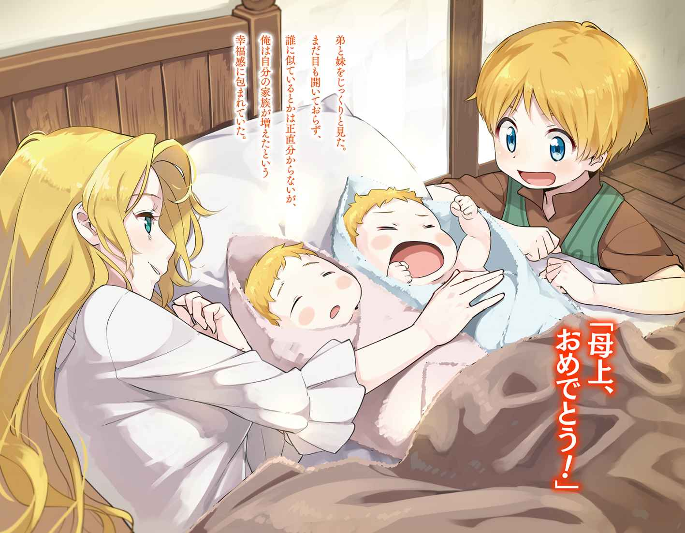
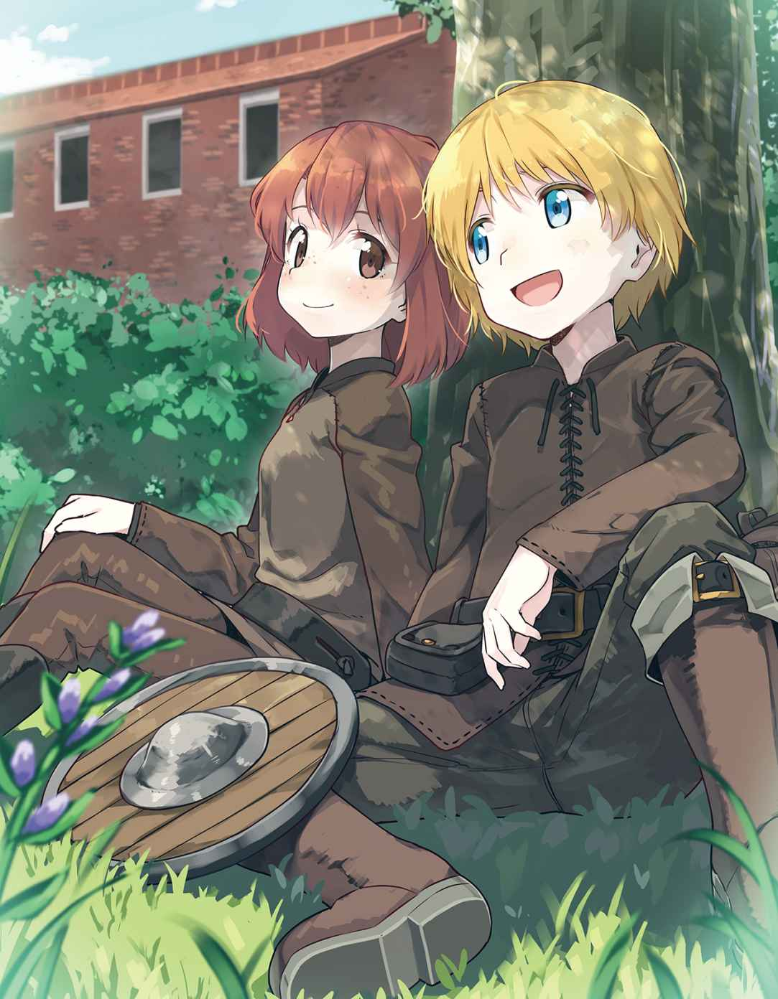
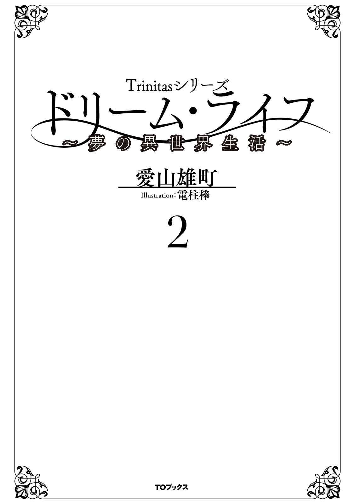
イラスト：電柱棒
デザイン：木村デザイン・ラボ
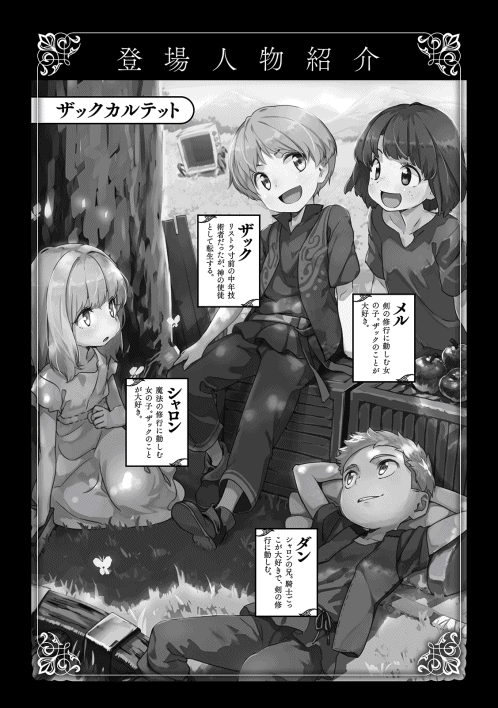
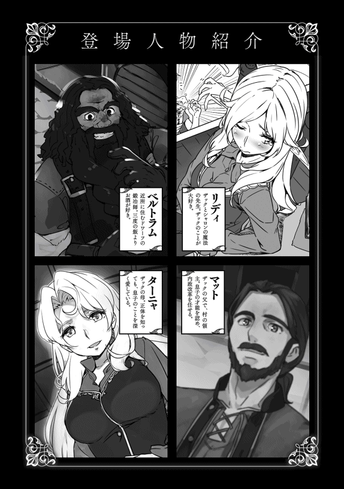
別の世界からの転生者であることを家族や従士たちに告白 してから約半年。
皆の力を借り、積極的に故郷ラスモア村の改革を進めている。未だ成果がはっきりしないものも多いが、それでも少しずつ成果が見えてきている。
そんな実りを感じ始めている今日、この村にある唯一の神殿で従士イーノス・ヴァッセルと従士ニコラス・ガーランドの娘ジーンとの結婚式が執り行われる。
先代の領主である祖父ゴーヴァン・ロックハートは、二人のために近隣の町ボグウッドから神官を招き、二人の式は厳かな雰囲気の中で挙げられていく。
式自体は人の神 の祝福を受けるだけの簡素なものだったが、若い二人は多くの人々の祝福を受けていた。
領主である父マサイアス・ロックハートはカエルム帝国の軍服をベースにした礼服を贈っており、新郎イーノスはそれを誇らしげに身に纏 っている。更にその腰には祖父が貸した儀礼用の立派な長剣が吊るされていた。一方の新婦ジーンは俺の母であるターニャから贈られた白いドレスを纏い、明るい赤毛の髪には白い花が美しく飾られ、清楚さを際立たせていた。
（イーノスは七五三の男の子じゃないが、服に着られているって感じだな。ジーンは大人しい感じの娘だと思っていたけど、結構美人だったんだな。母上やクレア、それにリディみたいな美人に囲まれているから気づかなかったな......）
ロックハート家の屋敷には母ターニャにダンやシャロンの母であるクレア、更に絶世の美女であるリディがおり、派手さがないジーンの美しさに気づいていなかった。
俺たちが祝福する中、二人はそのままの姿で村唯一の酒場、黒池 亭に向かった。
馬車が荷馬車なのはご愛嬌だが、それでも村の人々から次々と祝福の言葉を掛けられ、二人は恥ずかしそうに小さく手を振りながらも嬉しそうな顔で祝福を受けていた。
黒池亭に着くと、すぐに宴会が始まった。
祖父は屋敷で披露宴を行いたかったようだが、俺が黒池 亭で行うことを提案したのだ。
イーノスは父の副官のような立場であり、ジーンも屋敷の手伝いが主な仕事なので、二人とも村人との交流が少ない。この機会にもう少し村の人たちと交流した方がいいと、父と祖父にここで披露宴を行うことを提案したのだ。
村の人々もジーンが村の運営で世話になっているニコラスとケイトの娘だと知っており、収穫祭かと思うほど大勢の人が集まっていた。
祖父の挨拶 で宴が始まるが、堅苦しいことが嫌いなロックハート家らしく、すぐに無礼講となり、和やかな雰囲気で宴会は進んでいく。
ニコラスに世話になっているからと、二人には様々な祝いの品が贈られた。チーズなどの食材、羊毛で作られた毛糸の束や蔦 で作られた素朴な籠 など、高価なものはないが、彼らが心を込めて作ったものが山のように置かれていく。
その光景に祖父も父も目を丸くしていた。
内政を取り仕切るニコラスは細かいことに気がつくため、村の人々の信望が篤 い。誰のところが小麦のできが悪く、誰のところが豆のできが良いとか、そんなことを知っているから、誰と誰で物々交換するといいというようなアドバイスもしていた。また、病気の子供がいるところには、森に入る従士や猟師に頼んで薬草を採ってきてもらって届けさせたこともある。
俺も一緒に仕事をするようになって初めて気づいたのだが、恐らく父も祖父もここまで慕われているとは思っていなかったはずだ。
（実際、ニコラスはうちにはもったいないくらいの人材だ。気配りはできるし、一を聞けば十を知るみたいなところもある......）
まだ驚きの表情が消えない祖父を見ながら、その先見性に感心していた。
（じい様がニコラスを留学させたのはさすがだな。しかし、じい様もここまでニコラスが慕われているとは思っていなかったんだろうな）
披露宴も佳境に差し掛かる頃には、イーノスはベロベロに酔っぱらっていた。
（今日の初夜はどうなるんだろうね。さすがにそこまでは考えなかったな......）
この披露宴を仕組んだ黒幕である俺も、さすがに夜のことまでは気が回らなかった。
（まあ、母上辺りがフォローしてくれると信じているんだが......）
披露宴は夜まで続いたそうだが、俺たち子供は午後三時くらいに屋敷に戻っていく。
館ヶ丘への帰り道ではジーンの姿に感化されたのか、メルとシャロンがいつも以上にくっついてくる。それを見たリディが「もてていいわね」と嫌味を言って、プイと離れていく。
幼児相手に嫉妬しなくてもいいんじゃないかと思わないでもないが、面白いのでそのまま放置しておいた。
案の定、その夜は構って欲しいのか、いつもより甘えたような仕草が多い。
（本当に精神年齢は幼児と変わらないな。エルフは人間の十倍の寿命を持つって言われているが、精神の成長も十倍遅いのか？ それなら計算が合うか......）
俺がそんなことを考えていると、リディが気づいたのか、「失礼なことを考えているでしょ」と言ってくる。
俺は「リディはかわいいなと思っていただけだよ」と言ってはぐらかすが、「子供っぽいって考えていたんでしょ」と口を尖らせている。
（そこが子供っぽいんだけど......まあいいか。これはこれでかわいいし......）
イーノスとジーンの初夜がどうなったのかは知らないが、次の日以降も仲良くしていることから、うまくいったのだろう。
十二月になると、丘を寒風が吹き抜け、ラスモア村は一気に冬化粧を始める。
空は灰色の重い雲に覆われ、大地は灰色と茶色に染められ、夏にはあれほど色彩豊かだった丘も、すっかりモノトーンに変わっていた。
屋敷のある館ヶ丘にも霜がおり、馬場を歩く馬たちの吐く息が白く吹き上がっている。
日照時間が短くなったこともあり、朝の訓練は暗闇の中で行われている。祖父が用意する灯りの魔道具の中で、兄と俺は必死に素振りを続けていく。
俺の剣術レベルは三にまで上がり、何となくだが素振りの型が決まり始めたような気がしている。だが、祖父の素振りを見た瞬間、その歴然たる差に自分はまだまだだと思い直す。
このレベルについてだが、疑問に思ったことがあったのでニコラスに教えてもらった。
まず、〝レベル〟だが、正式には〝職業レベル〟と言うそうだ。剣術士という〝職業〟のレベルを表わすもので、スキルレベル──剣術などのレベル──と、表示されないが経験レベルの低い方が職業レベルとして表示される。
つまり、スキルレベルは訓練などによって得た技量を表わすが、技量があっても経験がないものは職業レベルが低くなるということだ。
そこで不思議に思ったのだが、俺の剣術士レベルはスキルレベルと同じだ。実戦経験もなく同じというのが合わない気がしたため、そのことについてもニコラスに聞いている。彼曰く、祖父のような達人に一から稽古を付けてもらう場合、こういうことが起きることがあるらしい。
何となくだが、理屈は分からないものの感覚的には分かる気がしている。
実戦経験豊富な達人に習うことにより、その経験を生かした修行となるため、ある程度経験レベルが上がるのではないか。但し、どれほど高レベルの達人であっても教え方が悪いと経験レベルが上がらないことがあるそうなので、ニコラスの考え方で合っていると思う。
更に、大まかな目安というものについても教えてもらった。
剣術士で言えば、レベル一から五が一応使い方を知っている程度の素人。十五くらいまでが軍隊の新兵クラス。三十くらいまでが一般的な職業軍人レベル。五十くらいまでが古参兵 と呼ばれるレベルで、それ以上になると達人と呼ばれるそうだ。
ちなみに祖父のレベルは七十五。達人レベルと称されるレベルでもかなり高いレベルらしい。実力主義の傭兵の中でも一流を指す三級の上位に当たるそうだ。
（キャラクター作成時の設定が正しいなら、剣術ならレベル八十に到達できる才能があったはずだ。修得速度は普通の人の三倍なんだが、全く実感が湧かない。メルがほぼ同じペースで上がっているし、ダンともそれほど差が付いていない。どうなっているんだろうな......）
俺はなかなか上がらない剣術レベルに少し嫌気が差し始めていた。
祖父に言わせると、四歳でレベル三というのはあり得ないレベルだというのだが、半年も掛けて素人とほぼ同じ程度という評価に凹む。
剣術はそんな調子だが、魔法の方は順調だ。
毎日、魔力切れ寸前まで魔力を消費しているおかげなのか、九月からの三ヶ月で光と風の属性がレベル二に、火と木と水と土がレベル一に上がっている。闇と金についてはイメージがうまく伝えられないのか、レベルは上がっていない。
リディが言っていた通り、得意な属性を上げておけば、その他の属性の上がり方が早いような気がしている。この辺りのからくりはいまいち分からないが、一つのものを極めた方がいいというのは武術も魔術も同じらしい。
初雪が舞った十二月十三日。
夕食の時に母が懐妊したという発表が父からあった。
産婆 も兼ねる治癒 師のドロシー婆さんのところで診てもらった結果、三ヶ月目を過ぎたところで、来年の夏前、つまりトリア暦三〇〇七年の六月頃に出産する予定らしい。
この発表にメイドのモリーが興奮気味に「おめでとうございます！」と祝福を伝え、「すぐにでも準備を......」と、すぐにでも出産準備を始めそうな勢いで立ち上がろうとした。
それを見た祖父が「落ち着け、モリー。まだ半年以上も先じゃ」と言うと、食卓に笑いが起こる。
（弟か妹か......前世ではいなかったしな。どんな感じなんだろう。兄弟っていうより子供か孫っていう感じなんだろうか......）
来年の六月ということは、俺が召喚された後、神に告げられた二年後に当たる。
つまり、生まれてくる子供が〝神に送り込まれた者〟の可能性があるということだ。俺が必ず出会うというなら、最も確実に出会う方法は兄弟になることだろう。
弟か妹なら守ることも教えることも不自然ではない。
できれば、生まれてくる弟か妹がその神の子でないことを望む。誰かは分からないが、その子を排除しに掛かるということは、命を狙われるということだ。
その子が不幸になることもあるが、それよりもこの村、この家の人たちに不幸が舞い降りることの方が気になる。
もし、生まれてきた瞬間に〝運命に導かれた子〟であるという啓示が降りたら、俺はどう思うのだろうか？ その子の誕生を心から祝福できるのだろうか？
母の懐妊の話を聞いてから、そんな不安が胸の中に渦巻いていた。
夕食後、祖父と父にその話をしにいった。正直、話をするのは気が重かったが、半年前に俺が神から遣わされた子供を導くという話をしている。二人が覚えているかは定かではないが、言わざるを得ない。
父に話があると言って、共に祖父の部屋に向かった。祖父も父も俺が不安そうにしていることに気づいていたようだが、何も言わず、静かに俺が話し出すのを待っている。俺は意を決して自分が感じた不安について伝えていく。
「以前、この世界を救うであろう者を導くという話をしたと思います。神の啓示によれば、その者が生まれるのが来年に当たります」
二人もその言葉ですぐに気づいたようだ。父が「つまりターニャの腹の子がその神に遣わされる子だと」としわがれた声で呟 く。
俺は首を横に振り、「いいえ、その可能性があるというだけです」と即座にそれを否定した。
「だが、お前がここにいる以上、ここで生まれると考えるのが最も自然ではないのか？」
祖父も俺と同じ疑念を感じているようだ。
「生まれるまで分かりませんが、出会えば啓示があると言われたと記憶しています。それがどのようなものなのかは分かりませんが、少なくとも私が教え導く者であると認識できるそうですから......」
「儂もマットもこのことを忘れておった。ターニャにはどうすべきだと考える？」
僅かに躊躇 った。生まれてくる子供のことに気を取られ、母のことはあまり考えていなかったのだ。
「母上にはお話ししない方がいいと思います」
正直なところ、どちらがいいのか分からない。だが、生まれてくる子がその神の子であるとは限らないから、母を無駄に心配させる必要はないと考えたのだ。
「そうじゃな。ターニャが気づいておれば別じゃが、無駄に心労を与える必要はなかろう。マット、お前の意見はどうじゃ？」
父は目を伏せて十秒ほど口を開かなかった。
「私も話さないでおこうと思います。これは我々三人だけの胸に収めておいた方がよいでしょう」
これほど重要なことを妻に隠すことに、父は抵抗を感じていたようだ。しかし、最終的には心労を与えるべきではないという祖父の言葉に従った。
重苦しい空気を引き連れ、俺と父は祖父の部屋を出る。
「考えようによっては、その子がここで生まれた方が良いのかもしれんな」
唐突に話し始めた父に驚き、俺は父の顔を見上げる。
「ここなら父上もいる。ウォルトたちもいる。そして私も。お前が生まれてくる子を守るとしたら、ここ以上に適したところはない。お前も、そして生まれてくる子も一緒に守れるからな」
俺は父が生まれてくる子供だけでなく、俺のことも案じてくれたことに胸が熱くなる。
「私はここではないところで生まれて欲しいと思っています。ここがその世界を破壊する者の標的になるのは耐えられません」
父は「そうだな。そうあって欲しいものだ」と言って、俺の頭にその大きな手を載せた。
俺の部屋の前で父と別れ、一人になる。
（これからの七ヶ月が辛そうだ。一年、いや半年ずれただけでも良かったのに......だが、生まれてくる子を守るために俺にできることをやる。それしかない......）
翌日から俺は訓練メニューを自主的に増やした。
四歳児の体にはかなり負担を掛けるが、それでもやれることを少しでもやっておきたいと思ったからだが、それに気づいた祖父に静かに諭 される。
「焦る必要はない。儂もマットもおる。お前はもっと家族を信頼するべきじゃ」
「その通りですが......」
俺が反論しようとしたところで、祖父に厳然たる事実を突きつけられる。
「今のお前が焦ったところで、その体で、それも僅か半年では何もできん。体を壊すのがおちじゃろう。お前なら分かっておろう」
確かにその通りだった。今、焦ったところで何もできない。もし、俺の力を必要とするなら、もっと早い時期に俺は召喚されたはずだ。最も俺の力を必要とされる時期に、必要十分な力を持っておくようにすべきだ。変に焦って体を壊しては元も子もない。
俺は素直に頷 き、訓練メニューを元に戻した。
しかし、翌日、祖父から訓練方法の変更が伝えられた。
「ダンも剣術のレベルが上がってから大分経つ。今日から素振りだけではなく、打ち込みも訓練に加える」
この時、ダンの剣術レベルは二に上がっていた。ちなみにメルはすでに三に上がっている。今日から午後の訓練の時に、祖父かウォルトを相手に打ち込みの練習をすることになった。当面は反撃しないそうだが、打ち込み方が悪い場合は、罰として祖父から打ち据えられるという話だ。
ただの木の棒とはいえ、防具もなく、ただの布の服の上から打ち込まれると思うと、ぞっとする。昨日はあんなに焦っていたのに、自分が痛みを感じる訓練が始まるとなると怖気づくというのはいかにも情けない。
十二月に入り午後四時頃には薄暗くなるため、昼過ぎから始まる自警団の訓練に加わった。
村の男たちは小さな子供がおもちゃのような木の剣を持ってやってきたため、微笑ましく思っているようで、俺たちに笑顔を向けるが、すぐにウォルトの怒声で表情を引き締める。
「今日からザカライアス様と従士の子供らが訓練に加わる！ 子供たちに無様な姿を見せるんじゃないぞ！」
俺たちは自警団の様子に目を向けることなく、祖父の前に立った。
まずは俺からだ。
俺は木剣を正眼に構え、甲高い子供の声で気合を入れ、祖父の剣に目掛けて打ち込んでいく。
五メートルほどの距離を一気に縮め、上段から叩きつけるように剣を振り下ろす。
カーンという硬い木が打ち合わされる音が聞こえるが、その直後に背中を打ち据える打撃が降ってきた。俺はそのまま顔面から地面に倒れ、鼻を強かに打つ。
「打ち込んだ後に目を離すな！ 打ち込んだらすぐに離れろと教えたはずじゃ！」
痛みを堪えながら「はい！」と答えて、すぐに立ち上がり祖父から距離を取る。
（痛ぇよ、これは！ しかし、じい様も容赦 がないな。普通の子供なら泣くぞ。いや、俺でも泣きたくなる......）
俺が離れたことに満足したのか、次にメルの名が呼ばれた。
俺は剣を構えながら、ダンの待つところに戻っていくが、今の容赦のない一撃を見たダンの顔は青くなり、泣く寸前といった表情になっていた。
「大丈夫だ。おじい様も手加減してくださっている。少し痛いけど我慢できないほどじゃないよ」
一応、フォローを入れておくが、目の前でメルも同じように叩きのめされると、鼻をぐすんと鳴らしていた。そして、ダンの番になる。
彼は俺とメルが叩きのめされたのを見てびびったのか、いつもより動きが硬い。
打ち込みの速度も遅く、祖父は剣で受けずにそのまま背中を打ち据えた。
「敵に呑まれてどうする！ 戦いは気迫だといつも言っている！ 死ぬ気で掛かってこい！」
半泣きのダンは、それでも立ち上がり、今度は渾身の力を込めて打ち込んでいった。
祖父の剣に当たり、いい音をさせた後、すぐに祖父の剣が彼の背中を襲う。
「ザックに言ったことを聞いていなかったのか！ 敵から目を離すな！」
ダンは泣きながら、俺がやったように剣を構えながら、後ろに下がっていく。
その後は祖父から打ち込まれることなく、訓練が進んでいった。
ダンの動きも気圧 されていた最初に比べるとかなり良くなっており、打ち込んだ後も油断なく目を配っている。
（確かに最初に体に叩き込まれると、嫌でも覚えるもんだ。しかし、メルの動きはいい。二、三ヶ月で兄様たちを抜くんじゃないか？）
そんな訓練を俺たちは毎日続けていった。
十二月二十五日。
二日前から降り続く雪のため、外は一面銀世界になっている。
元の世界ならホワイトクリスマスだとはしゃぐところだが、当然のことながら、この世界にクリスマスはない。それでも昨日までは新年を迎える準備で何となくソワソワした年末特有の雰囲気が漂っていた。
実際、今も屋敷の中では、新年を迎えるための準備が進められている。
メイド長のモリーと娘のトリシア、そして新婚のジーンがクッキーなどの焼き菓子を焼いている。
母ターニャとダンとシャロンの母であるクレアは暖炉の前で編み物をしながら談笑している。ニコラスの妻のケイトとメルの母であるポリーは大きな鍋でスープを作りながら、時折、俺たちに飲み物などを作ってくれる。
ダンとメル、シャロンの三人が仲良く暖炉の脇で本を読んでいる。しかし、この日はいつもと雰囲気が違った。
屋敷には祖父と父、従士頭のウォルト、そしてリディの姿がない。その代わり、普段はいないクレアやケイト、そしてメルたちが屋敷にいる。
発端は森に異変があったというガイの知らせだった。
昨日、森の中を巡回していた元冒険者のガイと猟師たちが、ゴブリンらしい足跡を見つけたというのだ。彼の報告ではその群れは数十匹ほどで、村に接近する可能性があるということだった。祖父と父はゴブリンの討伐を決め、今朝早くから自警団と共に森に入っていた。
時は一日遡 る。
十二月二十四日、午後二時頃、巡回から戻ってきたガイが祖父のところにやってきた。常に明るい笑顔を見せている彼だが、この時はその表情にいつもの明るさはなかった。彼の後ろには厳しい表情をしたニコラスら他の従士たちも続いており、揃って祖父の部屋に入っていく。
俺と兄のロッドも彼らの後に続いて、祖父の部屋に入っていった。
ガイは祖父と父の前に立ち、巡回で見つけた異変について報告する。
「東の森のウッドフォード川近くで、ゴブリンらしい足跡を見つけました。どうやら独立したばかりの群れが移動しているようで、村に近づく恐れがあります」
ウッドフォード川は村の南にある黒池 に流れ込む小さな川で、魔物が多く棲むアクィラ山脈から流れている。
ガイの報告に父の顔が僅かに歪んだ。
祖父は表情を全く変えず、「どの程度の数だ？」とガイに問う。
「おおよそですが、三十から四十といったところだと思います」
祖父はガイに頷くと、従士たちに向かってゴブリン討伐の準備を命じた。
「明日の朝、儂とマットがそれぞれ五十人ずつ率いて討伐に向かう。ヘクター、自警団にこの情報を伝えておいてくれ。今夜は警戒を怠るなともな。ウォルト、留守の指揮はお前に任せる。ヘクターとイーノスはマットに、ニコラスは儂についてくれ。ガイは猟師たちと斥候を頼む......」
祖父の指示で全員がきびきびと動き出す。俺はその姿に認識を新たにしていた。
（じい様たちは本当に軍人だったんだな。ニコラスですら、いつもとは全く印象が違う。兵士の顔になっている......）
気づくとリディが祖父に何やら話しかけていた。
「......私も手伝うわよ。ゴブリン程度でも数がいれば結構面倒だもの。いいでしょ、ゴーヴィ？」
祖父は何か言いたそうだったが、すぐに笑みを浮かべ、「分かった。リディアは儂についてきてくれ」と彼女の肩に手を置く。リディも小さく頷き、自分の部屋に準備に行った。
残された俺は自分の無力さを感じていた。
（さすがにこの体では守られるしかない。それでも家族が命懸けの戦いに向かう姿を見てしまうと自分の無力さが悔しい。せめて、もう少し大きければ......）
この村に魔物の群れが近づくのは三年振りだそうだ。定期的な討伐によって、村から五キロメートル以内に危険な魔物が住み着かないよう常に注意を払っているためだ。
ガイの話では、今回のゴブリンは東の森の奥で増えすぎたものが、群れを割る形で西に移動してきたのではないかとのことだった。
詳しいことは分からないが、今年は気候もよく、ゴブリンたちもいつも以上に繁殖し、それが冬になり食料が乏しくなってきたことで群れを割ったのだろうというのが、ガイの見立てだ。
ゴブリン自体はファンタジーの定番なのだが、俺はまだ見たことがない。それどころか、この世界にいる魔物というものをまだ一度も目にしたことがなかった。
それほど、この村は平和なのだ。
父に聞いてみると、ゴブリンは身長百三十から百四十センチくらいの人型の魔物で、短い手足に突き出た腹、額には小さな角が生え、青黒いような緑色の皮膚をした醜い姿なのだそうだ。棍棒などの簡単な武器を使うこともあるが、基本的には大した戦闘力を持たず、新兵でも互角以上に戦える。ゴブリンの最大の特徴はその繁殖力であり、条件によってはネズミのように数ヶ月で数十倍に膨れ上がることがあるほどだ。
また、稀 に棍棒ではなく、剣を使ったり弓を使ったりもする。更に魔法を使える個体も存在すると言われている。特に危険なのは群れのリーダーの知能が発達している場合で、狡猾 な罠 を仕掛けてくることもあるそうだ。
まさにゲームかファンタジー小説の設定通りの魔物だ。
十二月二十五日、午前七時。
祖父たちは金属製の鎧に身を固め、それぞれの武器を手にしていた。
その完全装備の祖父たちが屋敷を出て行く。
祖父はハーフプレートに愛用のバスタードソード、左手には小さめの丸盾 を装備している。横にいる父も祖父と同じ装備に身を固めている。
弓術士のヘクター・マーロンは鋼の胴鎧 以外の防具はすべて革製で、彼の身長ほどの長弓 を肩に掛け、腰には短めの片手剣を吊るしている。
剣術士のニコラス・ガーランドはかなり重装備だ。鋼の胴鎧 に鋼の籠手 、大腿甲 、脛当て を着け、カイトシールドとやや幅広の長剣 を腰に吊るしている。
斥候 のガイ・ジェークスは元冒険者らしく、革製の鎧で身を固め、取り回しのいい短めの合成弓 と長剣 を装備している。
留守番役のウォルトはホーバークと呼ばれるチェインメイルに身を固めていた。愛用の槍を持った姿は、まさに騎士に付き従う従士そのものだ。
それぞれロックハート家の紋章──剣を持つ獅子──が縫い込まれたマントを羽織り、きびきびとした動作で準備を進めていた。
祖父たちの姿に見惚れていた。
（正直かっこいいと思う。映画のワンシーンみたいだ......兄様なんか、完全に憧れの表情だものな。まあ、俺も端から見れば同じかもしれないが......）
そこに使い込まれた革鎧に身を包み、小型の合成弓 を手に持ったリディが現れる。
俺は思わず彼女に近づき、声を掛けていた。
「気を付けてくれ。無理は駄目だぞ。危険なことは......」
俺が必死に声を掛けているのを見て、「心配性ね。大丈夫よ、相手はたかがゴブリンよ」と微笑んでいる。
確かに祖父とパーティを組んでいた時にはもっと大物とやり合っていたのだろう。それでも俺は心配だった。
多分、それが顔に出ていたのだろう。彼女は俺の前で跪 くと、俺の体をギュッと抱き締め耳元で囁 く。
「大丈夫。ちゃんと帰ってくるから。帰ってきたら、ご褒美 をもらおうかな。うふふ......」
俺は心配し過ぎている自分の姿が少し恥ずかしくなり、「分かった。だから絶対無事で帰ってこいよ」と下を向いて呟いていた。
ウォルトを除く全員が門から出て行く。残された俺たちは雪の中を進んでいく後姿を見守るしかなかった。
ジリジリと時間だけが過ぎていく。
念のため、メルやシャロンたちも母親たちと一緒に屋敷に来ていた。
ウォルトは残された自警団の指揮を執るため、村の顔役であるゴードンの家に行っており、この屋敷の警護は自警団から派遣された十名の若者に任されていた。
当初、ウォルトは村人たちを館ヶ丘に集めるつもりでいたようだが、祖父にその必要はないと却下された。ゴブリン程度に過剰だという判断らしい。祖父は村の中心であるゴードンの家を拠点とするよう彼に指示を出した。
それでもウォルトは身重の母のことが心配だったようで、十名の自警団員を回して警備を強化してくれた。彼は今頃、残りの自警団員と共に村の中を巡回しているはずだ。
状況をよく理解していないメルたち三人は、屋敷の中で楽しそうにはしゃいでいる。
兄ロッドとメルの兄シムはある程度状況を理解しているのか、訓練用の木剣を持ち、心配そうな面持ちでいた。しかし、祖父たちの姿の話になると、その不安を忘れて誰のどこが格好良かっただのと二人で盛り上がっている。
やることもなく、他の子供たちのようにはしゃげない俺は母の横に漫然と座っていた。突然、母が「皆のことが心配？」と声を掛けてきた。俺はどう応えていいのか戸惑い、「え、はい。雪の中ですし、相手の数も分からないですから......」としどろもどろになる。
母は小さく微笑んで、俺を抱き寄せる。
「大丈夫よ。あの人たちはとても強いわ......私もここに来た頃、いつも心配だったわ。昔はね、もっと頻繁 にこんなことがあったの......」
母自身、大都市に住んでいた平民であり、魔物の脅威とは無縁の生活だった。そのため、ここに来た当初は頻繁に現れる魔物の姿に怯えていたそうだ。その頃は今回のような討伐作戦が頻繁に行われ、特に酷かったのは、五十匹以上のオークの群れが近くに来た時だそうだ。
「......あの時はこの館ヶ丘にもオークの吠える声が聞こえてきたわ。その時は村の人たちが十人以上も亡くなったの。お義父様はかなりがんばったそうなのだけど、それでも......その時よ、ガイがうちに仕えてくれるようになったのは」
九年前、当時冒険者だったガイはオークの群れの討伐を仲間たちと請け負った。しかし、予想以上に大きな群れで仲間たちが応援を呼びに行く間、彼が群れのあとをつけていた。そして、オークたちがここラスモア村に近づき、それに気づいた祖父は自警団員七十名を率いて迎え撃った。
その当時の自警団は練度が低く新兵程度の力量しかなかった。オークと一対一で渡り合えるのは祖父とウォルト、ヘクター、ニコラスしかいなかった。その戦力で犠牲者が十人程度というのは奇跡的だそうで、祖父の戦いを見て感服したガイがそのまま屋敷に居ついてしまい、気がついたら従士になっていたという話だった。
「......だから、今回は大丈夫よ。お義父様もマットも、それにニコラスもヘクターもガイもイーノスも。それにあなたの大好きなリディアもね。うふふ......」
母が俺をからかうと、隣に座るクレアも一緒になって笑っている。
「ザック様は大変ですね。うちのシャロンも、それにメルもいますし。奥様、ザック様はどうなさるんでしょうね？ ほほほ......」
母とクレアにからかわれ、早々にこの場を退散する。
（俺が心配しているのを気遣ってくれたんだろうな。本当は自分たちも心配だろうに......だが、最後の方は本気でからかいに来たような気がするが......しかし、どれだけ俺のことは噂されているんだろうな......）
少し気が紛れた俺は、メルたちのところに向かい、彼らの相手をして時間を潰した。
午後五時。外はすっかり暗くなったが、一向に祖父たちが帰ってくる気配がない。
ウォルトの命令で自警団員が交代に来るのだが、森に向かった班の動向はまだ分からないと言っていた。
夕食ということで俺たちは全員で食卓に着いたが、いつもより人数が多いにもかかわらず、食卓は静かだった。いつも元気なメルたちですら、周りの雰囲気を感じとったのか騒ぐことなく静かに夕食を食べていた。
更に二時間ほど経ったが、未だに森に入った班の情報がない。
俺たち子供は寝る時間が近づいているため寝室に向かうが、俺は祖父たちのことが心配で眠れそうになかった。
（何かあったのか？ さすがに暗闇の中で戦うわけにはいかないだろうし、どうして戻ってこないんだろう？）
そんなことを考えている間に俺の寝室にメルとシャロンが泊ることが決まっていた。どうやら母とクレアの悪戯 のようだ。
（まだ、こんなことができる余裕があるなら、大丈夫なのだろう。それにしても携帯電話か無線が欲しいな。情報がないというのが、こんなに辛いと思わなかった......）
俺が自分のベッドに入ると、メルとシャロンも布団の中に入ってきた。
（両手に花か。一種のハーレム状態だな。リディが見たらまた拗ねそうだ......それにしても......もう考えるのはよそう）
俺がゴロゴロと寝返りを打っていると、メルたちも寝られないのか、何か話をして欲しいとせがまれる。俺は気を紛らわすため、思い出せる童話を語り聞かせていった。
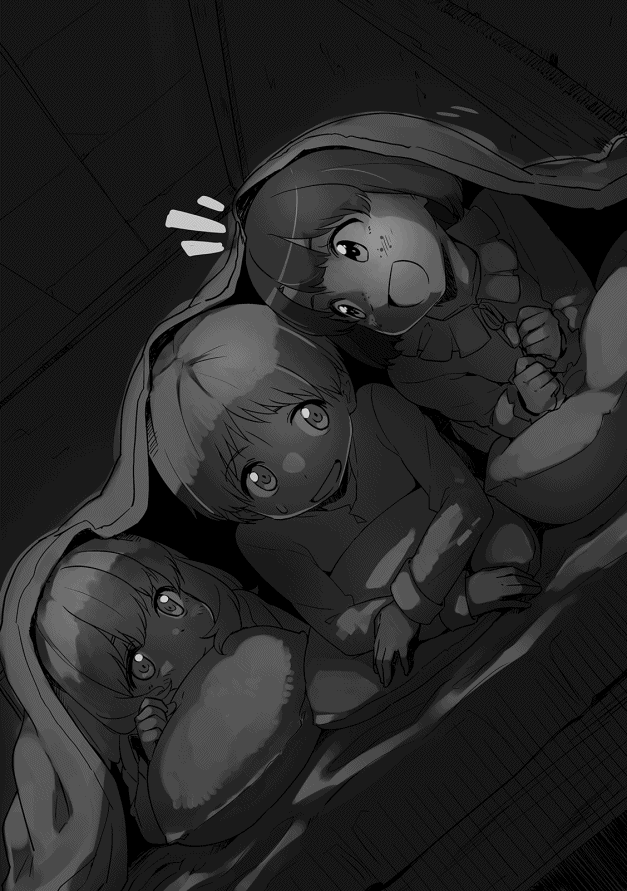
（本当に大丈夫なのだろうか......リディ。無事でいてくれ......）
俺は心ここにあらずといった感じで童話を語り聞かせていたようで、二人が眠りについているのに気づいていなかった。
そして、夜が更け、俺がうとうとし始めた頃、屋敷の一階が騒がしくなった。
祖父たちが帰ってきたらしく、母たちが出迎えているようだ。
俺は二人を起こさないようにそっとベッドから抜け出し、一階に降りていく。食堂には返り血を浴びた祖父とニコラス、そして、リディの姿があった。彼女は汗で髪が額に張り付き、やや疲れた表情をしているが、ケガなどはしていないようだ。
「お帰りなさい！ 無事でよかった！」
俺は思わず安堵の声を上げていた。
「ゴブリン程度に後れは取らぬよ。だが、時間は掛かったな」
そして、返り血を見ながら、「モリー、トリシア！ 返り血を拭きたい。湯を用意してくれ！」と叫ぶ。奥からモリーの「ただいま、お持ちします！」という元気な声が聞こえてくる。
俺は父たちの姿がないことに気づき、「父上たちはどうされたのでしょうか？」と尋ねると、祖父はモリーの用意した湯で返り血を拭きながら、
「マットの班は空振りじゃったからな。後始末を任せてきた」
上機嫌な祖父は戦いの様子を語ってくれた。
日没の一時間ほど前、祖父たちは村に戻ろうと森から出ようとしていた。そこに索敵に出たガイから、ゴブリンの群れを発見したという報告が入った。数は三十五匹と情報通りで、それほど時間を掛けずに掃討できると祖父は判断した。
だが、その後のゴブリンたちの行動が祖父の予想を裏切った。村に接近してくると警戒していたところ、突然、村から離れるように動き始めたのだ。
祖父は暗闇の森の中を移動する危険を考えた。しかし、ここでゴブリンを逃がすと、降り続く雪で足跡は消え、翌日以降、相当広い範囲の捜索を行わなければならなくなる。幸い、自警団を含め全員がこの森には頻繁に入っており、土地勘があった。そこで父たちの班にも連絡を入れさせ、ゴブリンたちを包囲するように動くことにした。
ゴブリンたちは灯りの魔道具を使って移動する父の班を見つけ、それを回避するように祖父たちの方に向かっていった。祖父の班は夜目の利くリディの先導で、灯りをつけずにゴブリンたちの向かう先に移動し、待ち伏せを仕掛けることにした。
しかし、その群れのリーダーの知能は高く、普通のゴブリンなら闇雲に戦うところを逃走という賢明な選択をした。祖父はそこまで見越して、待ち伏せを仕掛けたのだが、ゴブリンたちは祖父たちの姿を見つけると一目散にバラバラになって逃げ始めた。
祖父たちも慌てて逃げるゴブリンたちを追いかけるのだが、夜目の利くゴブリンに対し、暗くなった森の中ではうまく連携がとれない。結局一匹ずつ倒すような形で仕留めていくため、予想以上に時間が掛かったということだった。
今回はリディがいたため、一匹も逃がすことなく倒せたが、もし、エルフの彼女がいなければ更に時間が掛かっていただろうと祖父は笑っていた。
「リディアがいてくれて助かったわい。さて、マットたちには悪いが一杯やって先に休ませてもらおう」
祖父はニコラスと共に食事を始める。
俺がリディに「お疲れ様。早く食べて休んだ方がいいよ」と言うと、彼女は俺の前にしゃがみ込んで「ご褒美は？」と上目遣いで聞いてくる。
（困ったな。何も考えていなかった......そうだ）
「じゃ、添い寝してやるよ。俺のベッドはメルとシャロンに占領されているしな」
その言葉にリディが噴 き出す。
「それは誰にとってのご褒美なの？ まあいいわ。じゃ、一緒に寝てあげる」
横で見ていた母とクレアは、「あらあら......」と何か二人で話しているが、俺はそれを無視してリディの横に座っていた。
体を拭き終わったリディが軽い食事を摂った後、二人で彼女の部屋に向かう。
（大人の体なら興奮するところだが、この体じゃあな......本当にどっちが添い寝してもらうんだか......）
リディと共にベッドに入る。
彼女の温かい体が俺に触れ、ゆっくりと抱かれる。
悪戯っぽく、「温かいわ。今日はこのまま寝るわよ。ご褒美だものね」と言って、更に俺を抱き締める。
「今日はお疲れ様。でも、本当に良かった無事で......」
俺は本気でリディのことを心配していた。
祖父やニコラスという歴戦の強者 がいたが、戦いに絶対はない。一つ間違えばケガもするし、最悪死ぬことすらありうる。
俺の心の声が聞こえたのか、彼女は「大丈夫よ」と言って笑い、更に強く俺を抱き締める。
「こんなことで死にはしないわ。まだ、何も始まっていないもの。そう、まだ何も......」
「そうだな......あと十年。十年経ったらリディを守ってやれる。十年経ったら......」
彼女はもう一度笑い、
「焦らなくていいわ。あなたとの時間は楽しいもの。一緒にいられるだけで......」
その後、いろいろなことを話した。
これから何をしたいのか、どう生きたいのか。
「何をするにせよ、リディと一緒だ。約束してくれるか？」
彼女は小さく頷き、俺に口付けをしてくれた。
（俺はリディと一緒に楽しく暮らしたい。正直なところ、生まれてくる弟、妹が神に選ばれた者であったとしても、リディを一番に考えるだろう。だが、本当にそうできるのだろうか？ 俺は神に操られないと言い切れるのだろうか？）
その思いを振り払うかのように、俺は自分の唇を彼女の唇に重ねていった。
十二月三十日。五日前のゴブリン討伐騒動も、終わってみれば何事もなく、再び平和な日々が戻っていた。討伐の翌朝、俺の姿がないことにメルとシャロンが騒いだらしいが、それ以外は何も起こっていない。
改革プランの状況だが、どれも大体順調に進んでいる。
リディが教師を務める巡回教室も順調で、リディは子供たちの受けがいいとニコラスが教えてくれた。そして、対象外の十歳以上の子供や大人も興味を示し始めているとも教えてくれた。
石鹸 についても順調で従士たちの家でも特に問題なく受け入れられている。ニコラスとケイトが発見した製造方法でヘクターのマーロン家やガイのジェークス家でも作ってもらい、品質に問題ないか検証している。今のところ問題はなく、今の製造法でも十分売ることができると思っている。
トイレと有機肥料については、馬と牛の糞 に麦藁 と森で取ってきた腐葉土を混ぜ、そこに人の排泄物 を混ぜる方法を試している。秋までのものは順調に腐葉土に変わっているが、寒さが厳しくなってきてからの結果を待っているという状況だ。
今年の農作業には間に合わなかったが、有輪式重量犂 については木工職人のクレイグと鍛冶師のベルトラムに製造を依頼しており、春にはプロトタイプが完成する予定だ。
最後に最も力を入れている蒸留についてだが、こちらも順調だ。三ヶ月寝かせた若い蒸留酒を確認したが、僅かだが琥珀 色になっており、熟成させればウィスキーと言えるものになると確信している。
成功を確信した後、この蒸留酒に〝スコッチ〟という名前を付けた。もちろん、スコットランドのウィスキー、〝スコッチウィスキー〟にちなんだ名だが、このことで蒸留責任者のスコットが俄然やる気になっている。
〝スコッチ〟と名付けた理由に、責任者である彼がこの酒に愛着を持ち、やる気になってもらうというものがあったが、それが見事にうまくいった。但し、本当の目的は彼が資金力のある商人や貴族に引き抜かれるのを防ぐというもので、我ながらあざといやり方だと思っている。しかし、蒸留酒が爆発的に売れた場合、スコットを引き抜かれる可能性は高い。それを防ぐための布石なのだ。
ワインの絞りかすを蒸留した〝マール〟タイプについても蒸留が完了し、スコッチとマールで十樽 くらいが倉庫に眠っている状態だ。徐々にスコットの腕も上がっており、三年程度で出荷できるのではないかと期待している。
但し、今のところどれだけ作っていいものか悩んでもいた。ベルトラムはドワーフには絶対売れると確信しているが、下手に作り過ぎると売れなかった時に不良在庫になってしまう。ベルトラムがカウム王国の王都アルスにサンプルを送ったので、その結果を待って蒸留器の増設を考えようと思っている。
スコッチやマールの他にも短期で売り出すために作らせた果実酒が壷で作られており、こちらの方も二十個近い数の果実酒ができている。ただ、今のところ販路がなく、自家消費用に回そうか悩んでいるところだ。
多少の不安はあるものの、今のところ、すべてが順調に進んでいる。
冬の間に乾燥パスタの製造を、春には養蜂と甘味料の製造を考えている。
自分の鍛錬では剣術がレベル三で、魔法が最も高い風属性でレベル三になっている。
魔法については一つの属性を極めてから他の属性の訓練をした方が効率が良いとのことなので、今はリディの得意な風属性を集中的に鍛えている。
風属性では気体を操るということでイメージが難しく、どう攻撃魔法に繋げるか悩んでいる。ちなみにリディは風の刃 と空気の鎚 を良く使う。
彼女の風の刃 は透明なブーメランが飛んでいくイメージで、太さ五センチくらいの木の枝を簡単に断ち切っていた。空気の鎚 の方は圧縮空気を叩きつける感じの魔法で、最大限まで魔力を込めれば重装備の騎兵を馬ごと吹き飛ばせるほどの威力を持つそうだ。
俺の魔力保有量 はまだ九十一しかなく、どちらも大した威力はない。今はひたすら風の刃 の呪文を唱えて風属性のレベルを上げている。
ちなみに俺の風の刃 の威力は射程が三十メートルくらい、スピードが秒速三十メートル、大体時速百キロメートルくらいで、十メートル先の直径一センチくらいの木の枝を切り落とす程度だ。
スピードが遅いのがネックだが、頚動脈 などの急所に入れば、充分に殺傷能力がある。四歳児が持つ戦闘能力としては結構なものだろう。
残念なのはコントロールがあまり良くないところだろうか。十メートル先の的でも二十センチくらいの誤差が出る。リディはイメージが大事だというのだが、ブーメランだからだろうか、どうしても精度に欠けてしまう。
悔しいのでリディには内緒で新しい魔法を開発している。イメージは真空の刃の翼を持つツバメだ。速度は風の刃 に劣るものの自在に動かせるため、命中精度は格段に高い。何より飛ぶ姿が美しい。透明なツバメが自在に飛ぶ姿は見ていて楽しいのだが、魔力の使用量が大きいので数秒しか練習できない。
呪文を唱えれば魔力の節約になるが、魔法の発動に名前が必要になる。今、その名前を考えているのだが、いい名前が思い浮かばない。厨二的な名前を考えるのが苦手なことが原因だろう。
魔法で思い出したが、シャロンの訓練も順調に進んでいる。十一月には魔力の操作ができるようになり、教えているリディが一番驚いていた。
ただ、俺のように魔力保有量 が確認できれば別だが、まだ四歳の子供が魔法を使うことは危険ということで、魔力操作の練習を繰り返している。
年明けから簡単な魔法──シャロンは火と風の属性持ち──を使う訓練を始めるとリディが言っていた。彼女曰く、シャロンは天才だそうで魔術学院に行かなくても、十五歳くらいまでには十分一人前になれるだろうとのことだった。
今日も朝から雪が降っている。
雪が降ってもロックハート家の訓練は普段通りに行われる。嵐が来ない限り、雨が降っても訓練を行うので、雪程度ではやめる理由にはならない。嵐の時に訓練を行わないのは緊急時に備えるためであって、祖父曰く「敵は雨でも雪でも嵐でも襲ってくる。当然、それに合わせて訓練をすべきだ」とのことだ。
外に出ると、まだ漆黒の闇に覆われており、灯りの魔道具が照らす雪がきらきらと煌き、幻想的な風景を作り出している。
いつものように朝の挨拶を交わし、素振りを始める。素振りをしていると、丘の下から灯りが二つ揺れながら上がってくる。それはシムとメルの兄妹とダンとシャロンの兄妹が持つ灯りだった。
真面目なことに彼らも雨が降っても雪が降っても必ず訓練にやってくる。主家であるロックハート家の面々が訓練をしているのに、家臣の子供がやらないわけにはいかないという事情もあるのだろう。しかし、最年長のシムですら日本で言えば小学校低学年程度の年齢だ。そんな幼い子供たちが身を切るような寒風の中を、リンゴのように頬を赤くし丘を登ってくる姿を見ると感心するほかない。
いつも元気なメルの「おはようございます！」という声がしんしんと降る雪の中に響き、他の三人の声がそれに重なる。祖父はもちろん、俺たちも手を止めることなく、挨拶を返す。
いつもと変わらない日常。俺にとっては掛け替えのない日常だ。
今日、十二月三十日は大晦日 で、トリア暦三〇〇六年最後の日に当たる。
この世界は一ヶ月が三十日、一年が三百六十日なので十二月も三十日までしかない。
そして、一年の始まりが冬至に当たる一月一日だ。
その前日である大晦日、つまり今日は一年を無事に過ごせたことを神に感謝し、来る新年が平穏であることを神に祈る日だ。この辺りは元の世界と大して変わりがない。
雨が降っても雪が降ってもロックハート家の訓練は行われるが、さすがに大晦日の今日と明日の元日は自警団の訓練は行われない。
リディの巡回授業も今日は休みで、朝の訓練が終われば、のんびりとした時間が流れるだろう。
訓練が終わると、皆で食堂に向かう。家の中はぼんやりとした灯りが照らしている。この屋敷にはガラス窓がない。窓はすべて木でできているのだ。今日のように雪が降るような日でなくとも、冬のこの時期は暖房効率を考えて、窓はすべて閉ざされている。このため厳冬期はたとえ天気が良くても、昼間から灯りの魔道具の光に頼ることになる。
この灯りの魔道具なのだが、比較的安価で長持ちし、更には使う魔力も少ないというエコな照明器具だ。魔力が少ない子供でも簡単に灯せる。一度、使用する魔力 を計ってみたが、二時間くらいもつ物でも十から十五くらいしか消費しない。リディに聞いた話だが、普通の子供で四つや五つは苦もなく点けられる。
その魔道具の淡い光の中で朝食を摂り、その後は皆、思い思いの過ごし方で大晦日を過ごす。俺はメルたちと雪合戦などして遊び、その後はリディと魔法の勉強をして過ごしていた。
そして、夕方。
いつもより豪華な料理が食卓に並んでいく。
年末年始に向けて潰された豚や牛が暖炉で焼かれ、きれいに盛り付けられていく。シチューのようなどろっとしたスープと雪の下から掘り出した冬野菜を茹でたもの。そして、パウンドケーキのような甘い菓子が置かれている。
大人たちの手元には滅多に使わない銀製のグラスが並び、中にはワインや〝スコッチ〟、水で割った果実酒など、好みの飲み物が注がれていく。俺と兄のグラスには薄く割った果実酒が入れられていた。
この日ばかりはこの家で働くウォルト、モリー、トリシアも一緒に食卓に着いている。皆静かに席に着いており、時折聞こえる薪の燃え落ちるゴトっという音だけが、食堂に響いている。
全員のグラスが満たされると、祖父の言葉で晩餐が始まる。
「今年はイーノスとジーンが結ばれた。そして、新たにリディアが家族として加わってくれた。来年には新しい家族が生まれる。早ければイーノスのところにもな」
祖父は父と母、そして、ウォルトとモリーの二人に微笑みかける。更に俺をちらりと見てから、
「今年は〝いろいろ〟と新しいことに挑戦した。まだ、結果は出ておらんが、来年には良い結果が出るだろう。今年を無事に過ごせたこと、そして、来る年がより良い年になることを神々に祈ろう」
祖父が「神々に感謝を。乾杯」とグラスを持ち上げると、皆も同じように「「神々に感謝を」」とグラスを上げた。静かに食事が始まるが、すぐにいつもの賑やかな食卓に変わっていく。特に兄が先日のゴブリン退治のことを聞きたがり、祖父も酒が入るに従い、話に熱が帯びていく。
俺はその話を聞き流しながらリディと会話を楽しみ、母とモリーとトリシアの三人は生まれてくる子供のことを楽しそうに話していた。
平和な時間が過ぎていく。
夜は更けていき、あと数時間で運命の三〇〇七年になる。
そのことを考えると、いつも不安になるが、俺が不安そうな顔をすると、いつもリディが俺の手を取ってくれる。
「大丈夫よ。私がいるわ」
その言葉に頷き、「ああ、分かっている」と笑顔を向ける。
（じい様の言葉じゃないが、今年はいろいろあった。でも、一番はリディに出会えたことだな。陳腐 な言い方だが、〝運命の女 〟に出会えた。来年はどうなるのだろう......もう一人の〝運命〟に出会うのだろうか？）
いつもより遅くまで楽しい時間を過ごす。こんなところも元の世界と同じだなと思いながら、この時間を大切にしたいと考えていた。
トリア暦三〇〇七年が明けた。
さすがに朝の訓練はないが、それでもいつもの時間に目が覚める。
（遂に運命の年になってしまったか......いや、もう考えるのはやめよう。考えても何も変わらないからな......）
少し寝台 の中でゴロゴロしていたが、二度寝することなく、結局起き出していた。まだ外は暗いが、いつものようにウォルトが井戸の水を汲み上げる釣瓶 の音が聞こえた。俺はいつものように木剣を持ち、庭に出て行った。
降り続いていた雪はやみ、空は雲一つない晴天だった。
十分ほど素振りをし、体を温める。
空の色が深い紺色から徐々に鮮やかな青色に変わっていく。白い息を吐きながら、徐々に明けていく東の空を見つめていた。
（御来光 か。何十年振りだろうな......子供の頃、そう、小学生くらいだったな。家族で初詣に行った時以来か。四十年振りくらいか......）
東の大山脈、アクィラ山脈の上の空が昇りつつある太陽によって赤みを帯びてくる。
雪で白く化粧をした山の稜線がオレンジ色に染まっていく。そして、濃い橙色 の太陽が、ギザギザの稜線からゆっくりと上っていき、雪で真っ白になった屋敷の屋根を照らしていく。
日の光が丘を照らしていくと、林の木が長い影を作っていく。
俺は思わず目を瞑り、軽く頭を下げていた。
（今まで感じたことはなかったが、こういう光景を見ると自然と畏敬 の念を抱くものなのだな。元が日本人だからなのだろうか？）
そんなことを考えていると、後ろから「やっぱりいたわ」という声が聞こえてきた。
振り返るとリディが立っていた。寒さに耐えるように両腕をしっかりと抱き締め、少し震えているようにも見える。
「あけましておめでとう」
新年を迎え、自然と日本語が出る。
彼女は「何？ 今のは前の世界の言葉？」と不思議そうな顔で俺を見つめていた。
「そうだよ。年が明けたことを感謝する意味の言葉かな。まあ、年明けの最初の挨拶だよ」
寒さに震えながらも、「ねぇ、その言葉を教えて」とねだってくる。
一音節ずつ区切って教えていくと、
「あ・け・ま・し・て・お・め・で・と・う。ねぇ、合ってる？」
俺は大きく頷き、「合っている。あけましておめでとう」と、もう一度口に出していた。
冷たくなった彼女の手を取り、屋敷の中に入っていく。
後ろを振り向くと、夜明けのオレンジ色の光に染まった雪原が広がっていた。
年が明け、一月半ほど経った。
ここラスモア村はすっかり雪に覆われ、白銀の世界になっている。
村の状況だが、石鹸は村のすべての家に配布が終わり、教育の方も子供だけでなく、大人を対象とした授業も始まっていた。
黒板は職人のクレイグに作ってもらっている。持ち運びができるよう横一メートル、縦五十センチほどの大きさで、板の表面をきれいに磨いた後、炭と油で作った塗料を使って黒く色を付け、何とかそれらしいものになっている。目に優しい濃い緑色にしたかったのだが、適した塗料が見つからなかったので、黒で我慢している。
チョークは近くで採れる石灰岩を細かく砕いて焼き固めた物だ。思ったより脆 く、書き心地も良くないが、一応使えている。
小麦粉を使った乾燥パスタ作りだが、結論から言えば失敗だった。
パスタマシーンまで作ることはせず、手切りの物を作ってみたのだが、思いの外難しかった。ウォルトとモリーに作り方を説明し、うどんを打つ要領で麺を作り、冬の晴れ間を利用して天日干しにして乾燥させた。乾燥具合もよく、中々の出来かと思ったのだが、食べられないことはないのだが、どうにも食感が良くない。
原因は太さがバラバラで茹で時間がうまく調整できなかったことにあるようだが、素人ではどうしようもない。更にフォークがないため、非常に食べ辛い。木のスプーンを改造して簡単なフォークを作り、塩漬け豚と唐辛子で味をつけたソースで家族に食べてもらったのだが、評判はあまり良くなかった。
父の感想は、「作るのが面倒な上、食べ辛い。それにあまりうまいとは思えん。確かに鍋があるだけでよいから屋外食には良いかもしれんが、これは売れんだろうな」とのことだった。
他の人の感想も同じようなものだったので、乾燥パスタは失敗と判断した。
（やはり採れ過ぎた小麦も発酵させて酒にするしかないな。ヴァイツェン──ドイツの白ビール──なんかを目指してもいいな......）
そんなことを考えているとある考えが浮かんできた。パスタがうまく行かなかったのは酒にしたいという深層心理が働いたのではないかという考えだ。
蒸留酒関係だが、年末にベルトラムがアルスに送った蒸留酒のサンプルについての評価が分かった。驚いたことに鍛冶師 ギルド総本部が生産分をすべて買い取ると言ってきたのだ。
伝えてくれたベルトラムは当然の結果と言っているが、価格を含め、輸送などの契約条件についてはベルトラムと協議して決めていいことになっている。五大ギルド──冒険者、傭兵、魔術師、商業、鍛冶師の各ギルドを指す──の一つである鍛冶師ギルドは一国に匹敵する組織であり、その組織と非常に有利な条件で契約を結べることになるのだ。
俺は不安になり「本当なんだよな」と思わず聞いてしまったが、ベルトラムは心外だという顔で「匠合長 のサインが入った依頼書だ」と言いながら、その書類を見せてくれた。内容は確かにその通りなのだが、俄 かには信じがたく、三回も読み直してしまったほどだ。
出荷自体はまだ三年近く先の話であり、価格や輸送条件などは出荷前に協議することにし、蒸留器を増設することだけを決めた。
「ガンガン作ってくれと言っておる。作った分だけ全部買い取ってやると親方連中が意気込んでいたそうだ。中には個人的に買ってやるという奴までいたらしい......ともかく、ギルドは全面的に支援すると言っておるんだ。心配はいらん......」
嘘のようだが、僅か十本のサンプルで鍛冶師ギルドの全面的なバックアップを受けられることになったようだ。
館ヶ丘の三〇〇七年は、ベビーブームになりそうだ。
母の懐妊の発表があった後、年明け早々にダンとシャロンの母、クレアにも妊娠の兆候があることが分かった。調べてみると彼女も妊娠三ヶ月と分かり、出産は七月くらいになるそうだ。
その直後、メルの母、ポリーも妊娠していることが分かった。クレアとほぼ同じ時期だそうで、今年の夏は赤ん坊の泣き声で賑やかそうだと祖父が笑っていた。
俺は知らなかったのだが、メルには妹がいたそうだ。三年前に生まれたのだが、病気に罹 り、僅か二ヶ月で亡くなったそうだ。
そして、ニコラスとケイトの娘、新婚のジーンにもその兆候があるそうで、今は様子を見ているところらしい。
俺はその話を聞くたびに、神の話を思い出していた。
その中に〝運命の子〟がいるのだろうかと。
俺自身についてだが、訓練は順調で剣術も魔術も共にレベル四に上がっている。体も少しずつだが、成長している実感がある。
二月十四日。平和な日々が続いていたが、ここ数日は祖父と父の表情が曇り、従士たちの間にも重苦しい空気が立ち込めている。
ガイとヘクターが猟師たちと森の中を巡回しているのだが、森の様子がおかしいというのだ。この季節には見られない熊や、もっと山奥にいるはずの雪豹の痕跡が森の中にあったそうだ。
更にゴブリンらしき足跡が多数雪に残っていたとのことで、森の奥で何か起こっているのではないかと話している。祖父と父は自警団を調査に投入することを決めた。
「念のため、森の中を大々的に調べるぞ。ヘクター、三十人ほど率いて足跡を追ってくれ。ガイ、猟師たちと更に奥を調べてくれ。何事もなければよいが、嫌な予感がする」
祖父はヘクターに自警団員三十名を率いさせ、森の調査を命じ、元冒険者のガイにも猟師三名と共にウッドフォード川を遡り、アクィラ山脈の麓 まで調査するよう命じた。
翌朝、夜明けと共にヘクターの班が森に向かった。ガイの班はヘクターの班よりやや後に出発する。彼らは三日掛かりでの調査であるため、物資を積み込んだそりを引いて森に向かった。
その日の夕方、ヘクターの班が戻ってきた。彼は空振りに終わったようで、「大した情報は手に入りませんでした」と言い、やや疲れた表情を見せる。
「熊や豹の足跡は北に向かっていました。ゴブリンたちの足跡は一旦、西に向かった後、北に向かっています。どうやら、南東から逃げてきたようです」
祖父はヘクターたちに労 いの言葉を掛けた後、父と二人で今後の対応を協議していた。結局、その日は結論が出ず、ガイたちの報告を待つことになったようだ。
三日後の二月十八日の正午前、かなり急いで戻ってきたのか玉のような汗をかきながらガイが帰ってきた。父と祖父を見つけるとすぐに報告を始める。
「ウッドフォード川を五ｋｍ ほど遡ったところで、大量の足跡を見つけました」
そしてやや言いにくそうに「オークとオーガです」と報告した。
祖父は「オークとオーガじゃと......」と絶句し、父は苦悩の表情で腕を組んでいる。
「はい、確認できただけでオークが百匹近く、オーガは十匹以上です。幸い、東から北西に向かっており、シーリン河を渡ったところまでは確認しております」
シーリン河はラスモア村の北五キロメートルほどの場所を流れる比較的大きな河だ。
祖父がその言葉に「オークとオーガ......オーガがオークを追いかけておるのか？」と疑問を口にした。ガイは静かに首を横に振る。
「分かりません。ですが、少なくともオークの足跡に逃げているような乱れはなかったと思います」
ガイの言葉に祖父は信じがたいという顔をしていた。
「......オークとオーガが共に進んだのか？ まあよい。で、こちらに戻ってきた痕跡はないのじゃな」
「はい、シーリン河からシェハリオン山の麓沿いを戻ってきましたが、少なくともこちらに向かっている痕跡はありませんでした」
シェハリオン山はラスモア村の北にある小さな山でシーリン河の南側に当たる。父が「他に報告すべき情報は？」と問うと、
「オーガたちの足跡より古い足跡が多数、北に向かっておりました。狼、鹿、熊などですがシェハリオン山に入ったようです」
ガイは動物や弱い魔物たちがオーガたちを恐れて逃げていったのではないかと考えたようだ。
祖父はウォルトら従士たちを集め、今後の協議を行った。
三十分ほど協議を行ったが、情報が少なすぎるということで、村の周囲の警戒を強めること以外、有効な対策は思いつかなかった。
従士たちが引き揚げた後、俺は祖父と父に呼び止められる。
「オーガの話じゃ。お前の意見を聞きたい」
俺はその言葉に驚き、
「軍事の素人ですよ、私は。おじい様に意見を言えるほどの知識は持ち合わせていませんが？」
祖父は首を横に振り、「何でもよい。思うところがあれば話してくれ」と再度俺に意見を求めてきた。この状況に歴戦の祖父ですら困惑し、少しでも参考となる意見が欲しいようだ。
祖父の考えは理解できるものの、正直なところ、オーガもオークも見たことはなく、自警団の戦力も分かっていない状況で何を言っていいのか判断できない。
ちなみにオークは身長一・八メートルから二メートルほどで全身に固い毛が生え、腹はだらしなく突き出し、脚は短い。そして、潰れた鼻に下顎から上に突き出した数センチの牙、額に二センチほどの小さな角がある鬼系の魔物だ。
一方、オーガは三メートルを超える巨体に長く太い腕、口には鋭い牙が上下から二本ずつ生え、その巨体に見合った膂力 を持つ強力な魔物だ。
どちらも知能は低いが、好戦的で貪欲、人間を食べることはもちろん、女性を繁殖用に連れ去るため、人々から最も嫌われている魔物でもある。
「うちの村の自警団で百匹のオークと十匹のオーガと戦うことは可能でしょうか？」
祖父は「無理じゃな」と即答する。
「では、オークとオーガが同じ群れを作ることはありうることなんでしょうか？」
俺の疑問にやや間を置いた後、「少なくとも儂は聞いたことはないな。マット、お前はどうじゃ？」と父に振る。
「......ないですね......いえ、魔族なら自らの眷属 としてオーガたちを使役することができるはずです......」
父の話ではアクィラ山脈の東に住む魔族のうち、鬼人族──大鬼族、中鬼族、小鬼族の総称──がオーガ、オーク、ゴブリンなどを使役することができ、数十年前のカウム王国──南部にある山岳国家──への侵攻時にもオーガ、オーク、ゴブリンが同時に攻め込んできたことがあるとのことだった。
「そうじゃな。それならありうるが......しかし、ここはクウァエダムテネブレから三百ｋｍ は離れておる。それにいかに魔族とはいえ、極寒のアクィラを越えてくることは不可能じゃろう」
この辺りはクウァエダムテネブレと呼ばれる魔族の地から遠く、魔族が進出してくる可能性は低いというのが祖父の考えだった。
父もその意見に、「そうですね」と同意する。
地図を頭に思い浮かべながらオーガたちの行き先を考える。
（魔族かどうかは別としても、オークとオーガの足跡があったのは間違いない。オークが何かを追いかけて移動し、それをオーガが追いかけている可能性もないわけじゃない。どちらにしても、シーリン河の北に向かったことは間違いない。シーリン河の先にはキルナレックの街がある。その先にはペリクリトルか......）
「分かりました。では、やれることはこの情報をしかるべきところに通報するだけでしょう。ちなみにこういった情報はキルナレックの誰に伝えるのでしょうか？」
「そうじゃな。キルナレックには領主はおらぬから、町長と守備隊の責任者じゃな。ギルドの支部長辺りにも直接伝えた方が良いかもしれんな」
キルナレックはカエルム帝国の街だが、都市国家連合の傘下にある自治都市だ。そのため、名目上の領主はいるが街には常駐していない。
「では直ちにキルナレックに警告すべきでしょう。できればおじい様の名で」
祖父は自分の名前にする理由が思い当たらず、
「警告するのは良いが、儂の名というのはなぜなのじゃ？ 領主のマットの名で良いのではないか？」
「先ほどの話を聞いていると、この話はなかなか信じてもらえない話のようです。ですから、歴戦のおじい様が認めた情報であるとした方がいいのではないかと」
父も「そうだな。その方がよい」と頷いている。
キルナレックにはニコラスが使者となることが決まった。祖父は町長宛に親書を認 め、ニコラスに渡す。
「町長にこれを渡した後、各ギルドにも直接話をするのじゃ。特に冒険者ギルドには警戒を怠るなと伝えてくれ」
ニコラスが出発したあと、村の自警団は村周辺の巡回を強化した。
翌日の二月十九日の夕方。キルナレックからニコラスが帰ってきた。
彼の報告では、町長と守備隊の責任者は半信半疑だったが、念のため警戒を強めることを約束したそうだ。各ギルドの支部長にも話をしたが、芳しい反応はなく、いずれのギルドも念のため情報は流すが、積極的に動くつもりはないという答えが返ってきた。
その後、北のシェハリオン山から狼たちの遠吠えが聞こえるようになったが、大きな変化もなく三月を迎えた。
半月に一度来る行商人から話を聞くが、特にオークやオーガが街道や街を襲ったという情報は入ってこない。
村の人々からも徐々に不安の色は消え、日常に戻りつつあった。
三月半ばには祖父も大規模な魔物の襲撃の可能性は低いと考え、自警団の警戒態勢を解除した。村は完全に日常に戻った。
雪が解け始め、春に向けての農作業が始まる。館ヶ丘でも従士たちの畑の耕作の準備が始められていた。トイレの改善で作った腐葉土──秋に成功したもの──については、ニコラスの家の畑で試験を行うことになった。
更に冬の間に製作された有輪式重量犂の試験がヘクターの家の畑で行われる。プロトタイプの有輪式重量犂は荷馬車の部品を流用したものが多く、俺が思っていたより華奢 な感じだ。見た目に反して使い勝手は意外といいようで、作業効率は飛躍的に上がり、人力で耕す数分の一の時間で畑はおこされていた。
父はその様子を見て、溜め息交じりに感心する。
「言われれば当たり前のことだが、目の当たりにすると思っていた以上だな」
元の世界の耕運機を知っているため、俺にそこまでの感慨はない。
「そうですね。あとは改善点を洗い出して、村に導入するだけでいいと思います。台数は各地区に一台くらいあれば充分でしょう。運用方法はどうするおつもりですか？」
「運用方法？ どういう意味だ？」
父はそう俺に聞いてくる。
「この有輪式重量犂の所有をどうするか。領主が貸し出す形にするのか、それとも各地区で共有するのか。貸し出すなら使用料はいくらにするのか、共有するなら管理は誰が行うのか......」
俺は思いつく限りのことを説明していく。
（農協のような組織があれば、そこで管理させるのがいいのだろうが、まだ、この村の人間関係が良く分かっていない。領主であるロックハート家 が貸し出す方が、公平でいいのだが、うちの父上だと格安で貸し出しそうだしな......）
「すまん。その辺りは全く見当がつかんな。お前とニコラスに一任する。最も良いと思う方法で進めてくれ」
父はお手上げという感じで、俺とニコラスに丸投げしてきた。
俺もそうなるような気がしていたので、「分かりました。いつものように計画書を作ります」と言いながら、心の中で苦笑する。
一応、腹案は考えてあった。
当面は領主の所有物として貸し出すことにし、貸出料は製造費の減価償却ができる金額とする。但し、この村では貨幣経済があまり発達していないので物納という形も認める。
問題は保管場所とメンテナンスだ。野晒 しにするわけにもいかないし、使用後の手入れは絶対に必要だ。台数は今後耕作面積を拡大していくなら、各地区に一台ずつは欲しいところだ。そうなれば四台から五台を保管できるスペースが必要になる。
もう一つは耐用年数をどう設定するかだ。一応、三年と見ているのだが、経験のないものだから全く読めない。
製造コストは金貨三枚分、三百Ｃ 、日本円で約三十万円。荷馬車の部品を流用したため、思ったより安く済んでいる。
減価償却期間を三年と置けば、年間百Ｃ分を回収できればいい。年間の稼働日数を百日と考えれば一日当たり一Ｃ、つまり千円で済む。五十日と考えるなら二Ｃで資金は回収できるから、それほど負担にはならないはずだ。
物納の場合は相場が分からないから、ニコラスに任せるつもりでいる。
俺はニコラスを呼び、保管場所とメンテナンスの問題、貸出料の設定について説明していった。説明を終えるとすぐに答えが返ってきた。
「保管場所は東地区に建てるべきでしょう。鍛冶師のベルトラムさんや木工職人のクレイグの工房に近い方が便利ですね。整備の責任者は誰か信頼できる者を任命するしかありません。一応、心当たりがありますから、話を通しておきます......」
すぐに答えが出せる彼に、〝さすがはニコラスだな〟と心の中で感心していた。
「貸出料は半日当たり二Ｃで馬も付けましょう。馬が不要な場合は半日当たり一Ｃで充分です」
一日単位だと思い込んでいた俺は、「半日単位で貸すのか？」と声に出してしまった。
「はい。ヘクターの畑で見た限りでは小さな畑なら半日で充分です。それに耕す時期はどこも同じですから、できるだけ効率良く使った方が皆のためですから」
作っている作物が同じなら、種を蒔 く時期も同じになる。日当たりで多少は変わるのだろうが、この村ではそこまで気を使って耕作はしていない。
ニコラスの説明では一日ごとにすると、半日で終わる作業をのんびりと一日掛けてやるから他の農民が待つことになる。それならば、半日単位とし、効率良く回した方がいいというものだった。
（さすがにニコラスだな。村の状況をよく理解している。やはり〝現場〟を知らないと頭でっかちな案しか出てこないか。もう少し俺も現場を見るようにしないと......ここはニコラスに任せよう）
「了解した。貸出料の物納についても任せるよ。俺じゃ想像もできないから」
結局、俺も父と同じようにニコラスに丸投げしてしまった。
この後、館ヶ丘での運用を村の人に見てもらった。使いたい者には貸し出すと言うと、多くの村人が興味を示した。ニコラスが行う改革、すなわち俺がやっている改革が村人たちに認められつつあるようだ。
これがうまくいけば畑を大きくできる。麦の収穫量が増えれば、酒もたくさん作れるし、特産品になれば村も豊かになる。
あとは子供の死亡率を下げることだ。子を失くす親の悲しみを少しでも減らしたい。そうなれば村の幸福度も上がっていくはずだ。
四月になり、覆っていた雪もすっかり溶け、村に春らしい黄緑色の色彩が帰っていた。風はまだ冷たいものの、日差しには温かみを感じられる。村の農地では冬蒔きの麦が伸び始め、畑には緑色の絨毯 が敷かれていた。
俺の生活はあまり変わらず、剣術と魔法の訓練と遊び、そして、改革プランの立案と検証で埋められている。
この春にやろうと決めていたのは、養蜂とメープルシロップ作りだ。
養蜂の方は木工職人のクレイグに頼んで、巣箱と巣板を作ってもらってある。
昔、大手の養蜂場に巣箱の滅菌方法を提案したことがあり、巣箱の構造だけは知っていた。営業先の情報は事前に調べるのだが、蜂がどうやって巣箱に入っていくのかまでは調べていなかった。蜂が活動を開始する三月半ば頃から森の近くに巣箱を放置している。運任せになるが、勝手に入ってくれるのを待っている状態だ。
メープルシロップについては、屋敷の東側に楓の木が結構あったのでベルトラムに太さ一センチくらいの金属の管を作ってもらい、酒を入れるために作った陶器のボトルに樹液を回収している。
こちらも三月後半から始めたのだが、採れる樹液の量が少なく、ようやく煮詰める段階に達したところだ。何で見たのかは覚えていないが、シロップにするには二十倍か三十倍に濃縮する必要があるはずなので、二、三リットルくらいになったところで、鍋に入れて火に掛けていく。
今回は甘いものが大好きなウォルトの娘、トリシアに手伝ってもらっている。おっちょこちょいの彼女に手伝ってもらうことに一抹の不安を覚えるが、一番乗ってきそうなので彼女を指名した。
「とにかく焦がさないように、かき混ぜながら煮詰めて欲しい。この鍋の下の方に溜まるくらいまで煮詰める必要があるから」
トリシアは最初半信半疑だったが、煮詰まるにつれ上がってくる、メープルシロップの甘い香りに魅了されていった。甘い物に飢えているのだろうが、のほほんとしたいつもの表情から真剣な顔つきに変わったのを見て、思わず噴き出してしまった。
毎日、時間を見つけて煮詰めていくこと三日間。トリシアが、「多分できていると思うのですが」と自信なさげに伝えてきた。
俺が鍋を覗 き込むと、鍋底には二百ｃｃほどのあめ色の液体があった。
スプーンで掬 って味を見る。ややとろみが足りないような気がするが、口の中にはメープルシロップ特有の甘い味と香りが広がっていた。
俺は「ご苦労様」と彼女を労う。
「できているよ。もう少し煮詰めてもいいかもしれないけど、これでも使えそうだし、こんなところだろう」
彼女はホッとしたような、満足そうな顔で頷いている。
「樹液はまだ採れているから、またお願いするよ」
彼女が頷くのを見てから、「そうそう、今回の分はトリシアが好きに使ってくれていいから」と付け加える。俺の一言で彼女の顔がパッと明るくなった。
「ありがとうございます！ また、がんばって作りますね」
そして、できたシロップを大事そうに抱え、スキップしそうな足取りで奥に戻っていった。
（甘いものに飢えているからな、この村は。現金収入が安定したら、砂糖を買おうかな）
四月も半ばを過ぎ、村は春一色といった感じで色付いている。
牧草地や道の脇にはシロツメクサ や名前を知らない黄色い花、スミレのような青い花などが咲き乱れ、見ている俺の気分も明るくなる。
妊娠中の母の状況だが、特に体調を崩すことなく順調なようだ。
メイドのモリーやニコラスの妻のケイトから聞いた情報なので、知識も経験も全くない俺には本当にそうなのか良く分かっていない。この屋敷の中で一番経験がなく、母の状態に一喜一憂しているのも俺なので、順調でなくとも心配させないために誤魔化している可能性は否定できない。しかし、俺が見た感じでも元気そうだし、さすがに三人目なので本当に大丈夫なのだろう。
ほぼ同じ時期に出産を予定しているシャロンの母クレアと、メルの母ポリーも順調なようで、祖父の言葉ではないが、夏には赤ん坊の泣き声で賑やかになりそうな気がする。
赤ん坊が生まれた際の懸念である衛生管理だが、少なくともロックハート家と従士の家では石鹸の使用が当たり前になっており、清潔な環境になっている。ただ、手洗いの回数が増えたため、水の消費量が増えており、井戸にポンプが設置できないこの屋敷では、水を汲み上げるウォルトの負担が大きくなっていた。黙々と釣瓶を手繰る彼を見る限り、ほとんど負担を感じさせない。
それでも何とかして省力化が図れないか検討はしている。候補としては風車による動力化なのだが、いい方法がなかなか思いつかない。
石鹸については村人たちが使い始めてから、既に四ヶ月以上経っている。ニコラスがどのような説明をしたかは分からないが、村人たちは言われた通り石鹸を使っているようだ。
特に子供の衛生管理については、リディが巡回授業の時に確認しており、昔のような不潔な子供はかなり減っているとのことだった。
俺の訓練状況だが、剣術のレベル上昇が遅いことが気になっている。メルとの差は変わらないからレベルが上がるにつれ上昇速度が落ちるのかもしれないが、一月にレベル四になってから訓練時間を増やしているにもかかわらず、四ヶ月で一レベルしか上がっていない。そのことを祖父に言うと、「一日たった二、三時間程度の訓練でそこまで上がれば充分じゃ」と言われてしまった。
「焦る気持ちが分からんでもないが、その歳でレベル五は異常じゃ。お前を含め、メルもダンもレベルが上がるのが異常に早い」と諭されてしまった。確かに兄のロッドがレベル五に上がったのは訓練を開始してから二年後であり、俺たちの方が充分に早い。ちなみに九歳になった兄のレベルは十だそうだ。普通は真面目に訓練している子供でも、十歳でレベル五くらいだから、これでも充分に早いとのことだった。納得はいかないものの、焦っても仕方がないと諦めている。
一方の魔法については順調だ。風属性がレベル六、光、木、水属性がレベル五になっている。
特に嬉しかったのが、治癒魔法を使えるようになったことだった。治癒魔法は、光、木、水の三属性と相性が良く、骨折や切り傷などの外傷系が木属性、毒や病気、内臓の損傷などが水属性、光属性はどちらでもといった感じだ。
リディから呪文を習い、基本を学んだあと、自分の手に傷を付けて魔法を使ってみた。痛みを堪えながら、木属性の呪文を唱えていく。
「森の作りし偉大なる木の神 よ。生命を育む精霊の力により、我に付きし傷を癒 したまえ。我が命の力を代償に捧げん。治癒の力 」
呪文と共に細胞が活性化するイメージを精霊たちに伝えていく。
滲んでいた血が止まり、傷がみるみる塞 がっていく。その様子は微速度撮影のようで少し不気味な感じがするほどだ。
自然治癒力を高めたイメージだから、外傷系は比較的簡単だった。
最近では一回で魔法を成功させてもリディは驚かなくなっている。今回など、「それにしてもきれいに治っているわね。どうやってやるの」と逆に聞いてくるくらいだ。
簡単な傷の治療はできたが、他の治癒魔法については試すわけにいかないので、イメージを固めようと思っている。
毒の浄化は血液の濾過 をイメージ。少し違うかもしれないが、透析に使う人工腎臓 をイメージすればできそうな気がしている。問題は内臓系の損傷だろう。傷を塞ぐだけではすまないだろうし、外科医でもない俺にはイメージしにくい。
今考えているのは、水と木の複合魔法が一番イメージに合うだろうということだ。水で浄化しながら木で再生していく。そんなイメージならそれほど違和感はないはずだと思っている。
今回治癒魔法を覚えたことで、自力で治療できるようになり、気が楽になった。俺たち四人はよくケガをする。遊び自体も訓練を兼ねているので木や平均台から落ちたり、ロープで擦り傷を作ったりとケガをしない時の方が少ないくらいだ。
そして、ケガをする度にリディに治してもらうのだが、彼女は最近、巡回授業で忙しく、屋敷にいないことが多い。擦り傷くらいなら我慢するのだが、骨折していそうなケガの場合は誰かに呼びに行ってもらっていた。俺たち、特に俺がケガをすると、リディは真っ青な顔をして駆けつけてくる。そのたびに悪いなと思っていた。
その他にも治癒魔法を覚えたことで良かったことがある。光と木と水の三属性のレベル上昇が早くなったのだ。
魔法のレベルが上がるにつれ、不思議なことに気づいた。俺の治癒魔法は消費魔力が他の治癒師に比べ異常に少ないのだ。
リディの話では、感覚的な話になるが、治癒魔法は攻撃魔法などに比べて魔力消費量が多いそうだ。俺の場合、擦り傷程度ならほとんど魔力 を消費することなく完治させられる。想像だが人体の構造の基本を知っているから、イメージを明確にでき、効率がいいのだろう。但し、本当のところは分かっていない。
五月に入ると寒さは感じなくなり、日射が強い日などは暑さを感じるようになってきた。
この時期になり、この世界に転生して良かったと思うことがある。花粉症で苦しむことがなくなったのだ。
村の近くに杉やヒノキはないが、花粉症の原因となる白樺やイネ科の植物は多く生えている。ヨーロッパでは四月頃から花粉症を発症するというのを聞いたことがあるが、去年も今年も全くその兆候がない。ただ単に、まだ幼いというだけかもしれないが、春のこの季節になると毎日マスクをしていた俺にとっては天国のようだ。
三月から始めた養蜂だが、巣箱の一つに蜂が出入りしているらしい。
どのくらいの期間を置けばいいのか分からないが、とりあえずうまくいくのではないかと思っている。俺が世話をするわけにはいかないので、森で蜂蜜採りをしていた男を養蜂担当に任命した。
彼にはニコラスを通じて、いろいろ情報は与えているが、これは完全にトライ・アンド・エラーでいくしかないだろう。
俺が最初に手掛けたのはトイレの改革だった。堆肥 作りを始めてすぐに、人間の排泄物ではうまくいかないことに気づいた。どうも水分の多いことが悪影響を与えているようなのだが、設備で対応する方法が思いつかない。そこでこの館ヶ丘にたくさんある馬、牛の糞と混ぜ合わせることを思いついた。
実を言うと、草食動物の排泄物は簡単に堆肥にできると思っていた。だが、これも成功するまで結構手間が掛かっている。
最初は森の腐葉土と混ぜ込んでおけばいいと思ったのだが、どうもうまく行かない。ミミズも馬糞の中には入っていかず、結局、試行錯誤を繰り返すことになった。人の排泄物と同じで水分量が問題だろうと当たりをつけ、麦藁などを混ぜ込んでみた。そうすると、発酵が始まったのか温度が上がり始めた。だが、それも数日経つと止まってしまう。そこでもう一度考え直してみた。
発酵が始まるのは微生物がいるからだ。微生物が生きるためには栄養分と酸素が必要だ。ならば、掘り返すことによって空気を適度に入れてやればいいのではないか。俺はそう考え、数日おきに掘り返すよう指示を出した。それが功を奏したのか、二ヶ月ほどで堆肥が完成した。
そこで本命である人の排泄物を混ぜ合わせる方法を試してみた。
館ヶ丘には常に馬が十頭くらい、牛が五、六頭いる。それに対し、人間はロックハート家五人、従士とその家族が十五人、リディを含めても二十一人。馬や牛の排泄量は人の五十から百倍程度だから、人の排泄物の割合は重量的には数パーセントだ。
但し、放牧している馬や牛の糞はそのまま牧場に残されているため、計算通りにはいかない。それでも厩舎や牛舎のものを集めればかなりの量になる。
それに人の排泄物を混ぜ合わせ、家畜の糞で成功した方法を試してみた。
少量混ぜる分には成功するのだが、実験のため人の排泄物を多く混ぜていくと、途端にうまくいかなくなる。館ヶ丘の人と家畜の比率程度なら問題ないが、比率が高くなるとかなり難しい。
つまり、村全体に導入する場合、馬や牛の数が少な過ぎるため、導入できない可能性があるということだ。
村には約百頭の牛と約二十頭の馬がいる。更に二百頭ほどの豚がいるが、豚の糞では試していない。豚の糞でも同じようにできれば、堆肥化は可能だが、試してみないと分からない。これについては村で本格的に始めてから、考えていけばいいと思っている。
そして、一番の問題は冬場の堆肥作りだった。ここラスモア村の冬場は非常に寒い。十二月の半ばから二月一杯は雪が降る日が多く、体感だが最高気温が零度近い日が続くこともある。
微生物の働きにより排泄物が分解するなら、微生物が活動しやすい温度があるはずだ。普通に考えれば温度が高い方がいい。つまり、温度を下げない工夫が必要になるということだ。そこで放熱面積を小さくするため堆肥の山を大きくしたり、麦藁の束を保温材代わりに置いたりして温度低下を防ぐ工夫をしてみた。それでも冬場の低温期には発酵が遅いため、夏場より時間が掛かった。いろいろ試行錯誤した結果、十二月から作り始めた分は四ヶ月ほど経った四月に、ようやく堆肥化に成功した。
堆肥化については問題点が二つある。
一つは思った以上に手間が掛かることだ。
俺の知識不足が原因なのだが、排泄物に微生物を放り込んでおけば勝手に堆肥になると考えていた。だが、発酵という手段を使う以上、微生物の〝世話〟が必要になる。特に数日おきに数百キログラムの堆肥の山を掘り返していく作業は重労働だ。
二つ目は人の排泄物の処理方法だ。
元々衛生管理のために始めたものだ。それをうまく利用しようと堆肥化を考えた。試行錯誤の末、馬糞と牛糞ではうまくいったが、村にいる馬と牛の数では村人全体の排泄物の処理には至らない。豚の糞でうまくいけばいいのだが、これについては検証が済んでいない。もし、うまくいかず、処理が追いつかない場合は、直接森に廃棄する方法を取ろうと考えている。幸い、森は広く落ち葉なども多い。薄く撒くような感じで廃棄すればそれほど影響はないと考えている。だが、この方法だと負けたような気がするので別の方法を考えるかもしれない。
このようにトイレの改革については何とか目途が立った。このプランについては反省点が多いが、一番の反省点は目的と手段を混同してしまったことだろう。
本来の目的は、排泄物を放置することによる衛生上の問題を解決することだった。そのためにトイレを普及させるという目標を立て、目標を達成させる手段としてユーザーである村人のやる気 を上げるため、農業生産に利用できる堆肥作りを始めた。
最初のうちは簡単にできるだろうという甘い見通しがあったことが原因だが、いつの間にか堆肥を作ることが目的になっていた。確かに堆肥ができれば農作物の生産量を増やすことができるが、本来の目的である衛生管理を考えるなら、堆肥化に拘泥 する必要はなかったのだ。
衛生面だけを考えるなら、村に排水路を整備し、川に流すという方法もあった。下流の人には悪いが、村の人口と川の規模を考えれば、それほど大きな汚染になるとは思えない。実際、村を出て行くブラック川の下流に人は住んでおらず、その先のファータス河は大河なので、まず影響は出ない。
個人の好みから言えば、処理されていない排泄物を垂れ流す方法は取りたくないが、現実問題として影響が少ないなら、そんな方法もあったはずだ。
近代以前では処理した水を川に流す方が少なかったはずだし、良い悪いは別として〝川下三尺〟という言葉があったくらいだ。
他にも乾燥させて処分する方法などを検討しても良かった。
堆肥化に拘り過ぎた結果がトイレの導入の遅延だ。今のところ赤痢 などの伝染病が発生していないから良いようなものの、不潔さが原因の病気が発生していたら悔やんでも悔やみきれない。
今回の成果を父に報告した。父は堆肥の効果を確認した後、村に導入することを許可してくれた。
五月二十五日は俺の誕生日だ。今年は五歳になるため、大々的に祝ってもらえるはずだ。その理由だが、この世界の乳幼児の死亡率は非常に高く、五歳という年齢が一つの目安になっている。つまり、ここまで大きくなれば人生の第一関門を突破したと考え、今後も元気に生きていけると考えるらしい。
もちろん、祝うことができる裕福な家庭や、うちのような騎士の家などの話で、普通の家庭ではほとんど祝うことはない。十五歳の成人の時だけは貧しい家でも祝うそうだが、それは独り立ちを意味するから、誕生日のお祝いとは少し趣 が異なる。
誕生日の朝、特殊能力である〝参照〟を使って今のステータスを確認した。
ザカライアス・ロックハート 五歳 魔道剣術士レベル五
筋力 ：六／五〇
反射神経 ：一〇／九〇
肉体制御能力：一〇／九〇
耐久力 ：一三／一二〇（八〇×一・五）
魔力 ：一一／一〇〇
精神力 ：一二〇（八〇×一・五）
知力 ：一〇〇
製作能力 ：六／五〇
容姿 ：八七
魅力 ：八二
ＨＰ ：一四〇
ＭＰ ：一一五
スキル ：剣術五、体術八、交渉三十二、計算七〇
魔法 ：風属性六、光、水、木属性五、火、土属性四、闇、金属性二
特殊能力 ：頑健、病気耐性、毒耐性、精神耐性、視力強化、死力発揮、前世記憶、参照、魔闘術
未だにスキルレベルと職業レベルである剣術士レベルが同じだ。ニコラスによれば、普通はレベル三くらいからずれ始めるそうだ。「先代様のご指導方法が良いのでしょう」と笑顔で言っていた。
ステータスだが一年前に比べ、ＨＰやＭＰが大幅に上がっている。成長期だからだと思うが、やはり成長している様が見えるのは嬉しい。
今日はいつもより屋敷の中がバタバタしている。
各地区の代表者から祝いの言葉を受けるからだが、割と頻繁に村に行っている俺にとっては、どうにも気恥ずかしい。
朝食後、父に呼ばれ、祖父の部屋に行った。そこには祖父の他、母や兄、それにウォルトやニコラスたち従士が揃っていた。
祖父から、「一応、区切りの歳だ。祝いの品を渡そう」と、机の引出から一本のナイフを取り出した。ナイフは飾り気のない鞘 に収められた極普通のものに見える。
「これは儂が騎士に叙された時にさる方から頂いたものだ......」
祖父の話では以前仕えていたラズウェル辺境伯から祝いの品として授かったものの一つだそうで、刀身はミスリルで作られている業物だ。
「これは閣下が自らの死を覚悟した際に、自決用に使おうと用意されたものじゃ。閣下は儂に命を預けるという意味で、これを授けてくださった......閣下が軍務についておられる間、儂はこれを肌身離さず持っておった」
そう言った後、そのナイフを俺の前に差し出した。
「これをお前に授ける。お前は自らを主 とし、自らの生きたいように生きよ」
祖父は俺自らの生殺与奪の象徴、すなわち俺の自由の象徴として、このナイフを贈ってくれたのだ。
（自分の命を絶つための道具、それを持たせるか......じい様らしいといえばらしいな。まあ、自由に生きたいなら、それに殉じる覚悟だけは決めておけってことなのだろう......それにしても、初めてミスリルを見たよ）
「ありがとうございます。大切にします」と言って受け取り、深々と頭を下げる。
そして、父と母からは立派な羽ペンとインクの壷を、兄からは自分が使っていた木剣を、従士たちからも様々な品を受け取った。
俺は涙腺が緩みそうになるのを必死に抑え、笑顔を作って礼を言っていく。
（こんなに心の篭 った誕生日プレゼントをもらったのは初めてだ。これだけでもこの家に生まれた甲斐があった。ここが本当に俺の家なのだと実感できる......）
午前十時頃から、各地区の代表者が祝いの品を持って館ヶ丘を登ってくる。
こちらは俺個人にというより、ロックハート家へという意味合いが大きく、食料品や酒、細々とした日用品が多かった。
そんな中、鍛冶師のベルトラムが息を切らせながら、丘を登ってきた。
家の者たちの目が気になるのか、いつもより小さい声で、「五歳になったそうだな。祝いの品だ」と、銅でできた取っ手付きのカップと直径二センチ、高さ六、七センチほどの銅のショットグラスを置いていった。
俺は笑いそうになるのを堪えながら、「ありがとう。こっちはまだ早いけど、大事に使わせてもらうよ」とショットグラスを軽く持ち上げる。
以前、スコッチの話をした時に小さめの細身のグラスで飲んでいたと言ったことを覚えていたらしい。
「早く飲める歳になれ。あの酒を更にうまいものにしなきゃならんからな」
にやりと笑いながら、それだけ言うとすぐに自分の工房に帰っていった。
村人からの贈り物を受けるうちに、なぜ嫡男 でもない俺がここまで祝ってもらえるのか不思議に思った。そのことを母に尋ねると、平民出身の母は少し首を傾げながらも答えてくれた。
「私も良く分かっていないのだけど、騎士の家では長男が十歳になるまでは誰が家を継ぐかは決まっていないそうなの。ロッドはまだ九歳でしょ。だから、あなたもこの家を継ぐ可能性があるわけ」
長男が十歳になると、その家の後継者としてお披露目されるそうで、それまでは次男以降も後継者となる可能性が充分にある。特に長男が病弱とか、武術の才能がないような場合、十歳の誕生日にあえて後継者として披露しないこともあるそうだ。ただ、それは昔の風習であって、今は形式として残っているだけらしい。
（この家を継ぐつもりもないし、兄様は健康で剣術の腕も同年代と比べれば充分高い。このままじい様に育ててもらえれば、この村を守るだけの才能は十分あるだろう。まあ、父上も母上も兄様に継がせる気でいるから、気が楽なのだが......）
その後、メルとシャロンから両方の頬にプレゼントのキスをもらった。
その瞬間、俺の母、メルの母ポリー、シャロンの母クレアの三人が一斉に吹き出していた。
俺は恥ずかしさもあり、「あんまり笑うと、そのショックで陣痛が始まるぞ」と呟いていた。
夕食はいつもより豪華で、イワナに似た川魚のポアレ──バターなどの油を使って両面をこんがりと焼く調理法──が出てきた。魚は村人からの差し入れということで、以前、イワナ──特に欧州の大型のイワナ、オンブリエ・シュバリエが最高──のポアレが好きだと言ったことをモリーが覚えてくれていたようだ。
夕食の後、俺が部屋に戻るとリディがやってきた。彼女は微笑みながら、「良かったわね。美人二人にキスの祝福を受けることができて」と俺の顔を覗き込んでくる。
「そうだな。確かに滅多にない祝福だったよ」
俺が真面目な顔でそう言うと、少しむくれた顔になる。俺がたまらず噴き出すと、リディも釣られて噴き出す。
二人の笑いが収まった後、目を伏せるような仕草で「プレゼントよ」と、俺の小さな手に何かを押し込んできた。
手を開くと、そこには俺の指には大きすぎる銀色の指輪があった。
「もう少し大きくなってからって思っていたんだけど、どうしても我慢できなくて......これは私の家、デュプレ家に伝わる指輪なの」
リディの説明を聞くと、この指輪を嵌めると対になった相手の状態──生死、大きなケガや病気など──が分かるそうだ。更に詳しく聞くと今では作ることができない魔道具の一つだそうで、これだけでも一財産になるものだった。
俺が驚いていると、彼女は自分の指に嵌 めてある指輪をひらひらと見せ、「私のとお揃いよ」と笑う。俺は「いいのか、大事なものなのだろう？」と声に出すが、少し動揺しているのか、声が震えていた。
リディは俺の動揺に気づかなかったのか、そのままの調子で話を続ける。
「馬鹿ね。あなたに持っていて欲しいのよ。今はまだ大きすぎるから、これに通して首に掛けておいて」
銀色のチェーンを指輪に通して、俺の首に掛けてくれた。俺は「大切にするよ」と言って、その指輪を握り締める。
「それにしても男の方から渡すもんじゃないのか？ 指輪っていうのは」
照れ隠しにそう言うと、
「そうね。じゃあ、楽しみに待っているわ」
「そうだな。何年先になるか分からないが、楽しみにしておいてくれ。必ず渡すから」
そう言ってもう一度笑った。
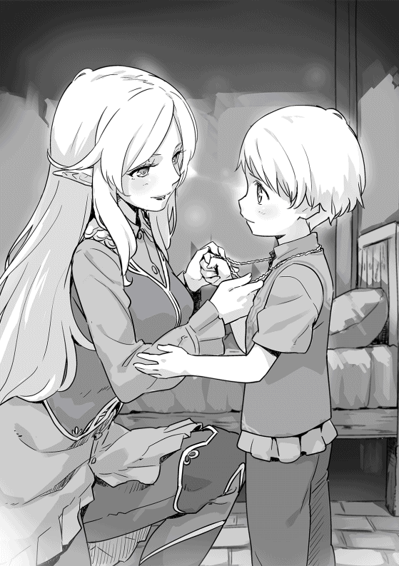
俺がリディとそんな話をしていた頃、兄ロッドはかなり悩んでいたようだ。
誕生日の翌日、俺は父に呼ばれ、執務室に向かった。そこには深刻な顔をした兄と、苦虫を噛 み潰したような顔の父がいた。
父が話し始めるのかと待っていたが、なかなか口を開かない。焦 れた俺が、「用事は何ですか？」と尋ねると、父がようやく口を開いた。
「ロッドが家督をお前に譲ると言い出したのだ。自分より才能のあるお前の方がロックハート家の当主に相応 しいとな」
俺はその言葉に目を丸くする。俺は素の言葉にならないように気を付けながら、
「でも、兄様は剣術の腕があるし......立派な領主になれると思います」
兄は「そんなことはないよ......」と小さな声で言った後、
「僕より剣術のレベルが上がるのが早いし、魔法も......それにおじい様やニコラスと普通にしゃべっているんだ。絶対に僕より......」
最後の方は悔しさが込み上げてきたのか、目に涙を浮かべている。
確かに優秀な弟がいて、自分はその弟に何一つ勝てない。そして、その歳の離れた弟に負けないように努力しても徐々に追いつかれていくとなれば、自信もなくなるだろう。特に多感な年頃だ。思い詰めて家を継がないと言い出してもおかしくはない。
（そこまで思い詰めているとは思わなかったな。普通ならいじめたり、無視したりするのに、兄様はそれらしい素振りすら見せなかった。素直ないい少年だと思っていたんだが......このくらいの歳になると結構考えるようになるんだな）
俺は父に〝どうするつもりですか〟と目で聞くが、父も困ったような顔をするだけで、何も答えない。
一番良いのは俺の正体を打ち明けることだが、九歳の子供に理解できるのか不安はある。
その辺りを考えて、父も困っているのだろう。重苦しい空気が流れる中、父がゆっくりとした口調で兄に語りかける。
「ロッド、ザックに家督を譲るというが、お前は何をどうするつもりなのだ？」
兄は答えを考えてあったのか、すぐに答えが返ってきた。
「おじい様のように、軍に入りたいと思っています」
「軍？ ああ、北部総督軍のことだな......お前は一兵士として生きていくつもりなのか？」
父の問いに兄は「はい」と大きく頷く。
「十二歳になれば、騎士団に見習いで入れると聞きました」
父は小さく首を横に振り、「そこまで考えていたのか......」と呟いた後、兄の眼をしっかりと見つめる。
「お前が考えなしに言い出したのではないということは分かった。お前もロックハート家の長男だ。今から大事なことを話す。本当はお前が成人した時に話すつもりでいた。だが、そこまでの覚悟があるなら、今ここで話しておこう」
父は俺の秘密を兄に打ち明けることを決めたようだ。
兄が居住まいを正して頷くと、父が話を始める。
「ザックのことだ......お前もうすうす気づいているだろうが、ザックは普通の子供ではない......神に遣わされた子なのだ」
兄はその言葉に大きく目を見開き、俺を見つめた。
「ザックの魂は別の世界から送られてきたのだ。それも父上と同じ歳の大人の魂が。父上やニコラスと普通に話せていたのはそのためだ。だが、こいつにはしなければならないことがある」
兄は父に視線を戻し、「しなければならないこと？」と口に出していた。
「そうだ。神に命じられた仕事があるのだ。だから、剣の才能も魔法の才能もあるのだ。普通の人間である私やお前とは違う。父上や私はザックの仕事を助けるつもりでいる。父上が剣を教えていることもその一つなのだ」
兄の視線は父と俺の間を何度も往復した後、「僕はどうしたら......」と言って戸惑っている。
（九歳の子供にそんな難しい話をしても困るだけだよな。理解できないだろうし、ちょうど英雄に憧れる年頃だ。どうして自分じゃないんだとぐれるかもしれないな）
俺のそんな考えとは別に父は兄を真っ直ぐに見つめ、「お前は兄として、どうすべきだと思う？」と問い掛けていた。兄は「分かりません」と首を振るが、その顔には戸惑いと困惑が浮かんでいる。
「では、よく考えてみるのだ。ロックハート家の長男として、ザックの兄として何ができるのかを」
兄は父の部屋を後にした。
残された俺は、「良かったのですか？ 兄上にはまだ早いと思うのですが？」と父に尋ねる。
「そうかもしれん。だが、幼くともロックハート家の嫡男だ。この程度のことは受け止めてくれると信じている」
父も言葉ほど自信を持っていないようで、苦しそうな表情が垣間見えた。
俺も父の部屋を辞去し、今のことを考えていた。
兄がどのような決断をするかは別として、俺の存在が僅か九歳の子供の心に負担を掛けさせた。俺がもっと考えていれば、今回のようなことが起こらなかったかもしれない。
俺は自分のことだけを考え過ぎていたのかもしれない。
転生の事実を知り、焦っていたことは否定しないが、自分の生き方を決める時にもっと周りのことを考えるべきだった。
今もそうだ。兄だけではない。メルもシャロンもダンも俺の影響を受けている。今のところ悪い影響とはいえない。むしろいい方向に影響を受けていると思う。だが、それがこの世界の子供として当たり前のことなのか、本当にいいことなのかと問われると自信はない。
だからと言って、他に方法があったのか。周りを気にして自分の力を弱めても良かったのか。その問いに対する答えを俺は持っていない。少なくとも自分が考える最も良い方法を選んでいたとは答えられる。今更だが、俺はどうしたら良いのだろうかと悩む。
俺が悩んでいると、巡回授業に出かける準備を終えたリディが声を掛けてきた。
「どうしたの？ 何か悩んでいるみたいだけど？」
どう答えようか悩んだが、父の部屋でのこと、今考えていたことをリディに話していく。
彼女はうーんと言った後、
「ロッドは自分で考えられる歳になったのよ。どういう選択をするのか分からないけど、それがロッドの選んだ道なら、私は応援するわ」
リディの言葉に驚く。確かに兄が自分で選んだ道なら尊重すべきだろう。だが、兄はまだ九歳の子供だ。彼の判断力はあてにはならない。それでは間違った道に向かうのではないか。
「兄様はまだ九歳の子供だぞ。間違ったら正してやるのが大人だろう」
リディは少し首を傾げ、
「そうかしら？ 間違ってもいいんじゃない？ 戻るところさえ残してあげれば。だって、誰だって間違うことがあるんだから。それに大人の考えがいつも正しいなんて分からないんじゃない？」
その言葉に殴られたような衝撃を受けた。
確かに大人の意見がすべて正しいとは思わない。今、間違っていると思えても本当は正しいのかもしれない。
いつの間にか、俺は元の世界にいた頃と同じ考え方に陥っていた。
安全に......確実に......失敗を恐れて......そして、身動きが取れなくなる。
俺が自分の考えに沈み込んでいると、彼女が話を続けていた。
「......あなたのことだけど、〝あなた〟という存在がいる限り、ううん、誰でもだけど、誰かが存在している限り、周りに影響を与えるものよ。私もあなたに影響を受けているし、あなたも私の影響を受けている。それを考え出したら、生きていけなくなるわ......昔の私はあなたと同じことを考えていたわ。でも、今は違う。あなたと一緒に暮らし始めて、人と付き合うことの楽しさを知ったから......」
「どうやら考えすぎていたようだ。昔の悪い癖が出たのかもしれないな......ありがとう、リディ」
「いいのよ、そんなこと気にしなくて」
笑顔でそう言いながら、巡回授業に向かった。
俺は彼女の言葉に救われた。そして、兄がどのような選択をしても、それを受け止めようと心に誓った。
翌日、再び父に呼び出される。どうやら、兄が結論を出したようだ。
既に兄も父の部屋に来ており、昨日とは打って変わって晴れやかな顔をしていた。
「父上。僕は十二歳になったら、騎士団に入ろうと思います」
俺と父はやはり兄は継ぐのをやめたのだと考え、表情を暗くする。兄はそんなことには気づかず、話を続けていく。
「でも、それはザックを、弟を守るための力を付けるためです。ロックハート家を継いで、ザックの手伝いをします！」
兄は一日考えて、俺を守ることを選んだ。更に自分の力不足を補うため、外に出て修行をすると宣言したのだ。俺は驚き、父を見た。父も俺と同じように驚いていたが、すぐに笑顔になり、
「そうか......分かった。それではそのことは父上に話しておく」
兄も嬉しそうに頷き、「それでは訓練に行ってきます！」と元気に部屋を出て行った。
「お前のおかげかもしれんな。ロッドがあのように前向きなのは」
俺は父の言葉に首を横に振る。
「いいえ、それは違います。兄上は元々弟想いの立派な少年でした。普通なら俺のような弟がいれば嫉妬するでしょうし、いじめもするでしょう。ですが、最初から一切そんなことはなかったのです」
父も、「そうだな」と頷く。
俺は父の部屋を後にし、リディに会いに行く。そして、兄の結論を話した。彼女は何も言わず、俺の話を聞いてくれる。すべて話し終わっても、彼女は何も言わず微笑んでいた。
俺も彼女の意見は求めなかった。
そう、俺には聞く必要がないから。
母ターニャの出産の時が近づいてきた。メイド長のモリーがバタバタと出産準備を始めたが、特にすることは変わらないはずの俺たちロックハート家の男たちもなぜか忙しい気になっている。
そんなある日、キルナレックから来る行商人から、ラクス王国の軍隊がカウム王国に向かったという話を聞いた。ラクス王国が侵略するのではなく、魔族がカウム王国の砦を突破したため、援軍として向かっているということだった。
魔族の話は風の噂で聞いていたが、実際に増援の軍隊が送られると聞くと、この辺りが大丈夫なのかと心配になる。祖父にその話をすると、
「トーア砦からここまで三百ｋｍ 以上ある。それだけではない。カウム王国軍は昔から防衛戦がうまい。ここまで侵略されることは考えんでも良かろう。仮に近くを通ったとしても街道を通る。ここに影響が出ることはあるまい」
祖父はそう言って笑うが、出産が近い母や俺たち子供を気遣って、無理に笑っているように思えた。
六月八日。昨夜遅くからラスモア村の空は大荒れで、強い風と大雨が屋敷の屋根を叩いている。
早朝から父と祖父は嵐の対応に追われ、従士たちも村の中を駆け回っている。家の中では嵐の音にも負けず、モリーとトリシアが奏でる調理の音が響いていた。
臨月を迎えた母は、少し動くのも辛そうな感じだが、今は食堂に置いたゆったりとした椅子に座って編み物をしていた。
俺と兄、リディの三人はすることもなく、母の横で本を読んでいた。
午後になったが、嵐が収まる気配はなく、父たちもひっきりなしに来る被害の報告に頭を悩ませながら対応していた。
そんな時、母が産気づいたのか、苦しそうな声でモリーを呼ぶように言ってきた。
「モリーを呼んで頂戴。生まれそうな気がするの」
俺は頷く時間を惜しんで厨房に走っていく。
「モリー！ 母上がもうすぐ生まれそうだって言っている！」
モリーは俺の言葉を聞くと、ゆっくりとエプロンで手を拭き、「大丈夫ですよ。そんなに急には生まれませんから」と俺に微笑み掛けてから、母のもとに向かう。
モリーは母の様子を見てから、娘のトリシアにゆっくりとした口調で、「外にウォルトがいるからドロシーさんを迎えに行くように言って頂戴」と産婆でもある治癒師のドロシー婆さんを呼びに行くように指示を出す。
普段はおしゃべりで陽気なモリーだが、今日はとても冷静で頼もしく見える。
モリーは母をゆっくりと立ち上がらせると、腕を回すようにして付き添い、寝室に向かった。
兄のロッドが伝えたのか、父が慌てて食堂に入ってきた。モリーは父に軽く会釈をしてから、「今夜くらいだと思いますわ。今、ドロシーさんを呼びに行かせましたから」と心配する必要がないと伝える。父もその言葉に安堵の表情を浮かべ、モリーと一緒に母を支える。三人がいなくなると、食堂には俺と兄、リディの三人が残されるが、何もすることがなく、微妙な空気が漂っていた。
俺は何かしゃべろうと、「兄様は僕が生まれた時のことを覚えていますか？」と兄に話を振った。
「あんまり覚えていないけど......何かみんなが忙しそうにしていたかな？ うーん、やっぱり覚えていないや」
話題も途切れ、再び微妙な空気が食堂を覆う。することもないので再び本を読み始めるが、全く集中できない。
（子供が生まれるところにいるのは初めてだな......本当に子供に縁がなかったからな......）
トリシアが戻り、その直後にニコラスの妻ケイトと娘ジーンが屋敷にやってきた。
普段ならポリーやクレアも手伝いに来てくれるのだろうが、二人とも出産が近いため家で待機している。
ジーンも妊娠七ヶ月と腹がかなり大きくなっているが、いい経験になるということでケイトに連れてこられたのだろう。
ケイトたちも準備を始め、再び俺たち三人が〝蚊帳 の外〟という状態になる。
俺が「リディには声が掛からないね」とちょっと意地悪く言うと、「私はお客様扱いだから。それに生まれる時までは役に立たないし......でも、生まれる時には役に立つから......」と答えるが、実際リディはかなり期待されていた。産婆のドロシー婆さんは治癒師なのだが、引退直前の老婆ということもあり、治癒魔法はあまり使えなくなっている。この村にいる他の治癒師は、彼女の娘のカミラとその夫のエルマーなのだが、今回は嵐の最中 であり、突発的なケガ人に対応するため、うちには来られない。
出産の経験はないが、治癒師としては一流であるリディの腕に期待しているのだ。
「とは言っても、ドロシーさんの言う通りにするだけなんだけどね」
彼女はぺロッと舌を出して笑った。
夕食の時間が過ぎても生まれる気配はない。外の嵐は相変わらずで北のアーン川と西のフィン川の水量が増え、更に東のため池の水位も上がっており、村の男たちが総出で対応している。
今のところ大きな被害は出ていないが、それでも家畜を避難させたり、家の補強をしたりと、てんてこ舞いになっているらしい。
（生まれてくる日に嵐か......嫌な予感しかしないな。神の敵の仕業かもしれないと、つい考えてしまうな......）
夕食から三時間ほど経った。俺の寝る時間はとうに過ぎているが、この状況では寝るに寝れない。父は嵐への対応を祖父に任せたのか、母のいる寝室に入ったまま出てこない。
更に二時間ほど経った頃、俄かに寝室が慌しくなる。
「トリシアはお湯の用意を。ケイトは手を洗う桶と石鹸を持ってきて頂戴。ジーンはそこからきれいなシーツを出して」
モリーのテキパキとした指示が飛んでいく。
出産の時にはいつも以上に清潔にするようにと口を酸っぱくして言っていたのを覚えていたようだ。
（生まれてくる子供もそうだが、母上の産後の肥立ちにも関わってくる。うまく伝わっていればいいが......）
実は今回の出産のために、四回蒸留の消毒用アルコールが用意してある。
少なくとも五十パーセント以上にはなっていると思うのだが、計るすべがないので正確な度数は分からない。気休めかもしれないが、使い方はモリーたちに教えてある。
その日の深夜、日付が変わる頃、リディがモリーに呼ばれ、母のいる寝室に入っていった。俺はその頃、半分寝ているような状態で自分の部屋のベッドに横になっていた。
体は睡眠を求めるのだが、頭がそれを拒否しているような状況でかなり辛い。
父も寝室から追い出されて行き場を失い、俺の部屋にいる。落ち着かないのか部屋の中でうろうろしているから、それもすっきり寝られない原因の一つだった。
（こういう時、男にすることがないというのは、どの世界でも同じなんだな......）
それから何時間経ったのかは分からないが、急に廊下の方が慌しくなり、その音で目を覚ました。
その直後、赤ん坊の元気に泣く声が屋敷の中にこだまする。
父はその声を聞き、慌てて俺の部屋を出て行った。俺も寝ぼけ眼でそれに続く。同じように廊下に出てきた兄と、執務室から飛び出してきた祖父がいた。
ロックハート家の男子が全員廊下で立っているという光景だが、誰も笑う気にはなれない。赤ん坊の泣き声が聞こえてくるのだが、一向に中に入ってもいいという許しが出ない。俺たちの間に不安が広がり始めた時、再び赤ん坊の泣き声が聞こえてきた。
（空耳じゃなければ、二人分の泣き声だよな......双子なのか？）
父が何か言いかけた時、寝室の扉が開かれた。
満面の笑みを浮かべたモリーが、「元気な双子です！ 男の子と女の子。奥方様も問題ありません！」と叫び、父はすぐに寝室に飛び込んでいった。祖父も父の後に続くが、俺と兄は入っていいものかと悩みながら、モリーの顔を見た。俺たちの考えが伝わったのか、彼女は大きく頷き、「可愛い弟君 、妹君 を見てあげてください」と笑顔で招き入れてくれた。
母と弟たちが無事と聞き安堵の息を吐き出す。だが、その直後、〝神に遣わされた者〟という単語が頭の中に浮かび、再び不安になっていく。
（もし、どちらかが〝運命の子〟なら......俺は何を感じるのだろう......）
不安を抑えつつ兄の後について、部屋に入っていく。
父が母に労いの言葉を掛け、更にドロシー婆さん、リディたちにも感謝を伝えていた。
（父上は母上を本当に愛しているんだな。ほとんど泣きそうな顔になっている。さて、運命の瞬間だが......）
母の横にくしゃくしゃの顔をした小さな赤ん坊が布に包まれていた。正直、どっちが弟でどっちが妹かも分からないくらいだが、生まれたばかりの赤ん坊ならこんなものなのだろう。
運命の対面と緊張気味に覗き込んだのだが、拍子抜けするほど何も感じなかった。
もちろん、母や弟たちが無事で嬉しいとか、双子だから大変だとかということは思ったのだが、神の啓示という感じは全くなかった。
（神の話じゃ出会えば分かると言っていたが、運命の出会いという感じは全くないな......この二人は違うということか？......）
そして、俺を見つめる父と祖父の視線に気づく。俺は首を横に振って違うと伝えると、二人は息を吐くような感じで安堵の表情を浮かべていた。
（やっぱり二人とも心配していたんだな。自分の子供や孫には平凡でもいいから幸せな人生を送って欲しいと思うのも当然だ。平凡じゃないのは俺だけで充分だし......）
その後、母におめでとうと伝え、弟たちをじっくりと見た。
まだ目も開いておらず、誰に似ているとかは正直分からないが、俺は自分の家族が増えたという幸福感に包まれていた。
父が二人を抱きあげると二人は一斉に泣き出し、屋敷は幸せな騒々しさに包まれていく。気づけば、知らない間に外の嵐も収まっていた。
双子にはそれぞれ、セオフィラスとセラフィーヌという名が付けられた。二人は〝セオ〟と〝セラ〟と呼ばれることになる。
双子の誕生でロックハート家は一気に賑やかになった。モリーとトリシアは母と双子の世話に追われて大変そうだが、二人とも楽しそうだ。
七月に入ると、ポリーとクレアが相次いで出産した。ポリーには男の子が、クレアには女の子が無事に産まれ、母を含めた三人は一緒にいることが多くなる。
さすがに双子に乳をやるのが大変なのか、それとも別の考えがあるのかは分からないが、三人で四人の赤ん坊を育てているような感じだ。
ちなみにポリーの子がライル、クレアの子がユニスと名付けられた。
そして、俺にとって最も気になる〝神に遣わされた者〟かどうかだが、どちらも特に何の啓示もなかった。
後は九月に生まれるジーンの子だけだが、関係が深い三人から生まれなかったことから、この村で生まれないのではないかと楽観視している。
初めてできた弟と妹だが、父と母の血を引いているため、どちらも美形になりそうな可愛い赤ん坊だ。身贔屓 と言われても否定はできないが、客観的に見てもそうだと思っている。
母、ポリー、クレアの出産も無事に終え、館ヶ丘は赤ん坊の泣き声で賑やかになっている。メルやシャロンはしきりに赤ん坊の世話をしたがり、二人とも女の子なのだなと微笑ましく見ていた。
一方、リディは赤ん坊が苦手なのか、母たちが抱かせようとしても抱こうとしない。不思議に思い聞いてみると、「あんなに小さいんだもの、落としたり、力を入れ過ぎたりしたらって思うと怖くて......」とのことだった。
出産率の低いエルフの里では滅多に子供は生まれない。小さな集落だと十数年に一度というところもあるくらいだ。特にリディの場合、若いうちに里を出ているし、学院で人間不信になっているから、ほとんど人付き合いをしていない。
巡回授業で小さな子供には慣れてきたが、さすがに乳飲み子までは相手にしていない。このため、五十年生きてきたのに赤ん坊を触ったことがない。それでも、母たちがしきりに勧めてくるので何度か抱いている。最近はかなり慣れたのか、それほどおっかなびっくりという感じではなくなっているし、かわいいと思うようにもなっているらしい。今日も夏の暑い時期ということで、送風の魔法を使って赤ん坊たちにそよ風を送るなど、繊細 な気遣いも見せている。
兄のロッドは俺の誕生日以降、訓練に力が入っていたが、弟と妹ができたことから更に力が入っているように見える。
父が祖父に話をしたようであと三年したらカエルム帝国北部のラズウェル辺境伯の騎士団に入団することが決まっている。
話は変わるが、ポリーとクレアの出産直前の七月中旬頃に、ある二つの情報がラスモア村に届いていた。
キルナレックから来る行商人が伝えてくれた情報なのだが、一つ目は村の南にあるカウム王国東部で起こった大規模な魔族の侵攻の続報、二つ目は冒険者の国ペリクリトルで大規模な魔物の討伐が行われたという情報だった。
魔族の侵攻の概要は次の通りだ。
五月十二日、カウム王国の要衝トーア砦に数千にも及ぶ魔族軍が押し寄せてきた。
トーア砦には千名近い兵士が常駐していたが、飛行型の魔物などの攻撃もあり苦しい戦いとなった。カウム王国は各国に支援を要請し、自らも二千名の兵士をトーアに急行させた。
五月二十五日、魔族軍七千は損害をものともしない攻勢を掛け続け、ついにトーア砦を陥落させた。
カウム王国の援軍二千は砦から撤退してきた兵士からの情報で、自分たちが間に合わなかったことを知る。そして、数で劣る自軍が各個撃破される危険を考え、一旦退いて各国からの援軍を待つことにした。
カウム王国軍は巧みな撤退戦を展開し、大きな損害を出すことなく魔族軍を翻弄 していった。一ヶ月に及ぶ撤退戦で、カウム王国軍は主要街道であるアルス街道近くまで押し込まれており、街道の宿場町バルベジーの東、約二十キロメートルにあるアクリーチェインと呼ばれる山の麓に陣を張っていた。
六月二十三日、傭兵の国フォルティスとラクス王国からの援軍を得たカウム王国軍は、それまでの消極的な作戦から一転し、大攻勢を掛けた。
カウム王国軍の司令官は援軍と共同で大規模な挟撃戦で敵を殲滅 することを企図した。フォルティスからの援軍千五百とラクス王国からの援軍千に対し、アクリーチェイン山の背後に隠れ、追撃してくる魔族軍の背後を突くよう依頼した。そして、自らは撤退に見せ掛けた欺瞞 行動を行うことで囮となり、魔族軍を伏兵の前に引き摺 り出すという作戦だった。
魔族軍六千は撤退するカウム王国軍の追撃を開始するが、防御戦闘の巧みなカウム王国軍は遅滞行動を取りつつ、アクリーチェイン山の麓をゆっくりと西に撤退していった。
その日も防御に徹するかと魔族軍が思い始めた日没前、カウム王国軍が突如反転攻勢を掛けた。それを合図に魔族軍の背後にフォルティスとラクスの援軍が現れ、魔族軍に動揺が走った。
勢いに乗ったフォルティスの傭兵たちが魔族軍に突入していくが、数に勝り更にオーガなど強力な戦力を前面に押し出すことで魔族側は何とか踏み止まる。そして逆に各個撃破を狙った。魔族軍は援軍二千五百を先に倒すことに決め、更に最も数の少ないラクス軍を標的に選んだ。一気に勝敗を決するため、五千の兵力をラクス軍に叩きつけた。当初ラクス軍はその勢いに負け、敗走寸前にまで追い込まれたが、ラクス軍の傭兵隊の粘り強い戦いで魔族軍の前進が止まった。
その機を逃さなかったカウム王国軍とフォルティス軍が後方と側面から攻勢を掛け、魔族軍は三方向からの攻撃により潰走した。その後はカウム王国軍とフォルティス軍が執拗に追撃を続け、六月三十日、遂にトーア砦を奪還したという話だった。
もう一つの話、冒険者の国ペリクリトルでの出来事については、ここラスモア村も絡んでいた。
二月の末にキルナレックからもたらされたオークとオーガの群れの情報が事の始まりだった。すなわち、ロックハート家が伝えた情報が発端だったのだ。
キルナレックの冒険者ギルド支部からペリクリトルの総本部にその情報は届けられた。総本部でもキルナレック支部同様、情報の信憑性が疑われたが、念のため、近隣の支部に警戒情報として伝えられた。
例年、雪解けの三月中旬頃から冒険者たちの行動が活発になる。そして、ペリクリトルの南部の町でも冒険者たちが春に動き出す魔物を狩るため森に入っていった。
四月中旬頃、キルナレックの冒険者ギルド支部は念のためオークたちの行方を追う調査依頼を出した。それを受けた冒険者パーティがキルナレックから北に向かい、カルシュ峠付近にまで足を伸ばした。そして、峠の先にある森で大規模な魔物の群れを発見した。
彼らが発見した群れは二百匹近いオークの群れだった。場所はキルナレックから北に約三十キロメートルのカルシュ峠の東側、ペリクリトルから見ると南東に約百五十キロメートルの場所に集落を築いていたというのだ。
更に続報が入った。
四月の下旬、別のパーティが巨大蜘蛛 の討伐依頼を受け、ペリクリトルの南東約百キロメートルの場所にあるティセク村から森に入った。中々ジャイアントスパイダーが見つからず、普段なら入り込まない森の奥にまで入っていった。そして、村の東約二十キロメートルの場所で巨大な足跡を発見した。それは身長三メートルを超える巨人、オーガの足跡だった。
直ちにその情報はペリクリトルのギルド総本部に伝えられた。そして、二ヶ月前に届けられたキルナレックからの情報と照らし合わされ、大規模な魔物の移動があったと結論付けた。冒険者ギルド総本部はペリクリトルにいる冒険者に大規模な調査を命じた。召集された冒険者たちはオークとオーガの痕跡を追って、アクィラ山脈の麓の森を調査していった。
五月十五日、オークの群れは発見された集落から北に移動したようで、ティセク村の南東約二十五キロメートルのところで再び発見された。オーガも同様に北西に移動しており、ティセク村の北約十五キロメートルの位置で発見された。
総本部は二つの魔物の群れの討伐のため、緊急召集を掛けた。
五月二十日、冒険者千名が召集され、ティセク村に移動した。
五月二十五日、北のオーガと南東のオークを殲滅すべく、五百名ずつに分かれて進撃を開始。圧倒的な物量でその日のうちに二百匹のオークと十四体のオーガを殲滅。更に周囲を一ヶ月以上に渡り捜索した。しかし、他の大規模な群れは発見されなかった。冒険者ギルドの迅速な行動により、被害を発生させることなく解決した。
この話には続きがあった。
この二つの話は繋がっているのではないかというのだ。魔族の侵攻に合わせ、鬼人族がオークとオーガを後方に放ったのではないかというものだ。
偶然キルナレック支部がオークの情報を得たこと、更に総本部がそれに迅速に対処したことから、時期がずれてしまい侵攻作戦に連動できなかったのではないか。もし、五月に入ってもペリクリトル周辺のオークとオーガが発見できなければ、どこかの開拓村が襲われたか、あるいはアルス街道に現れた可能性がある。そうなれば、魔族の別働隊と考え、ラクス王国軍は自国により近い、ペリクリトル周辺の討伐に戦力を投入した可能性が高いというのだ。
指導者たちは今回のオークとオーガの動きには、不自然なところが多いと考えていた。
本能のままに動くはずのオークやオーガが、なぜ進路上の村や町を襲わずペリクリトル周辺まで移動したのか。なぜティセク村という小さな村を囲むように移動したのか。そして、ここ数年動きを見せなかった魔族が突然侵攻してきたのはなぜなのか。
各国やギルドでも議論されているようだが、結論は出ていないと行商人は言っていた。
俺はその話を聞いて、神の言っていたことを思い出していた。
（この侵攻が神の敵が仕掛けてきたものだとしたら......侵攻自体が目的じゃなく、神に遣わされた者、〝運命の子〟を始末しに来た者だとしたら......辻褄が合わないでもない。だが、魔族といえども闇の神 を信奉する者たちだ。十二柱の神の一柱、闇の神 が命じるとは思えない。だとしたら誰が......）
俺は更に考え込むが、情報の少なさにそれ以上考えることをやめた。
（情報がなさ過ぎて推論に推論を重ねるしかない。無責任なようだが、少なくともこの村が標的じゃなかった。なら、俺がどうこう考えても仕方がない。少なくとも今は......）
五月にカウム王国を襲った魔族たちも鳴りを潜め、ラスモア村に平穏な日々が戻っていた。
夏が過ぎ、九月も半ばを過ぎた頃、ここ館ヶ丘に訪問者がやってきた。
俺たちが屋敷近くの広場で遊んでいると、十人程度の護衛を伴った二頭立ての馬車が丘を登ってきた。昼食前の午前十一時頃で、俺たちが最初にその姿を見つけた。
俺は祖父と父に訪問者がやってきたことを伝えに屋敷の中に走っていった。
「おじい様、馬車が一両上がってきます。護衛もいますから、身分のある方か裕福な商人ではないでしょうか？」
祖父は俺の言葉に訓練の手を止め、屋敷の南側に向かった。
「家紋がない。護衛も傭兵のようじゃな。恐らく商人じゃ。ようやく来たか......」
数ヶ月前、行商人の一人が石鹸を使っている村人を見つけ、ロックハート家 から石鹸を買い始めていた。その情報が商人に伝わり、行動を起こしたようだ。
（うちには騎士や貴族は来ないし、普段は商人が来ることもない。じい様の考えも同じだろう。石鹸を買いに来た商人だろうと......）
父にもその話を伝え、すぐにニコラスを呼びに行かせる。
馬車は丘の狭い道を十分ほど掛けて登り、屋敷の前に到着した。中から上等な服を着た初老の男が降りてきた。
そして、やや低いよく通るバリトンの声で、「マスグレイブ商会の者でございます。ご開門頂けないでしょうか」と開門を願い出てきた。
俺はご開門っていう門でもないだろうと思い、噴き出しそうになった。
（さて、いきなり商談に入るのかな？ いくら貧乏騎士とはいえ、領主の館に先触れもなく来るのは無礼だろう......ここは父上とニコラスにうまくやってもらうか......）
従士頭のウォルトが門のところに行き、用件を確認している。その間に父とニコラスのところに行き、商人への対応方法を説明していった。
最初に「マスグレイブ商会という商会をご存知ですか？」と確認するが、父もニコラスも聞いたことがないと答える。
「もし、商談に来たのなら高圧的に出ましょう。領主の館に先触れもないのは無礼であろうと」
そういうことに無頓着な父は、「我がロックハート家はそれ程の家格ではないぞ。父上の代で騎士に叙されたのだからな」と言うが、俺はこれを交渉に使うつもりでいる。
「構いません。実際無礼なのですから。それにこれは向こうの出方を見るための作戦です。本来であれば、身分が下の者が訪問するのですから、先触れを出すのは当然です。相手は我が家を侮っているのでしょう。田舎の貧乏領主だと」
その言葉にニコラスの表情が厳しくなるが、俺は構わず話を続ける。
「その方が与 しやすいから好都合です。それにこちらが強気に出れば更に向こうは我々を侮るでしょう。自分たちのような大店 の商人を敵に回すような愚か者だと」
父は俺の考えが読めず、難しい顔をしている。
「侮らせるのはよい。だが、それでは向こうの思う壺ではないのか？」
俺は「はい」と頷くが、すぐに「今はそう思わせるだけです。それにもう一度出直してこいと言うつもりですから」と付け加えた。
俺の言葉を意外に思ったのか、「いいのか？ 折角来た商談だぞ」と、父は首を傾げる。
「構いません。放っておけばもっと来ますし。今日は用件だけ聞いて帰らせるのです。そうなれば......」
二人が俺の話に引き込まれ始めているが、執務室の扉をノックする音で話を中断する。
ウォルトが「マスグレイブ商会のエドモンドという者が参りました。どのように致しましょうか？」と尋ねてきた。
父が何か言う前に「応接室に通しておいて、それから少し待つことになると伝えておいて」と先に指示を出す。
ウォルトはそうしていいものか悩むように父を見るが、父が頷いているのを見て部屋を出て行った。
俺は笑いながら、「三十分ほど待たせましょう。忙しいご領主様の都合を考えないのですから当然です」と言うと、二人は俺が何をしたいのか理解できないため俺の軽口に反応してこない。
「先ほどの続きですが、今日は用件だけ聞いて出直させます。そうなれば相手はどう思うでしょうか？」
ニコラスが「こちらが石鹸の製法を売る気がないと思うのでは？」と答える。
「惜しいね。相手になったつもりで考えてみないと」と彼に笑いかける。
「向こうは我々が商売の常識を知らない騎士だと思っているんだ。売る気がないなら出直して来いとは言わないと考えるはずだよ。そして、それじゃ何でこんなに強気に出るのかと考えるはずだ......」
俺は二人が話に付いてきているのを確認しながら話を続けていく。
「......自分より先に石鹸のことに気づいた商人がいるのではないか。もしかしたら、自分たちの他にもすでに引き合いが来ているのではないかと考えるのでは？」
父とニコラスは俺の言葉に頷く。
「時間があるので出直してきてからの話もしておきましょう。最初の予定通り最低一万Ｃ で売ることにします。ですが、これは相手の反応を見てみないと何とも言えません......」
俺は少なくとも一万Ｃ、日本円で言えば一千万円で売れると確信している。そうは言っても実際の価値については分かっていない。俺が思っている以上に価値がある可能性は十分にある。マスグレイブ商会の反応を見ながら、適正な価格がどの程度なのか探りを入れたいと思っている。
「......それから他の業者にも売ること、この村では自分たちの消費する分は作り続けることも合わせて話します。ですが、最初は向こうの話を聞くだけにしてください」
そこで言葉を切り、二人の理解状況を確認する。
（二人ともここまでは理解できているな。さて、この先の話まで理解してくれればいいのだが......）
「そして、向こうの条件があまりにも酷い場合、例えば千Ｃとかであれば、一個当たり二Ｃで売れば僅か六百個で儲けが出る。そんな馬鹿な条件では話にならないと伝えてください」
やはり二人には俺の目的が分からなかったようだ。ニコラスが疑問を口にした。
「相手は石鹸の原価を知りません。ですから、儲けが出るかは分からないのではないでしょうか？」
その疑問に俺はニヤリと笑い、「その通り」と頷く。
「今の会話で一個二Ｃでも六百個売れば利益が出ると相手に分からせる。その上でどの程度の数字を言ってくるかを待つんだ」
ニコラスは理解できたのか笑顔で頷いている。
俺は商人にあえて原価を教えてやるつもりでいる。それは相手が適正な価格を言い易いようにするためだ。原価を知らなければ、それを想定して儲けを弾く必要がある。販路については目星をつけているだろうから、売れる個数は計算できるだろう。あとは一個当たりの利益を弾かせてやれば、俺たちの知りたい製造法の価値を向こうが教えてくれるはずだ。
ニコラスも俺の意図が分かったようで、大きく頷いていた。
「ようやく分かりました。こちらが馬鹿な振りをして、訳も分からず情報を流しているように見せかけるのですね」
俺は「その通り」とニコラスに笑いかけ、二人に向かって更に方針を説明する。
「ニコラスには商売が分からない役人を、父上には金に執着している頑固な領主を演じてもらいます。強気に出ているのは商売を知らないからで、向こうもまともな交渉ができないとなれば、妥協点を出してくるでしょう」
父は何となく嫌な顔をしているが、「分かった。お前に任せる」と頷く。
「私についてなのですが、五歳児が交渉の場に行くことは不自然です。ですが、好奇心の強い田舎の領主の息子が商人を見たいと言えば、それほど違和感はないと思います」
「交渉の場に入り込んだとしても、発言はできんぞ」
「もちろん、〝直接〟発言する気はありません。ですが、合図を送ることは可能でしょう......」
俺はニコラスに交渉させ、彼に対してサインを送ることを考えていた。
「ニコラスに交渉してもらいましょう。そして、私がニコラスに合図を送るのです。座る位置を商人の正面に父上、横にニコラスとして、私はニコラスの対面側に座ります。そうすれば、商人からは私の動きが見えませんから、ある程度合図を送ってもばれないでしょう。もちろん、見られたとしても誤魔化せるような動きにするつもりですが......」
父もニコラスも俺の考えがうまく理解できていないようだ。俺は分かりやすいように戦いを例に出す。
「ニコラス、戦場で味方に指示を出すことはないのか？ 例えば離れた兵士に太鼓や旗で指示を出すようなことは？」
ニコラスは何のことかと首を傾げ、「ございます。太鼓、銅鑼などの音や旗、狼煙などで......」と言った後、手を打つかのように「分かりました！ これも戦いなのですね。商人との」と顔を明るくする。
「ああ、敵は手練の交渉人だ。それに対して、俺を含め、こちらはすべて素人だ。ならば、全員で当たるしかないだろう」
その言葉に父も納得の表情を見せる。
そして、サインについて説明していく。
「〝了〟と〝否〟が基本だが、これは戦だから、〝攻勢に出ろ〟と〝引け〟も必要だ。〝了〟の場合は足をブラブラさせる。〝否〟の場合は伸びをする......」
俺はこの他にもいくつかの合図を決め、父とニコラスに覚えてもらう。
「......思わぬ質問や状況になることは十分に考えられる。その時はニコラスに臨機応変に対応してもらう」
ニコラスは「私にできるでしょうか？」と不安そうな顔をする。俺が「大丈夫。信頼している」と笑い掛けると、父も頷き同意する。
三十分後、商人が入ってくるが、打ち合わせ通り用件を聞くだけで引き取らせる。
その後、明日の交渉本番に向け、父とニコラスの役割分担や売却価格の交渉方法など、実際の交渉について三人で決めていった。
翌日、マスグレイブ商会との交渉に挑み、当初考えていた三倍の価格で売却することに成功した。更に高価な魔道具である〝時計〟や巡回授業で使える教本なども付けさせており、石鹸製法の売却は俺の想像以上の成果を上げた。
九月三十日、麦の収穫も終わり、明日は収穫祭という日。
前夜祭の音楽が微かに聞こえる午後七時頃、ニコラスの娘ジーンが出産した。初産ということで皆が心配していたが、かわいい女の子を無事に出産し、彼女自身も今のところ問題はない。そして、俺の気になっていた〝神に遣わされた子〟についてだが、やはりジーンの子からも神の啓示は降りてこなかった。
今ではこの村には〝神に遣わされた子〟は生まれてこないと楽観している。なぜなら、俺が五歳というこのタイミングで近くに生まれてきても、俺が主体となって守ることは現実的ではない。ならば、どこか別の場所で生まれ、俺に力がついた段階で出会うと考える方が合理的だ。
ジーンの娘はシェリーと名付けられ、俺の弟セオと妹セラ、メルの弟ライル、シャロンの妹ユニスと一緒に育てられる。
俺とメル、ダン、シャロンのことを祖父たちは〝ザック組 〟と呼んでいるそうだが、彼らも将来〝セオクインテット〟とか〝セラクインテット〟とか呼ばれるのだろうか。
そして、十月一日の収穫祭当日。
収穫祭はこの村一番のイベントだ。とはいっても、流れの吟遊詩人が来るくらいで面白そうな出し物はほとんどない。七月一日の夏至祭と同じで、村人が奏でる楽器の音が祭らしさを醸し出している。
去年の収穫祭は蒸留器の設置や魔法の訓練でバタバタしていたため、あまり楽しめなかったが、今年は母たちの出産も終わり、改革プランもある程度成功したことから、のんびり祭を楽しもうと思っていた。
改革プランについてだが、トイレ改革で始めた堆肥作りがどうやら成功したようだ。
どうやらというのは、堆肥の施肥量が分からず、効果が上がっているのか判断がつかないためだ。ニコラスの畑が試験農場となり、数区画に分けて試しているが、うまくいった施肥量で来年も同じ結果が出るかを試す必要がある。
あとは排泄物にいる寄生虫や病原菌などが堆肥と共に撒き散らされないことを気にすればいい。これについては調べようがないし、堆肥は発酵によりかなり高温になっているから、全滅とは言わないが、ある程度は死滅しているだろう。そもそも、家の周りに排泄物が放置されていた状態──最初は家の周りの草むらに放置され、酷いところでは水場近くにもあった──より改善されているから、安全を考えるなら、絶対に火を入れる食べ物、穀物類の肥料として使えば問題はないはずだ。
俺には知識も道具も不足している。百パーセント安全な方法は所詮素人の俺には無理な話だ。それならば、よりリスクを下げることを考えるべきだろう。
堆肥の効果にしても、寄生虫による被害にしても、結果は数年単位でないと出ない。しかし、工学系の俺には結果がすぐに出ない農業というのは、時間がやたら掛かるものだと思えてしまう。
その農業だが、有輪式重量犂も順調に配備され、現在三台が運用されている。プロトタイプから改良されつつあり、使い勝手も徐々に良くなっているようだ。
教育についてはリディの巡回授業もうまくいき、少しずつだが大人たちも興味を示し始めている。ニコラスの妻のケイトが大人向けの授業を始めたが、農閑期はニーズが多く、忙しそうにしている。
そして、俺の一番の関心事である酒造りだが、蒸留は順調に進んでいる。
樽の数もかなり増え、スコットの醸造所の倉庫が手狭になり始めている。そろそろ貯蔵庫を作る必要があると考えていたら、父から、「石鹸の製造法の売却益で蒸留酒の貯蔵庫を作る。どういったものがいいかはお前しか知らんから、ニコラスと考えてくれ」と言われてしまった。
俺にとっては願ってもない展開だが、村の優先順位としては他にあるはずだと、
「貯蔵庫はもう少し先でもいいです。醸造所が一杯なら屋敷においてもいいわけですから。もっと緊急のことに使った方がいいのではないですか？」
俺がそう言うと、父も「私もそう思ったのだが」と言って小さく頷く。
「ニコラスに聞いたのだが今は緊急でやるものがないというのだ。蒸留酒はこの村の特産品になるのだから、その貯蔵庫は先行投資に値すると言っていたしな。それに......」
父が何か言おうとして言葉を切ったため、「他に理由があるのですか？」と尋ねると、
「ああ、これはニコラスが言ったのだが、蒸留酒作りはお前が一番力を入れている。これをやればお前が喜ぶからと言っていたのだ」
俺はどう言っていいのか分からず、言葉がでない。
「まあ、将来のことを考えて、必要なものがあれば計画書を出してくれ」
今のところ、無理に作るべきものは思いつかない。
もう少し予算があれば、街道の整備とか、東の森の開墾 などに金を掛けるかもしれないが、予算規模が小さいため、やりようがない。
今のところ思いつくのは製粉機の改良くらいだ。
これも村のためというより自分のためで、主食であるパンの品質を上げたいというだけだ。後は新たな栽培作物の導入などがあるが、これも個人的な理由であるため、金を掛けるつもりはない。
いろいろ考えることはあるが、今日は年に一度の収穫祭なので仕事を忘れて楽しむことにした。
リディに祭り会場に行くかと聞くと、「うーん、人が多いところはまだ苦手」という答えが返ってきた。
「二人の彼女が待っているから、いってらっしゃい。その代わり帰ってきたら、私と一緒にいるのよ」
メルたちと出かけることにはお許しが出た。
いつものようにメル、シャロン、ダンの三人と共に行動する。
祭り会場は、唯一の酒場のある村の中心部。
今年の祭りは去年作った〝スコッチ〟も出され、村人たちは興味深げに手を出していく。さすがにストレートはきつすぎるのか、水割りで供されている。
あとで評判を聞いてみたが、ニコラスの最初の反応と同じであまり芳しいものではなかった。販売戦略を考える必要がある。
昨年の十二月末にベルトラムがカウム王国の王都アルスに送った結果は、彼の予想通りドワーフたちには大好評だった。
現状の生産量でもカウム王国に輸出すれば充分採算が取れそうだが、何分、輸送の面での問題が多い。
アルスまではここから約三百キロメートル。荷馬車で半月ほど掛かる計算だ。輸送コストが嵩 むため、販売価格が高額になる。更にカウム王国内は山道が多く、荷馬車の振動が馬鹿にならない。陶器の瓶で輸送するならイタリアのキャンティワイン──昔の物。最近は巻いていない物の方が多い──のように麦藁などで作った緩衝材を巻く必要があるが、それでもかなりの数の破損を覚悟しないといけない。
水のように酒を飲むドワーフ相手なので樽売りをしてもいいのだが、高級路線を取りたい俺としては、樽売りは最後の手段としたい。前から考えている主要な町に販売所を設置し、そこで瓶詰めする方法がいいのではないかと思っている。
祭り会場は食べて飲んで騒ぐという独特の雰囲気に包まれている。
俺たちも会場を練り歩き、普段より豪華な料理を手に入れながら、牧草地になっている東ヶ丘の斜面に向かった。
祭り会場の音楽が聞こえるが、騒がしい感じはなく、のんびりとした時間が流れていく。四人で他愛もないことをしゃべりながらご馳走を食べ、空腹が満たされたところで、館ヶ丘に戻っていく。
その帰り道、ダンの提案で寄り道をすることになった。
北ヶ丘の東を回って北上し、ため池を見に行くことにしたのだ。
元々は館ヶ丘と北ヶ丘の間がアーン川から流れ込む支流によって湿地となっていた。その湿地を農地にするために、川の流れを堰 き止めたため、直径百メートルほどのため池ができている。
このため池なのだが、農業用の貯水池として利用されることはほとんどなく、丘の間を流れる用水路の水源として使われている。用水路は洗濯などを行うために利用されている。
館ヶ丘の南側を流れる用水路の水は水源に近いこともあり、きれいな水で、夏場の水遊びの場にもなっていた。
ため池自体に子供だけで近づくことは禁じられており、俺たちもそこまで行く気はない。ため池の出口から流れる水に草舟を流し、それを追いながら館ヶ丘に帰っていく。
俺はその水を見ながら、屋敷への風呂の設置について考えていた。
屋敷は丘の頂上にあり、生活用水は井戸の水と天水に頼っている。このため、風呂に使うほどの水はなく、屋敷に風呂を作ることを躊躇っていた。俺はこの水を使えないかとずっと考えていたのだが、屋敷までの三十メートルの標高差を汲み上げる方法を思いつかない。
用水に水車を設置し、それを動力源としたポンプでポンプアップするか、風車を使うかなのだが、用水の水量では安定した力は得られず、風力も大掛かりになりすぎる。
（揚程三十メートルか......吐出圧〇・三メガパスカルのポンプっていうのが、ネックなんだよな。水車も風車も基本的には低速の動力源だし......できないことはないが、結構コストが掛かるんだよな......）
そんなことを考えながら、館ヶ丘の入口に到着した。
（屋敷がこの辺りにあればポンプアップの必要はないんだな......そうか！ 別に屋敷に風呂を作らなくても館ヶ丘の麓に風呂を作ればいいんだ。少し遠いが、銭湯だと思えばそれほどおかしな話じゃない......いっそのこと、公衆浴場にしてもいいな。幸い燃料の石炭は豊富にあるし、水も十分にある。ボイラーと浴槽、簡単な建物があれば......）
俺は館ヶ丘の南側に風呂を作ることを決めた。
（ボイラーと建物は仕方がないとして、浴槽は俺の土属性魔法で作ろう。土属性のレベルの上がりが遅いし、スコッチの貯蔵庫用の基礎を掘る練習にもなる......）
土属性魔法には、石の礫を飛ばすなどの攻撃魔法の他に、土壁を作る、穴を掘る、土を石に変えるなどの攻撃以外に使えるものも多い。
実際、大きな街の城壁には魔法で作られたものがあると聞いたことがある。但し、現在では優秀な土属性魔術師の数が少なく、大規模な土木工事に魔法を使うことは稀だそうだ。
俺の土属性レベルなのだが、リディが使えないこともあって上がりが遅い。それに得意な属性を伸ばした方がいいということもあって、あまり積極的に使っていなかったことも原因の一つだ。この先、酒の貯蔵庫を館ヶ丘に作るためには土属性のレベルを上げておいた方がいいと思っている。
俺は屋敷に戻ると、早速風呂の図面を描き始めた。
（大きさは家族で入れるくらいにしたいから、七、八人が入れる大きな浴槽がいいな。いや、いっそのこと、自警団員が訓練の帰りに使えるようにしてもいい......ボイラーも岩で作った大きな水槽に直結するようにして、洗い場と浴槽に送れるようにする......建物も屋根をつけるだけの半露天式にすれば、コストは抑えられるな。目隠しは垣根にすれば......）
簡単な案を作り上げ、翌日、父に説明に行き、風呂の設置の目的や概算コストなどを説明していく。父は風呂というものにそれほど魅力を感じていないようで、コストと手間を考えてあまりいい顔をしない。
「......今ひとつ、風呂の必要性が分からんな。浴槽など王宮か公爵家のような大貴族の屋敷にしかない贅沢 なものだぞ。我が家には分不相応なものだ」
俺は風呂の魅力を知ってもらうため、小さめの露天風呂を作ることを提案する。
「父上に試してもらうため、簡単な風呂を作ろうと思います。館ヶ丘の南側に浴槽を作る許可をお願いします」
「それは構わんが、お前の説明では釜がいるのだろう？ どうするのだ？」
「焼いた石を水に入れて沸かします。多少湯が汚れますが、気分を味わう分には支障ありません」
その日から俺の魔法の訓練は風呂作りを兼ねることになる。
まずは、草が生えている場所を風の刃 で刈っていく。そして、土属性魔法でブロック状にした石を作り、それを積み上げていく。五歳児の力ではあまり大きな石を積み上げられないが、リディが手伝ってくれるため、レンガくらいの大きさの物を作り上げ、それを積んでもらう。
更に繋ぎ目に土を入れ、そこも石化させ石垣状の壁を作り、それを四面に立てていき、底面の土も石に変えて浴槽を完成させる。これで二メートル×一メートル、深さ五十センチの浴槽ができ上がった。
更に用水路の水を引き込むための水路を魔法で掘り、借りてきたベルトラムのポンプを設置する。
ここまで簡単に書いたが、これだけの作業に二十日間も掛かっている。今の魔力保有量 は百三十くらいしかなく、石を作る魔法〝石生成 〟を連続で使えない。一つ当たりのＭＰ消費量はそれほどでもないのだが、それでもブロック状の石を五十個ほど作ると、ＭＰが底をつきそうになるのだ。
水圧に耐えられるよう壁になる部分に厚みを持たせたため、ブロック状の石が七百個ほど必要になり、それを作るだけで十五日も掛かっている。
これだけ時間が掛かった理由だが、今回のような永続的に姿を維持する魔法と風の刃 や火の玉のような現象を発生させる魔法では、魔力の消費の仕方が異なることが原因だ。土を石に変えたり、水を発生させたりする魔法は発動時の消費ＭＰが大きく、一方で火を出したり、風を発生させたりする魔法は発動時にはＭＰは大して消費しないが、現象を継続するためにＭＰを消費し続ける。
今回の石生成魔法はコンクリートをイメージしたため、割と楽に石を作れたようだが、それでもＭＰ消費量が馬鹿にならない。
魔法では時間がかかるのなら、コンクリートを作ればいいということになる。俺自身、そう考えた。この辺りには石灰があり、更に砂も黒池 には大量にある。これらを使ってセメントを作り、そのセメントで風呂を作ろうと考えた。しかし、今回は小型の浴槽であることと、作業人員が確保できなかったことから砂や石灰を運ぶことが難しいと考え、魔法の訓練も兼ねて石を作る方法でチャレンジしたのだ。
浴槽が完成しポンプの設置も終わったところで、ようやく風呂が完成した。
翌日、昼寝の時間を使って、風呂の準備を始める。手押しポンプを使い、浴槽に水を張り、その間に横で火を熾して石を焼いていく。
水を張り終わったところで、ベルトラムに借りた火バサミを使って良く焼けた石を入れていく。ジューという音を立てて、水が湯に変わっていくが、やはり澄んでいた水が白く濁り、ところどころに灰が浮かんでおり、見た目が良くない。
湯が適温になったところで、表面の灰をきれいに掬っていく。水を張り始めてから二時間、ようやく風呂を沸かすことができた。
（水を汲み上げるのも大変だし、このサイズの浴槽でも結構な時間が掛かったな。十人くらいは入れる風呂だとボイラーはかなり大きくしないと......しかし、このサイズでも魔法で作ると二十日間も掛かった。大きな浴槽はセメントを使った方がいいな......）
父を呼びにいき、風呂を見せる。
父は「これに浸かればいいのだな」と言って服を脱ぎ始める。
十月の下旬の澄み渡った青空の下、素っ裸になった父が浴槽に身を沈める。父は「ふぅぅ」と息を吐き出し、目を瞑る。
「父上、どうですか？ 気持ちがいいものでしょう」
俺がそう言うと、「そうだな」とだけ答え、腕を上げて伸びをする。
「確かに気持ちがいいものだが、やはり手間を考えれば、作る必要はないかな」
父はまだ風呂の魅力に目覚めていない。だが、ここまでは想定内だ。既に秘策は用意してある。
十分ほど湯に浸かっていた父が風呂から上がる。
父が体を拭っている時に、「これを飲んでみてください」と、魔法で冷やしたビールの入ったジョッキを差し出した。
父も喉 が渇いていたのか、それを受け取ると一気に煽る。大ジョッキほどのビールを一気に飲み干すと、プハァーという感じで息を吐く。
俺は父の表情が変わっていることに気づいていた。
「どうです、父上。私のいたところでは、〝風呂上りのビール〟と言って、これに勝る飲み方はないと言われていたのです」
父はまだ飲み足りないようだが、満足げな笑みを浮かべていた。
「確かにうまい。それに疲れが取れた気がするな。これが風呂の効果なのか？」
疲れが取れた気がするのは、ビールのおかげだと思うが俺は頷き、
「風呂には血の巡りが良くなるという効果があります。適温の湯にゆっくりと浸かれば、疲労回復や病気の予防などさまざまな効果があるのです」
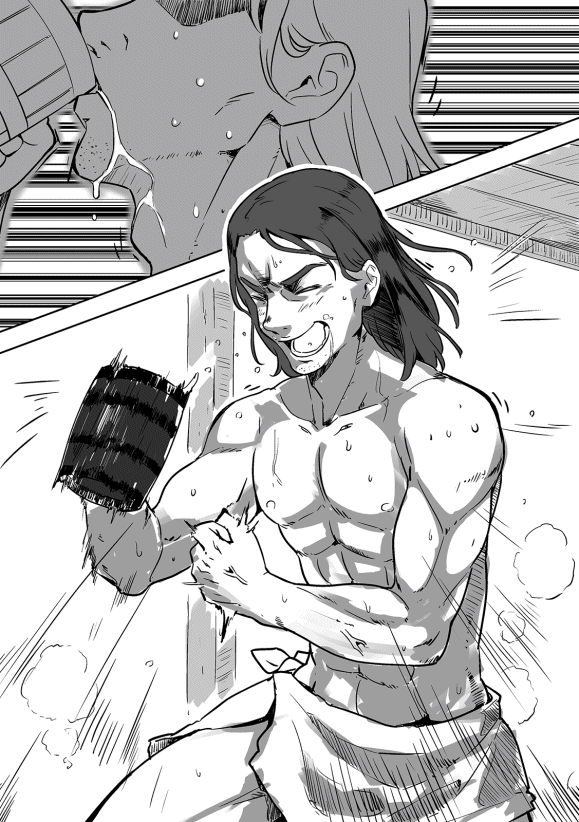
父はしばし考えた後、「風呂の設置を許可する」と宣言した。
「自警団の連中や村人たちも使えるものを考えてくれ。予算は五千Ｃ 。ニコラスとイーノスを使っていい」
石鹸製造法の売却益があるからだろうが、父も俺の〝風呂上りのビール作戦〟で一気に乗り気になったようだ。
我が父ながら単純だと思ってしまうが、俺も初めて風呂上がりのビールを飲んだ時にはやめられないと思ったから、人のことは言えないかもしれない。
実はこの作戦のために、火属性 魔法の冷却 を考え出していたのだ。そう冷却の魔法は〝水属性〟ではなく、〝火属性〟なのだ。
最初は氷の針を作る魔法、〝アイシクル・ニードル〟で氷を作り手っ取り早く冷やそうと思ったのだが、まずはビール自体を直接冷やせないか考えてみた。
手始めに小説などでよく出てくる方法、分子運動を抑える方法を試してみたが、無数にある分子の動きを抑えるイメージができなかった。
次に液体を凍らせる魔法を考えてみたのだが、物理現象としての相転移を考えてしまい、いいイメージができなかった。何とか空気中の水分が凍るイメージ、雪の結晶ができる微速度撮影の映像をイメージして水を凍らせてみたのだが、氷はできるもののビールで試すと部分的に凍る感じであまりうまそうに見えなかった。
最後の手段として氷を作りだし、その氷をたらいに入れてジョッキごと浸すという方法もあったが、断熱性の高い木製のジョッキでも素早く適温に冷やす方法を編み出したかった。
そこで俺の得意分野である電気のことを思い出した。昔学んだ熱電効果であるペルチェ効果──異種金属間に電圧を掛けることにより接合点で吸熱と放熱を発生させる効果──をイメージして液体から熱を奪っていく方法を考えた。火属性は熱に関する属性であるため、熱の移動もできるのではないかと閃いたのだ。
俺の閃きは大正解だった。ビールの中に吸熱源をイメージし、ビールの外に放熱源をイメージする。そこに精霊の力を流すことによって擬似 ペルチェ効果を作り出す。結果は完璧でうまく魔力を調整すれば、五秒ほどで常温だったビールをキリキリに冷やすことができたのだ。
実際にあるペルチェ効果を使った冷蔵庫は効率が悪かったはずだが、この魔力式は効率がいいのか、素早く冷やせるし魔力の使用量もかなり少ない。何より水っぽくならないところがいいため、非常に重宝している魔法だ。この魔法を魔道具にできれば、冷暖房や風呂に応用できるのではないかと思っている。
冷却の魔法が成功した後、〝我ながら酒をうまく飲むための努力は惜しまないな〟と一人苦笑していた。
あまり関係ないのだが、ビールで味をしめた父が酒を飲むたびに冷やしてくれと頼んでくるようになった。
今も〝氷も作れるし、冷却もできるから、街でバーテンダーをやっていけるな〟などと考えながら、リディのワインを冷やしてやっている。
私が家で石鹸を作っていると、イーノスが家にやってきた。
「ニコラスさん、御館様がお呼びです。すぐに執務室に上がってきて欲しいとおっしゃっておられます」
あまりないことなので首を傾げながら、「どんな用件か、聞いているか？」と聞く。イーノスは「詳しいことは聞いていませんが」と言い、
「来客だそうです。ザック様がおっしゃるには、石鹸の製法を買いに来た商人だそうです」
私はすぐに作業服から従士らしい服装に着替え、屋敷に向かった。
御館様の執務室には御館様とザカライアス様が待っておられ、すぐに商人の話が始まった。ザカライアス様の説明を聞いていくが、私には商才がないから一々意味を聞かないと理解できない。ザカライアス様はいつものように私の理解の状況を確認しながら、分かりやすく説明してくださる。
いつも思うのだが、なぜここまで考えられるのだろうか。私ならすぐに交渉に入り、恐らく買い叩かれていただろう。
ザカライアス様も本来なら、ご自分で交渉されたいのだろうが、あのお体ではそれは不可能だ。次善の策なのだろうが、私を信頼して任せてくださる。何としてでも、そのご期待に沿わなければならない。
そして、御館様と共に応接室に向かった。
ザカライアス様は我儘 息子の振りをして、御館様に付いていかれる。
応接室に入ると、先代様より少し年上の五十代前半くらいの紳士が待っていた。御館様の姿を認めると、すぐに深々と礼をしてきた。そして、商人らしい笑顔で挨拶を始めた。
「これはお忙しいところ、お時間頂き申し訳ございませんでした。私はマスグレイブ商会のエドモンドと申す者にございます」
エドモンドは慣れているのか、御館様相手に物怖じもせずに話している。
「マサイアス・ロックハートだ。先に言っておく。先触れもなく領主との面会を要求するとは不愉快だ。我らのことを田舎騎士と侮っておるのではないか」
御館様はいつもの明るい感じではなく、口を曲げ不機嫌さを表しておられる。
エドモンドは慌てて頭を下げてから、「そのようなことはございません。先触れにつきましては、誠に申し訳ございません。私どもの落ち度にございます。何卒、ご寛恕 の程を」と答え、もう一度、深々と頭を下げる。
「ここにいるのは息子のザカライアスだ。領地を出たことがないから、商人というものを見たことがない。騒がぬから、ここにいさせるが構わぬな」
エドモンドは全く表情を変えず、「もちろんでございます」と言って、ザカライアス様に笑顔を向ける。
そして、彼の視線が私に向かったところで、御館様が私のことを説明された。
「ニコラス・ガーランドだ。内政一般を任せておる」
エドモンドが優雅に礼をし、すぐに「それでは早速本日の用件を......」と用件を切り出そうとしてきた。
御館様はすぐに彼の言葉を遮り、「先ほども言ったはずだ。先触れもなく無礼であろうと。まだ、分かっておらぬようだな」と憮然とした表情を浮かべられた。
そこでザカライアス様から私に合図が送られてきた。私は心の中で頷き、「エドモンド殿、誠にすまぬが、今日は出直して欲しい。だが、それでは貴殿も困ろう。訪問の目的だけ、話してもらえないか」と間を取り持つような芝居を打つ。
エドモンドの表情が僅かに曇ったような気がするが、すぐに元の笑顔に戻っていた。
「これは誠に申し訳ないことを致しました。それでは明日にでも出直して参りましょう」
そう言って、もう一度頭を深々と下げる。
「本日参りましたのは、ご領地では石鹸をお使いとのこと。噂によりますれば、この村で製造されておられると。もし、よろしければ、その製法を我が商会にお譲り頂きたいとお伺いした次第にございます......」
まだ話を続けようとしたため、「ご用向きは承 った。申し訳ないが、明日もう一度来て欲しい。時間は今日と同じで構わぬかな」と彼の口上を遮った。話の腰を折られ、僅かに表情を硬くするが、すぐに頷き退出していった。
そして、翌日。
エドモンドは約束通りの時間にお屋敷を訪問してきた。
彼が応接室に入った後、御館様、ザカライアス様、そして私の三人はゆっくりと応接室に入っていく。我々が入っていくと、エドモンドは笑みを浮かべて立ち上がり、深々と頭を下げる。我々はさも当たり前という感じで鷹揚に頷き、席についていく。
御館様が彼の正面、私が側面の席に座る。ザカライアス様が私の対面に座られたところでエドモンドに話を促すように頷く。
エドモンドは「昨日はご無礼を致しました」と詫びを入れ、手土産を置いた。御館様が頷くと、すぐに用件に入っていく。
「ご領地では石鹸の製造をされておられるとのこと。我がマスグレイブ商会にその製造法を独占的 にお売り頂けないでしょうか」
御館様は右の眉をピクリと動かすが、何も言わずに顎で話を続けろと指示されている。
私が言うのもなんだが、御館様もなかなかの役者で強欲な領主をうまく演じておられている。
「五千Ｃ で買わせて頂きますが、いかがでしょうか？」
御館様は話にもならんという顔をされ、私の方を見られた。私はできるだけ、ふてぶてしく聞こえるように気をつけながら、「エドモンド殿。我らを愚弄しておるのか？」と低い声で言い放つ。
エドモンドは「これは異なことを」と大きく相好を崩すが、彼が言葉を続ける前に「石鹸の製法を僅か五千Ｃで手に入れようなどと......」と言いながら、計算している振りをする。
「......相場の半額、一個五Ｃで売ったとしても、僅か千五十個売るだけで利益が出るのだ。全く話にならん」
その言葉にエドモンドの表情が一瞬変わった。ちらりとザカライアス様を見ると、そのまま〝攻勢を掛けろ〟という合図を送ってこられた。
エドモンドは少し申し訳なさそうな顔を作り、値段を引き上げてきた。
「それほど原価が掛からぬとは思ってもおりませんでした。それでしたら、一万Ｃでいかがでしょう？」
そこでザカライアス様の合図を受けた御館様が発言される。
「話にならんな。そもそも独占的に売る気はない。我が領地でも作り続けるつもりでおるし、他の商人にも売るつもりでおる。そのような金額しか提示できぬなら、これ以上は時間の無駄だな」
御館様はそう言って不機嫌そうに立ち上がろうとされた。
エドモンドは慌てて、「お待ちください。それではご領主様のご提示金額をお教えください」と言うと、御館様は不機嫌そうにどっかと腰を下ろしなおされ、私に視線を送ってこられた。
私が引き継ぐ形で「御館様は五万Ｃなら教えても良いと」と言うと、エドモンドは「そ、それでは利益が......先ほどの条件でしたら、八千が限界でございます」とわざとらしく汗を拭いていた。
ザカライアス様の方をちらりと見ると、〝攻勢を掛けろ〟との合図が続けられていた。
「では、話にならん。我らは貴殿らに売らねばならぬ義理はないのだ」
エドモンドは私と御館様を何度も見ている。どちらと交渉すべきか悩んでいるようだ。数秒後、私と交渉することにしたようで体の向きを僅かに私の方に向けた。
「ガーランド様。我が商会も利益が出る金額でなければ困ります......」
私は彼の話を遮り、「先ほども申したが、五千Ｃなら千五十個で利益が出る。八千Ｃならいくつだ？」と脅すように言うと、「......千六百八十個でございます。ですが、それが本当にそうなるかは......」と弱々しく答えた。
私はテーブルを叩くような勢いで前のめりになり、「私が嘘を言っていると言いたいのか！」と恫喝した。
「千七百個ほどであれば購入者が百ほどおれば一年あれば回収できるではないか。買い手が千になれば僅か一ヶ月で儲けに変わる。まだ言いたいことはあるか」
エドモンドは私の勢いに押され始めている。ザカライアス様を見ると、指示は〝少し引いてやれ〟だ。
「では、こうしよう。我らは貴殿に売らねばならぬ義理はない。だが、わざわざここまで来てくれたのだ......」
ザカライアス様の作戦通り、御館様から全権を委任してもらうよう芝居を打つ。
「御館様、私に全権を委ねて頂けないでしょうか」
御館様は僅かに考えた振りをしてから、「良かろう。ニコラスにすべて任す」と頷かれた。
「五万でも充分に利益は出る。だが、そちらも分からぬことが多ければ不安だろう。四万Ｃでどうだ？ 更にそちらの職人に作り方を直接伝授するというのも付けてやろう」
エドモンドは汗を拭きながら、必死に考えていた。
「二万では......それ以上は......」
私は考える振りをしながら、ザカライアス様を覗き見た。ご指示は〝否〟だった。
「そうか。残念だな。御館様......」
私が御館様に話し始めたところで、エドモンドが叫ぶように遮ってきた。
「三万Ｃでいかがでしょう。本当にこれ以上は......」
ザカライアス様のご指示は〝了〟。だが、〝条件を付けさせろ〟という指示も追加されていた。
「そちらから条件を付けることはないのか？ こちらはかなり譲歩しておるのだ」
エドモンドは必死に条件を考えているようで、汗を拭きながら話し始める。
「......私どもマスグレイブ商会では多岐にわたる商品を取り扱っております。宝飾品から魔道具、穀物など食料品。何かご入用のものがございましたら、格安でお譲りすることをお約束しましょう」
この条件の想定はしていなかった。ザカライアス様との打ち合わせで想定した条件は、宝飾品や武具などの献上くらいだと思っていたからだ。私は焦るが、ザカライアス様に聞くわけにはいかない。
「魔道具と申したが、時を計る魔道具はあるか？」
私の問いに「はい、ございます。値段が少々張りますが......」と言い始めるが、御館様が「いくらだ」とおっしゃると、「通常のもので五千Ｃほどでございますが、特別 に無償でお譲り致しましょう」と笑みを浮かべて付け加えてきた。
御館様は「それでは五千が丸儲けだな」と呟かれ、エドモンドは再び汗を拭き始める。
「もう一つ聞きたい。本などの取り扱いはあるのか？」
エドモンドは一瞬「本でございますか？」と口に出すが、
「もちろん取り扱っております。さすがに魔道書はございませんが、その他の専門書から娯楽用の物語までいろいろと取り揃えております」
「教本のようなものはあるか？ 読み書きや計算などの初歩のものだが」
エドモンドは不思議そうな顔をしながら、「ございます」と答える。
私は「どの程度、譲って もらえるかな」と強気に出る。
「それほど在庫があるものではなかったはずですので......百冊程度ならお譲り致しましょう」
ザカライアス様が満足そうに頷いているのを見て、「では、それで頼む」と同意した。
「三万Ｃで指導もつける。こちらの条件も了解したと考えて良いな」
「はい。他の業者にお売りになること、こちらの村で作られることに対し、当商会は異議を申しません」
「後ほど、契約書を認 めて持ってきてくれ」
エドモンドが頷き、退出しようと立ち上がったところで、声を掛ける。
「エドモンド殿にはかなり無理を聞いてもらった。一つ、良い話を聞かせてやろう」
エドモンドは浮かしかけた腰を再び下ろし、「どういったお話でしょう」と少し警戒するように聞いてきた。
「我らが在庫で持っておる石鹸を買わぬかということだよ。今なら千個ほどある。一つ辺り七Ｃと言いたいところだが、五Ｃでどうだ」
エドモンドは話の展開についていけず、「石鹸が千個でございますか......それを五Ｃで......」と呟いている。
「相場は小さいもので一つ十Ｃと聞いた。我らのものはそれよりも大きく、更に香りも良い。十Ｃで売ったとしても売れるはずだ。それだけで五千ほどの利益が上がる。先ほどの無理を聞いてくれた礼を兼ねておる。御館様、それでよろしいでしょうか？」
エドモンドが考えている間に御館様の了承を得る。
彼はその流れに交渉もせず、「ありがとうございます。当商会で引き取らせて頂きます」と頭を下げた。
ザカライアス様は〝交渉が終わり、油断しているところを狙って、利益を上げられそうな餌 を投げれば必ず食いつく〟とおっしゃられた。全くその通りだった。
エドモンドが退出すると、御館様、ザカライアス様が笑い始める。
「よくやった。最低の一万Ｃの三倍。更に魔道具に教本を付けさせるとはな」
「ニコラスは本当に凄いよ。まさか、教本を付けさせるなんて思ってもみなかった」
お二人に褒 められるが、私はザカライアス様のご指示に従っただけだ。
「すべてはザカライアス様のご指示通りでした。しかし、エドモンドも不幸でしたね。あれほど焦られれば、こちらも大きく出ることができます」
私がそう言うと、ザカライアス様が首を振られた。
「恐らくエドモンドは今頃ほくそえんでいるはずだ。粘れば五万でも売れたかもしれない」
私はその言葉が信じられず、「なぜでしょうか？」と理由を尋ねた。
「恐らく彼の交渉可能金額はもっと高かったはずだ。こちらが素人だと思って演技で誤魔化していたと思う。理由は......」
ザカライアス様がおっしゃるには、二万Ｃから三万Ｃに上げたあと、あっさりと魔道具を付けてきたことがあやしい。仕入れ値がどの程度かは分からないが、数千Ｃのものを迷いもなく渡し、更に追加で一冊数Ｃはする本を百冊付けてきた。もし、ギリギリならそんな余裕はないし、こちらの条件もあっさりと飲んできたことがおかしいとおっしゃるのだ。
「俺がエドモンドだとして、本当に厳しいと思ったなら、別の業者に売るまでの猶予期間を条件に付けてきたはずだ。例えば、うちの職人が技術を修得するまでは次の業者に売らないようにって感じで」
私は今になって相手の姿に騙されていたことに気づいた。
「申し訳ございません。私は全く気づきませんでした。教本ではなく、もっと価値のあるものを......」
ザカライアス様は謝る私の言葉を遮られ、「俺の指示に従っただけだし、俺自身、すべてが終わってから気づいたんだ。それに時の魔道具と教本は価値のあるものだよ。特に教本を選んだニコラスのセンスは凄いと思う」と褒めてくださった。
御館様も横で満足げな笑みを浮かべて頷かれている。
「ニコラスは商人じゃないし、俺が交渉しても同じ結果だったと思う。それに元々石鹸で儲けようというつもりはないんだ。誇ってくれていい」
そして、御館様に「予定より高額で売れました。恐らく他の業者も同じような金額で売れるでしょう。この資金の使い方は父上とニコラスにお任せします」とおっしゃった。
ザカライアス様は訓練に行くと言って腰を上げられたが、何かを思いつかれたのか、再び腰を下ろされた。
「今、思いついたのですが、あれほどあっさりと他の業者に売っても良いと言ったのには、裏がありそうです」
御館様が「それは何だ？」と前のめりになる。
「我々は滅多に街に出ません。もし、マスグレイブ商会が独占的に製造法を手に入れたか、かなり高額で買い取ったという噂を流せば、他の業者は手を出しにくくなるでしょう。そうなると、次の業者がなかなか来ない可能性があります」
御館様は「うむ、確かにな。で、どうするのだ？」と唸るように尋ねられる。
ザカライアス様は少しお考えになり、
「行商人に噂を流させましょう。それから、ニコラスやガイにキルナレックに行ってもらい、噂を流してもらいましょう。ニコラスには商業ギルド関係を、ガイには冒険者ギルドや傭兵ギルド関係にそれとなく話を流せば、瞬く間に広がるはずです」
「具体的にはどのような話をさせればよいのだ？」
「商業ギルドでは数万Ｃで売れたが、誰でも買えるようにしているから、まだまだ売れそうだといった感じでいいでしょう。傭兵ギルドや冒険者ギルドでは、盗賊が心配だが、自警団の良い訓練相手になるといった感じで、あまり露骨にではなく、さり気なく流した方がいいでしょうね」
そして、くすりと笑い、「実際、盗賊団が襲ってきたらおじい様が喜びそうですけど、ロックハート家 に喧嘩を売るには儲けが少ないですから来そうにないですね」とそれだけおっしゃられると部屋を出て行かれた。
御館様と私は正直、マスグレイブ商会がそこまでするのかと考えていたが、商人たちと渡り合うことにかけては、私の感覚よりザカライアス様のお考えの方が信頼できる。
残された御館様と私は、最後のザカライアス様の話で、高揚した気分も幾分しぼんでいた。
「三万五千Ｃか......ニコラス、どう使う？」
「とりあえず、ザカライアス様が一番力を入れていらっしゃる蒸留所に回してはいかがでしょうか？ 特産品となれば領地の収入も増えますし、何よりあの方が喜ばれます」
御館様は私に笑いかけ、「いつもの通り、ニコラスに任す」とおっしゃっられた。
アルスから手紙が届いた。
この前送ったスコッチの〝見本 〟のことで何か言ってきたのだろう。
手紙を開封すると、鍛冶師ギルド匠合長ゲールノート・グレイヴァーと伯父であるウルリッヒ・ドレクスラーが送ってきたものだった。伯父は親父が若くして死んだため、俺の武器造りの師匠といってもいい人物だ。ゲールノート殿も親父と仲が良かった人だ。俺に防具造りの基本を教えてくれただけでなく、他にもいろいろと世話になっている。
まずはゲールノート殿の手紙を読むことにした。開封してみるとそれは手紙ではなく、ギルドからの正式な依頼書だった。内容はこうだ。
『ベルトラム・ドレクスラー殿......鍛冶師ギルド総本部は貴君が先に送付してくれた〝スコッチ〟について、今後出荷されるすべてのスコッチの買い取りを鍛冶師ギルドが責任をもって約束する。これは正式な総会において全会一致で承認されたものである。また、出荷時期についてもロックハート家の提示する条件に異議は唱えず、三〇〇九年の秋を目途に順次出荷することも了承された。また、契約条件等については今後協議し別途契約を結ぶことも承認された。なお、ロックハート家との価格及びその他諸条件の交渉については貴君に全権を委ねることも併せて承認された......鍛冶師ギルド員として最善の交渉を行ってくれることを期待する。鍛冶師ギルド匠合長ゲールノート・グレイヴァー』
全量買い取りは予想通りだったが、まさか俺に全権を委任してくるとは思わなかった。
正直な話、契約なんて面倒なことはやりたくない。だが、俺も鍛冶師の端くれ、いや、酒飲みの端くれ、アルスの連中が心待ちにしているのはよく分かっている。面倒な話はザックか、ニコラスに任せればいいだろう。
そう考え、伯父の手紙を読むことにした。
『ベルトラム、元気か。今回のスコッチの件はよくやってくれた。アルスの連中も一口飲んだだけで完全に虜 になっておる』
ここまでは普通の内容だった。だが、読み進むうちに愕然 とした。伯父の手紙はそれほど悲壮感が溢れる内容だったのだ。
『......何としてでもロックハートに〝スコッチ〟の増産を約束させてくれ。儂らはお前の送ってくれたサンプルを僅かばかり余分に飲んだだけで〝三日間の禁酒〟をさせられたんじゃ。今回の話がうまくいかねば、儂やゲールノートの命が危ない。次は〝十日間の禁酒〟でも許してくれそうにないんじゃ......必要なことは何でも言ってくれ。手が足らんというならギルドから人を派遣させる。いや、儂が行ってもよい。物が足らんというなら儂らが手配してやる。済まんがアルスの連中を満足させるだけの量を何とか確保してくれ。お前だけが頼りなんじゃ......ウルリッヒ・ドレクスラー』
ドワーフが三日もの〝長期間〟、禁酒をしたという事実に俺は手が震えた。自分に降りかかってきたらと思うと、全身から冷や汗が出るのを止めることができなかった。更にあの豪胆な伯父がこれほどまでに弱気な手紙を送ってくることも驚きだった。どの国の王が圧力を掛けようが鼻で笑うような男だ。その伯父が甥である俺に泣きついてきたのだ。
これは気合を入れて発破を掛けなければならん。ザックはともかく、ニコラスとスコットを焚き付けねばならないと心に誓った。
翌日、領主であるマット──マサイアス・ロックハート──のところに行った。執務室に入るとザックとニコラスを呼ぶように頼み、彼らが来るのを待つ。朝一番ということもあり、すぐに二人はやってきた。
いつものように単刀直入に用件を話す。
「スコッチの増産を頼む」
そう言って頭を下げると、三人は何事かと驚いている。
「この間送ったスコッチのサンプルが大好評だったのだ。アルスの連中は作った分だけ買うからガンガン作ってくれと言っておる」
俺の言葉に三人は顔を見合わせた後、ザックが代表して話し始めた。
「あれは未完成品だぞ。それに今から作っても飲めるのは三年後だ。そのことはちゃんと説明しているんだよな」
そう言って疑わしげな目で俺を見ていた。そう言われることは何となく分かっていた。懐から匠合長の手紙を取り出した。
「こいつは鍛冶師ギルドの匠合長ゲールノート・グレイヴァー殿から送られてきたものだ。読んでみろ」
そう言ってマットに手紙を渡す。三人は顔を突き合わせるようにして手紙を読んでいった。一分ほどで読み終わったが、誰も口を開かない。
最初に口を開いたのはニコラスだった。
「これが本物だということは分かっています。ベルトラムさんが偽物を見せることなんてありえませんから......しかし、どうしても信じられません。五大ギルドのギルド長名の文書ですよ、これは......皇帝陛下の詔勅 と同じくらい権威があるものなんですから......」
ニコラスは動揺しているのか、いつもより饒舌 だった。領主であるマットもニコラスと同じ意見なのか、大きく頷き同意を示していた。
確かに鍛冶師ギルドの匠合長といえば、世界各国の鍛冶師や職人たちを束ねる権力者だ。まあ、実際には面倒なことはしたくない連中ばかりなのだが、内情を知らぬ者が見れば、そう思えるだろう。
唯一人、ザックだけは動揺を見せなかった。ニコラスの言葉に小さく頷くものの、気になるところがあるのか、依頼書を見つめながら考え込んでいた。
自分の考えに没頭している息子を見ながら、マットが話に加わってきた。
「我がロックハート家としてはありがたい話だが、話が大きすぎる」
田舎騎士のロックハートにとって話が大きすぎるのは確かだろう。
（鍛冶師ギルドが前面に出てきたことでブルっているな。それとも、ゴーヴァンがウェルバーンからここに引っ込んだ話を思い出しているのかもな。あの時は酷かったからな......）
俺と先代領主ゴーヴァン・ロックハートとはカエルム帝国北部の都ウェルバーンからの付き合いだ。ゴーヴァンが騎士に叙された頃のことをよく覚えている。
（あの頃は北部総督に気に入られて、貴族どものやっかみを受けていたからな。ゴーヴァンはよく我慢した。こっちはいつ決闘騒ぎが起きるのかと冷や冷やしていたものだ......）
他の貴族や騎士なら鍛冶師ギルドに伝手ができれば喜ぶのだろうが、ここの連中は違う。
マットとニコラスが頭を抱えている中、ザックが俺を見ながら話を始めた。
「鍛冶師ギルドが全面的に買ってくれるのは分かった。それはいい......」
「何が気になるんだ？ ギルドが全部買うんだ、何も問題はないはずだ。金の心配ならいらんぞ。アルスの親方連中は無駄に金を持っておるからな」
最後の俺の軽口にもザックは反応しなかった。
「それは心配していないよ。気になるのは、価格と諸条件の交渉はベルトラムに委任されるってところだ」
俺には何が気になるのかさっぱり分からない。
「何が気になるんだ？ それとも俺がギルドに代わって交渉するのが不満か？」
俺の顔が不満そうに見えたのだろう。ザックは「済まない。そういう意味じゃないんだ」と言って、小さく頭を下げる。だが、すぐに真剣な表情になり、「先に聞くぞ。いくらにするつもりなんだ？」とストレートに聞いてきた。
俺に酒の値段など分からない。正直に「お前らの言い値でいい」と答えた。
ザックは呆れたような顔で「そうだと思ったよ」と言って、小さく首を横に振る。
「一樽十万Ｃ って言ったらどうするつもりなんだ？ それにこの契約はいつまで続けるつもりなんだ？ うちの言い値で永久に買ってくれるわけじゃないんだろ？」
そう言ってくるのは予想外だったが、答えは決まっていた。
「そんなことはお前が一番得意だろう。酒好きのお前ならべらぼうな金は絶対に要求せん。お前がこれで行くと決めたら、俺はギルドの連中を説得するだけだ」
「やっぱりだ。最初から俺に丸投げするつもりだった......」
ザックの呟きが聞こえてきた。更にぶつぶつと何か呟いている。
覚悟を決めたのか、「分かった」と言った後、二人を見上げながら、「父上、ニコラス、私に任せて頂けますか」と言った。
マットは「身の丈を超えるようなことは認めんぞ」と言うが、「いつも通り、ニコラスと相談して計画書を出してくれ」と頷いた。ニコラスもマットの言葉に頷いていた。
その後、マットの部屋で地獄のような聞き取りが始まった。
「生産計画を立てるんだ。まずは需要の予測をしなければいけない」
ザックはそう宣言すると、「買い手になる鍛冶師の人数は？ 概算の年収は？ 一日当たりに飲む時間は？ どこで飲むことが多い？......」と怒涛の如く質問してくる。
俺も必死に「だいたい三百人だな......分からんが二万や三万はいっておるはずだ......三、四時間といったところか......普段は家か近くの酒場だろう......」と答えていくが、普段飲んでいるビールやワインの消費量やつまみの量などは考えたこともなく、「済まん。分からん」と答えるしかなかった。
一時間近く掛かった俺への聞き取りを終え、ザックはペンを持って何やら書き始めた。うんうんと唸りながら、二十分ほどで書き上げる。
その紙をテーブルの上に置き、「悪いけど、スコットと相談しながら、この紙に書いてあることを調べて欲しい」とニコラスに伝えた。
そこには現状でのスコッチ一樽に使う大麦の量、蒸留に掛かる時間、樽の在庫数と製造に掛かる期間、原料の麦の価格と供給可能量などがびっしりと書かれていた。
俺は思わず、「こんなに調べなきゃならんのか」と呟いてしまった。ザックは当たり前だという顔で、「これでも少ない方だぞ」と言い、「それにこの後の俺の計算の方がもっと面倒なんだからな」と睨んできた。
俺は「そ、そうなのか......」と口にすることしかできなかった。
「普通の酒なら消費地の近くで作るから輸送費はほとんど掛からない。それに大きな設備は発酵槽とか粉砕機くらいだ。だから、普通の酒なら原材料費に歩留まり率を掛けて、それに人件費とか税とかをプラスして原価を出せば、値段を決めるのはそんなに面倒じゃないんだ。だが、スコッチの場合は違うんだ。樽の使い回しはできないし、蒸留器も銅でできていて結構高いから、その分、減価償却費も真面目に考えないといけないし、出荷までの保管に掛かる費用とか、輸送費と安全保障費を計算して、それで値段を設定しなきゃならないんだ。まあ、借金をしているわけじゃないし、資産運用のつもりで投資しているわけじゃないから、資金回収までの期間の金利や見かけ上の損失は考えなくていいから、まだましだけどな」
鍛冶師の俺にはこいつが何を言っているのかほとんど分からなかった。俺が目を白黒させていると、更に追い討ちを掛けてきた。
「ベルトラムに調べてもらうことがあるから」
俺は「な、何をだ」と身構える。さっきみたいな話をされたら頭がパンクしてしまう。俺が身構えたのが分かったのか、「そんなに難しいことじゃない」と笑い、「蒸留器と冷却器の製造に掛かる費用だ。銅板の使用量と値段、それに標準的な鍛冶師の人件費が分かればいい」と言った。
俺は「それなら何とかなるな」と答え、安堵する。
更に輸送費用の負担をギルド側かロックハート家側かなどと聞いてくるが、「俺にはよく分からん。決めてくれ」と言うしかなかった。
（丸投げしたつもりがやぶへびだったか......まあ、ここまで真面目に考えるとは思わなかったが、これならギルドの連中を納得させるのは簡単だな......）
その二日後、ザックが俺のところにやってきた。
「計画案ができた。とりあえず、三年で出す短期熟成用は年間百五十樽を目指す。長期熟成用も同じ量だが、こっちは樽が大きいから数は少なくなるが、それでも五十や六十にはなるだろう」
年間百五十と聞き、「少ないな」と呟いてしまった。
ザックは「二人で一樽だぞ」と呆れ、「クォーター樽だからだいたい百二十リットルだ。つまり、一人当たり六十リットルは当たるんだ」と説明する。
「六十リットルってことはジョッキで何杯になるんだ？」
俺の問いに「ジョッキで飲むのか......」と更に呆れた顔をする。
「だいたい百杯ってところだな」
俺はその答えに愕然とした。
「たった百杯なのか......三日で一杯もないじゃないか......全然足らんぞ」
俺の言葉をザックは聞いていなかった。
「なあ、本当にジョッキで飲むつもりか？ 酒精はビールの七、八倍なんだぞ......前にも言ったが、スコッチは小さなグラスでゆっくり飲む酒なんだが......」
情けない顔でそう言っているが、俺の方も譲るわけにはいかない。
「俺たちはジョッキで酒を飲む。これは譲れん。ビールもワインもジョッキで飲んでいるからな」
ザックは首を何度も横に振りながら、「死人が出るぞ」と呟いているが、「ドワーフが酒で死ねるなら本望だ」と答えると、あんぐりと口を開けたまま、何も言わなくなった。
「少なくとも年に三百樽は出してもらわねばならんな。これはアルスに行く分だけでだ。他の連中が望むならもっと必要だろう」
その時、ザックの目の焦点は合っていなかった。更にぶつぶつと訳の分からないことを呟き始めた。
「基本は一人年間一樽ってことか......おかしいだろう......これが異世界の常識なのか......それともドワーフ基準なのか......」
「済まんが、それで計画を考え直してくれ。蒸留器は俺が何とかする」
そこでようやく目の焦点が戻る。
「いや、この計画は変えられない。というより、これで限界なんだ」
ここで引いたらアルスの連中に合わせる顔がなくなる。「そこを何とか頼む」と言って頭を下げるが、
「蒸留器を増やせばいいって話じゃないんだ。材料の確保、樽の製造、保管場所......すべて限界なんだ。それにスコットだけじゃできない。今いる助手たちが一人前になれば蒸留所を増やすんだが......」
その言葉に膝から崩れ落ちそうになるが、何とか踏みとどまった。
「いつまで待てばいいんだ？」
ザックは大きく首を横に振った。
「職人を育てるには時間が掛かる。これはあんたたちの方がよく分かっているんじゃないのか」
愕然としている俺に価格の話を始める。
「クォーター樽一樽で千Ｃ だ。これは輸送のコスト抜きだ。つまり蔵出しの値段ってことだ」
俺は愕然としたままであったため、聞き間違えたと思った。
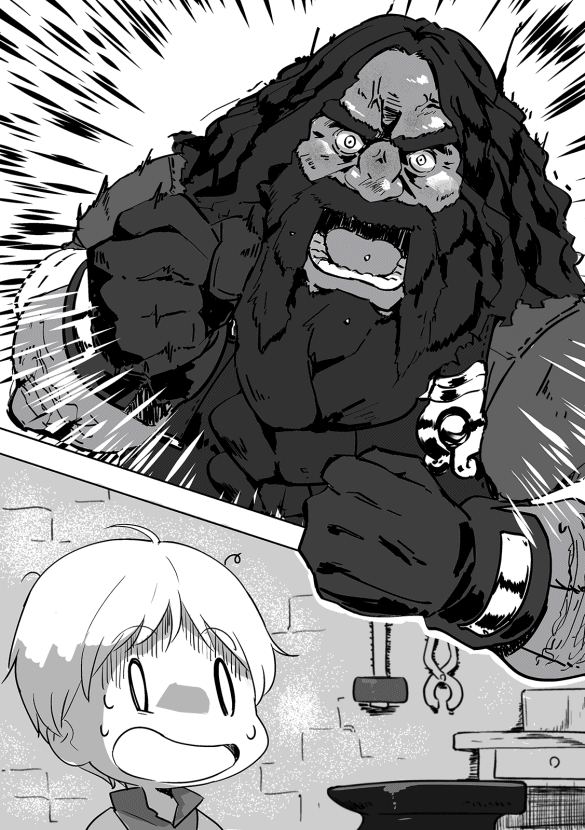
「たった千なのか？ 俺にはそう聞こえたが」
ザックは「聞き間違いじゃない」と言い、
「これが適正な値段だ。若干高めにしているがな」
俺はおかしいと抗議する。
「もっと出せるぞ、俺たち鍛冶師は。もっと高くして人を雇ってたくさん作ればいいじゃないか」
だが、ザックは首を縦に振らなかった。
「これ以上高くすると偽物が出てくる。そうなると俺の作りたい酒が世の中から消されてしまうんだ。スコッチは、いや、酒は品質が一番大事だ。変な混ぜ物が入ったり、適当に作られたら一気に味が落ちる。そんなことにならないためにも、この値段は絶対に変えない」
俺は呆れてものが言えなかった。
（品質を落とさないために値段を上げないだと！ 安い偽物が出れば、本物が駆逐される。武具でもそうだ。ゲールノート殿のチェインメイルなど贋作だらけだからな。まあ、武具は分かる奴が見れば一発で本物かどうかばれるが......理屈は分からんでもないが、ここまで酒に拘るのか......）
俺は腹をくくった。
「そこまで言うなら、この条件でいい。だが、これだけは約束してくれ」
ザックは「何をだ？」と首を傾げる。
「将来的にはもっと増やすと約束してくれ」
頭を大きく下げると、「分かったよ」と了解してくれた。
結局、蒸留器は二基だけ大きくすることになった。生産量は増やさなくても大きなものにしておけばいいんじゃないかと言ったら、
「まだ、どの大きさのものが一番うまいものを作れるのか分からないんだ。小さい奴の方がうまいスコッチになる可能性がある。だから、とりあえず残しておくんだ」
味のことを言われると、こちらも反論できない。
話を終え、ザックは屋敷に戻っていった。残された俺はアルスの総本部にどう説明しようか悩みながら、手紙を書き始めた。
二年半の時が流れ、トリア暦三〇一〇年の春を迎えた。
俺が手掛けた改革プランは順調に根付き、ラスモア村の生活は少しだけ豊かになった。
石鹸についてはマスグレイブ商会以外にも五つの商会が製造法を購入し、二十万Ｃ 、日本円で二億円に相当する収入をロックハート家にもたらした。
マスグレイブ商会は俺の予想した通り、独占的に製法を取得したと噂を流したようだ。俺たちが先手を打って各ギルドに噂を流したため、後になってから否定される形になった。噂が広まりきった数ヶ月後には、マスグレイブ商会は商人としての信用を大きく損ね、一時期苦境に陥ったと聞いた。
先にも言ったが計六社に売れている。これも俺の予想通りなのだが、引き合いの多さにニコラスは製法の転売を禁じるべきではないかと言ってきた。だが、俺は彼らが同業者に製法を転売する心配はないと考え、契約に転売禁止条項は付けなかった。
理由は簡単だ。ロックハート家が石鹸の製法を誰にでも教えるという情報は、アルス街道やアウレラ街道で商売をやっている商人なら誰でも知っている情報だ。うちが製造する量は村で消費する程度で、積極的に販売することはないと宣言している。つまり、石鹸を売ることで利益を上げるのではなく、製法を売ることで利益を上げようとしていると認識されている。そうであるなら、ロックハート家はできる限り多くの商人に製法を売りたいから、正しい情報を伝えることは容易に予想できる。
しかし、マスグレイブ商会など先に製法を取得した業者は、自分たちのライバルを増やすことになるから将来のことを考え、劣化版の製法しか教えない可能性がある。更に最初に買ったマスグレイブ商会がどの程度の金額を支払ったのかも噂で流れており、おおよその相場は分かっている。
新規参入を考えている者も先行組が相場より安値で転売すれば品質を疑うだろうし、高値で転売するならロックハート家から買えばいいことになる。
それに多少品質が落ちていても安値で買いたいという業者がいた場合、売り手側にとっては自分たちより有利な条件──初期投資が少なくて済むなど──のライバルを自ら生み出すことになる。更に品質の悪い商品が市場に出回ることにより、商品全体の価値が低下し、価格を押し下げる要因にもなりかねない。石鹸は富裕層向けの商品であり、既に販路を持っている大手の業者しか手を出さないから、相当切羽詰っていない限り、転売することは考えなくていい。
それに数年もすれば、放っておいても技術は拡散していくだろうから、初期に儲けが出れば十分だと思っている。だから、あえて転売禁止条項は契約に入れなかった。そもそも石鹸の製法を独占しなかった理由は帝都の業者の介入を恐れたからであって、さっさと広まってくれる方がよほど安全だ。
実際問題として、石鹸の製法を完全に習得するには乾燥工程まで仕込む必要があるから、数ヶ月はかかる。今回もマスグレイブ商会の職人が技術を習得する前に次の業者がやってきたので、転売の心配はなかった。
石鹸製法の売却では、現金の他にも魔道具である時計や巡回授業で使う教本、更には農業などの専門書、工具類、調理器具などを付けさせたため、村の文化レベルは非常に上がっている。
時計については村の顔役ゴードンの家に鐘と共に貸与し、朝六時から夜の八時まで、二時間ごとに鐘を鳴らさせている。最初はゴードンが面倒がると思ったのだが、貴重な魔道具を貸し与えられたと逆に感激していた。重要な仕事を与えられたことを誇りに思っているようで全く問題なかった。
鐘による時刻の周知は副次的な効果をもたらした。農家の作業効率が向上したのだ。
他の理由、有輪式重量犂などの導入もあるが、刈り取りなどの昔と同じ方法の農作業でも効率が上がっている。やはり、目標となる時間が分かると人は集中できるのかもしれない。
父の許しを得て作った公衆浴場は、十五人程度が一度に入れる、結構大きなものになった。当初は浴槽が一つだけだったが、村人たちの間で入浴がブームとなり、すぐに浴槽を増設し、今では男湯と女湯に分けている。
この公衆浴場なのだが、試し用に作った浴槽と同じ作り方、つまり俺の土属性魔法で作る方法では到底作ることはできないと考え、最初はセメントを作って、それで浴槽を作ろうと考えた。
セメントなのだが、結論から言うと失敗だった。生石灰と砂と水を混ぜ合わせてみるのだが、うまくセメントにならない。生石灰に水を加える時点で高温になり、何度も火傷しそうになったのにだ。
材料が間違っているのだろうと考え、いろいろ試してみたのだが、古代ローマ人が使ったコンクリート、〝ローマン・コンクリート〟ですら、結局再現できなかった。微かな記憶では灰色の火山灰だか軽石だかを使ったと覚えていたのだが、この辺りには火山灰自体がなく、それに替わるものが思いつかなかった。
仕方なく地面に浴槽分の穴を掘り、土の上に石を敷き詰めて、俺の魔法をモルタル代わりにして隙間を埋めていった。何となく岩風呂っぽい造りになり、うまくいったのだが、排水管などの設置が大変だった。これも魔法で解決したのだが、手の届かない場所に配水管を通すのが大変だった。その方法だが、排水管となる石製のパイプを作っておき、魔法で穴を掘ってから設置し、埋め戻すというもので、これが結構面倒だったのだ。
それでも一から作るよりはかなり魔力 の節約になり、三ヶ月ほどで浴槽は完成した。更に洗い場と洗い場用の貯湯槽を作ったため、俺の土属性のレベルが一気に上がっている。
ボイラーは鍛冶師のベルトラムに製作を依頼し、大型の釜を設置している。ポンプを作るのが面倒だったので循環機能は付けなかった。そのため、浴槽の湯を焚き上げるタイプではなく、湯を補充するタイプになった。将来的にはボイラーを魔道具で代用できないかと考えている。
村人たちへの普及についてだが、最初のうちは風呂の入り方が分からず、すぐに湯が汚れてしまった。何度か指導することでマナーも改善され、それに従って利用者が増えていったという感じだ。掃除などの浴場の管理を各地区の輪番制したのもマナー向上に役立ったのかもしれない。
五百人の人口に対して、規模が小さいと思うのだが、時間帯を工夫することにより、数日おきに入浴することも可能になっている。そのおかげで、俺が初めて視察した四年前と比べ、村人の姿は非常に清潔になっている。
風呂の排水が用水路の水質に影響を与えるかと思ったが、ため池からの放水量を増やし、希釈率を上げたことで目立った汚れはない。髪の毛などのゴミは排水ラインにストレーナ代わりのザルを数ヶ所設置したことと、排水用の沈殿槽 を設けたことから、用水路にゴミが浮くようなことはない。実際に生物学的酸素要求量 などを測定すれば、多少は悪化しているだろうが、それほど気にしていない。
そもそも雨の日に牧草地から流れ込む水の方が家畜の糞が溶け込み汚いはずだ。日本なら目くじらを立てて怒る人もいるだろうが、そういう人はなぜか洗車の排水には文句を言わない。どうでもいい話だが、よほど人間の体より車の方が汚れているような気がするのだが不思議なことだ。天然素材が万能だとは言わないが、今の人口なら天然素材の石鹸で汚れた水を流しても、充分な希釈効果によって自然分解の許容量以内にできると思っている。
有輪式重量犂の導入により、村人たちの生産性が向上し、今まで放置されていた館ヶ丘の西側の開墾や更に東の森の開墾にも着手している。有輪式重量犂は農民たちの手により、徐々に改良され、プロトタイプの面影はほとんど残っていないほどだ。
風呂とトイレ、石鹸の導入などにより、村人の衛生状態は劇的に改善された。
衛生状態が良くなったこと、生水の摂取を制限したこと、更に食器や調理道具の洗浄を徹底させたことなどの効果なのか、大規模な疫病の発生もなく、乳幼児の死亡率も徐々に下がっている。
因果関係は不明だが、公衆浴場での入浴がブームになった翌年、村に妊婦の姿が目立つようになった。入浴できれいになった妻（夫？）に夫（妻？）が惚れ直したのかもしれない。
このため、ラスモア村の人口は爆発的に増加しそうな勢いだ。五百人前後で横ばいだった人口が徐々に増加に向かっている。二十年後には人口が倍増しそうなほどだ。
教育については、リディとケイトの巡回授業は充分な効果を上げている。
識字率の正確な定義は知らないが、教育を始める前、ある程度文字を読み書きできた割合は一割にも満たなかったが、この三年でその割合は三割を超えている。まだ、簡単な文章の読み書きができる程度だが、辺境の小さな村では驚くべきことだそうだ。
今後も巡回授業を続けていくが、今の調子なら学校を建設してもいいと思っている。
メープルシロップと蜂蜜についてだが、メープルシロップは春先に少量だけだが生産を続けている。蜂蜜に比べ甘みが少ないが、調味料として使う分には独特の香りがあって味のアクセントにもなるからだ。更に白樺樹液からキシリトールを作ってみたが、メープルシロップより手間がかかる割に甘みが更に少ないのでこちらは製造をやめている。虫歯が流行り始めたら復活させるかもしれない。
養蜂の方だが、未だに完全な成功には至っていない。
最初の年に養蜂箱に蜂が入り喜んでいたのだが、蜂蜜の採取に失敗し、巣を全滅させてしまった。一応、簡単な手回しの遠心分離機で採取したのだが、それがいけなかったか、それとも時期が悪かったのか、なぜか蜂がいなくなった。
二年目は二つの養蜂箱に蜜蜂が巣を作った。前年の反省を生かすため、蜂蜜の採取を遠心分離から、自然落下に変え、更に花の多い時期だけ蜜を採取することにし、一応の成功を見た。だが、冬場の温度管理に失敗し、二つの巣箱は全滅した。
そして、今年の春も二つの巣箱に蜂が入っている。去年までの反省を生かし、何とか来年まで繋いでいきたいと思っている。
最後に最も力を入れている蒸留酒造りだが、穀物の余剰生産分に加え、近隣の村が豊作だった時に大量に穀物を買い入れて酒にしている。
昨年の秋に初めて出荷したのだが、アルスのドワーフたちの反応が良く、更に増産して欲しいとの要請が来たほどだ。このため、蒸留器をすべて大型の物に更新した。三年前にアルスにサンプルを送った際にすでに半数を大型化しているのだが、それでも足りないというのだ。そのせいで、ベルトラムが忙しくなり、自警団の武器の手入れが滞った。祖父に苦情を言われたが、当の本人が蒸留器の方に力を入れているのでどうしようもない。それどころか、俺が要請していないのに、更に蒸留器を増やそうとする勢いだったのだ。何とか蒸留所の増設計画を考えると言って思い留まらせたが、ドワーフは酒が絡むと気合の入り方が違うと父たちは呆れていた。
その四台の蒸留器をフル稼働させて蒸留を続けているため、今では六百樽近い数の蒸留酒が保管庫に眠っている。さすがにスコットの蒸留所の保管スペースでは手狭になり、館ヶ丘の東の林近くにレンガ造りの倉庫を建てた。それでも貯蔵量が限界に達しそうで、今年中には増築が必要になる。
この保管庫なのだが、最初は金をかけずに俺の魔法でトンネルを掘り、そこに保管しようと考えた。しかし、スコッチの保管はワインと違い、ある程度温度変化があった方がいいということを思い出し、レンガ倉庫を建ててもらった。これらの資金は石鹸製法の売却益だが、将来的には蒸留酒造りでリターンできると信じているので積極的に投資を行っている。
このレンガ造りの倉庫なのだが、少しだけ問題があった。丘の上にある本館──木造二階建ての屋敷──より遥かに立派に見えるため、初めて来た客が必ず倉庫に向かってしまうのだ。一応、館ヶ丘の入口に立て札を立てて案内はしているのだが、一向に改善されない。まあ、俺が見ても明らかに屋敷より倉庫の方が立派なので勘違いしても仕方がないだろう。
俺自身についてだが、もうすぐ八歳になる。身長も伸び、幼児らしい体型から少年らしい体型になった。魔法レベルは土属性が十八に上がり、リディからはもう一人前の魔術師並になっていると言われている。
剣術についてだが、六歳になった頃から職業レベルである剣術士レベルとスキルレベルである剣術レベルに差が出始めた。現在は剣術士レベル十二だが、スキルレベルは十五。スキルだけならほとんど一般兵並の技量ということだ。そして、最も才能のある回避についてはスキルレベルが二十になり、メルやダンとの模擬戦では攻撃を受けることはほとんどないし、兄との模擬戦でもかなりいい線までいけている。
その他にも投擲と格闘も自主トレーニングを行い、どちらもスキルレベル五になっている。指導者がいないことと、メインの剣術の訓練に力を入れるため、両スキルとも上がりは遅い。
家族についてだが、三年前に生まれた弟のセオと妹のセラはやんちゃ盛りで、屋敷の中はとても賑やかだ。たどたどしいが言葉も覚え始めており、好奇心旺盛な二人の相手は大変だ。
他の家族も祖父を始め全員元気で、今年の秋には弟か妹が生まれる予定だ。
従士たちも変わりなく、イーノスのところは去年、二人目の子供が生まれている。
ウォルトとモリーの娘、トリシアは二年前に同い年の村の若者ウィル・キーガンと結婚した。ウィルは自警団の中でも有望な若者であると祖父が目を付けていたそうで、トリシアとの結婚を機に従士に取り立てられている。トリシアが結婚したため、ウォルトとモリーが屋敷に住み込み、ウォルトたちの家がウィルとトリシアの新居となった。
僅か三年ほどで、この館ヶ丘もかなり人が増えた。しかし、明日、四月二日に、ここ館ヶ丘を後にする者がいる。そう、兄ロドリックだ。
兄は先日、十二歳になった。このため前から話が出ていたラズウェル辺境伯領の騎士団に入団するのだ。
三年前の俺の誕生日から、兄は努力を重ね、剣術士レベルが十六、スキルレベルが二十二になっている。祖父に聞くと成人である十五歳の従騎士でも剣術士レベルが十五に達していることは稀だそうだ。騎士団の見習いの中では群を抜いて強いはずで、体力的にはともかく、技量だけなら十八歳程度の新米騎士に十分勝てると祖父が太鼓判を押していた。
それでも兄は謙虚な態度を崩さない。
俺から見ると厳しい環境で育ったからか反抗期もなく、とても素直ないい少年なのだが、逆に知り合いのいない騎士団でやっていけるのか心配になる。父に似て爽やかな容姿をしており、剣の腕とその見た目で仲間たちからやっかみを受けないかと思ってしまう。そのことを祖父に話したが、豪快に笑った後「大丈夫じゃ」と一蹴された。
「ロッドには目指すべき目標がある。そういう男は強い。それに騎士団に限らずどこでもそうじゃが、人が集まれば軋轢は生まれる。お前はともかく、ロッドには良い経験になろう」
俺はそれでも不安があった。
（十二歳といえば小学六年か中学一年だろう。それで寮生活でいじめがあったら、やばいと思うんだがな。特に相談できる相手もいないし......その辺りはじい様も分かっているのだろうが......）
俺は不安を隠しきれなかったのか、祖父が更に話を続けていく。
「何があろうと、その程度で潰れるような者はロックハート家の嫡男には相応しくない。ロッドにはやられたらやり返せと言ってある。相手が身分を笠に着ようが構うなとな」
その言葉に頭を抱えそうになった。
（さすがにそれは拙いんじゃないのか？ じい様が辺境伯の命の恩人であっても、爵位持ちの貴族の息子もいるはずだ......本気で心配になってきたぞ......）
俺は祖父のもとを後にし、兄のところに向かった。兄は自分の部屋で出発の準備をしていた。
声を掛けるとすぐに手を止め、「どうした？」と聞いてくる。俺はどう声を掛けていいものかと悩みながら、言葉を選んでいく。
「えっと、騎士団でもがんばってください。それから、おじい様のおっしゃることは真に受けない方がいいと......」
兄は大きく笑い、「やられたら、やり返せってことかい」と言ってきた。
「はい。騎士団といえば人間関係が複雑ですから、最初はいろいろ言われるかもしれませんけど、友達を作って......」
俺はどう言っていいのか分からず、ごちゃごちゃと訳の分からない言葉を並べていく。
「大丈夫だ。少なくとも誰にも負けるつもりはない。この先、お前とお前の言う神様が遣わした子供を、僕が守れるようにならないといけないんだ。そのためには強くならないといけない。騎士団の見習い程度に負けるわけにはいかないんだ」
兄はさばさばとした表情でそう語った。
（兄様も大人になりつつあるのだな。これなら大丈夫かもしれないが、やはり心配だ）
更に俺の目を見てこう付け加える。
「それにこれからお前を一気に引き離すぞ。四歳も年下の弟に模擬戦でまともに勝てないんじゃ、兄として恥ずかしいからな」
確かに俺の回避スキルが二十になっているから、回避に専念すればかなりいいところまで戦える。さすがに体格的には圧倒的に負けているから、勝負に勝てるわけではないのだが、兄としての矜持が許さないのだろう。
「分かりました。俺も兄様に引き離されないようにがんばります。兄様も体には気を付けてください」
俺が兄の部屋を出て行こうとしたら、
「この部屋を使ってもいいぞ。僕は小隊長クラスになるまで帰ってくるつもりはないから」
兄の並々ならぬ決意に「分かりました。そうさせてもらいます」と頭を下げて部屋を後にした。
翌日、父と共に兄はラズウェル辺境伯領の都ウェルバーンに向けて出発した。
ウェルバーンはアウレラ街道──冒険者の街ペリクリトルと商業都市アウレラを結ぶ主要街道──の遥か先にある都市だ。ここラスモア村からは五百五十キロメートルほど離れており、騎乗でも半月以上掛かる。父はラズウェル辺境伯への挨拶を兼ねて、兄を送っていくことにした。供は新たに従士となったウィルだけで、彼の見聞を広めるという理由で同行を許されている。
兄と父が出発すると、一気に家が広くなったような気がする。
出発の際、セオとセラは兄がいなくなると聞いて泣き始め、モリーもそれに釣られて涙を浮かべている。俺も少し目頭が熱くなったが、兄の門出に涙は不要と我慢した。
（やはり寂しいものだな。家族が旅立って行くのは。また、戻ってくると分かっていても、今という時間を共有できないというのは......母上はどう思っているのだろう？）
母の様子は至って変わらず、付いていけなかったことが残念としか言わない。
「ロッドもウェルバーンで大人になるのね。私もおなかに子供がいなければ一緒についていったのに」
「母上は寂しくないのですか？ 騎士団では最低二年間は里帰りもできないと聞きましたが」
母は少し目を伏せるが、すぐに笑顔になる。
「そうね。寂しいわよ。でも、男の子なんだから、いつかは母親の手を離れるものなの。あなたもそうよ。あと何年かしたら旅立つはず......でも、いつか戻ってくる。それが分かっているから、そんなに寂しくはないわ」
母がかなり強がっているように見えたが、騎士の家に嫁いできた時から覚悟していたのかもしれない。
その日の夕食の時、兄の座っていた椅子がぽっかりと空いていることにどうしても目がいってしまう。俺の記憶の中では必ず兄の姿がそこにあった。父は仕事などでいないことがあったが、兄がどこかに行っていないということは今まで一度もなかった。いい年をした俺が僅か十二歳の少年がいなくなったことで寂しさを感じるというのはどうかと思うが、俺がこの家の家族になっている証拠なのだろう。
祖父がいつも以上に饒舌なのも、俺と同じ思いをしているからかもしれない。
その夜、リディと話をした。
彼女も家族と別れ、ここに来ている。それに今までの人生で多くの人と出会い、別れている。彼女の意見を聞いてみたかったのだ。
「兄様が行ってしまったね」
「そうね。でも、またすぐに会えるわよ。生きていればいつか必ず」
俺を元気付けるために言っているのかと思ったら、いつもと同じ調子で話している。
「死んでしまったら会えないけど、生きていれば、どこにいようと会うことはできるの。そう、生きていればね......」
昔のことを思い出しているのか、自分に言い聞かせるような感じに変わっていた。
「そうだな。兄様なら生きて帰ってくるよな。それも強くなって」
「そうよ。ここがロッドの帰る場所」
そして俺を捕まえ、「ザック、あなたの帰ってくるところは私のところ」と言って抱き締める。
俺は「そうだな」と言いながら、将来のことを考えていた。
（俺も近い将来、そう数年以内にここを出て行くだろう。ここにずっといてもいいと思うほど、居心地はいいが、それではこの村に災いを呼ぶ。俺がいつ運命の子に出会うのかは分からないが、出会うことは確定している。ならば、俺にできることは村を守る選択肢を増やすことだ。そのために、少しでも力を付ける必要がある）
五月十五日。
父とウィルがウェルバーンから無事帰ってきた。
これで食卓の父の席は埋まった。だが、どうしても空いている兄の席を見てしまう。
三〇一〇年五月二十五日。俺は八歳になった。
俺の日課は午前中が剣術の訓練、午後が魔法の勉強と剣術の訓練に当てられている。
俺のステータスだが、
ザカライアス・ロックハート 八歳 魔道剣術士レベル十二
筋力 ：一五／五三
反射神経 ：二六／九一
肉体制御能力：二六／九一
耐久力 ：三四／一二〇（八〇×一・五）
魔力 ：二八／一〇〇
精神力 ：一二〇（八〇×一・五）
知力 ：一〇〇
製作能力 ：一四／五〇
容姿 ：八七
魅力 ：八二
ＨＰ ：三八二
ＭＰ ：三七七
スキル ：剣術一五、投擲五、格闘五、体術一五、回避二〇、盾防御六、交渉三四、計算七〇
魔法 ：土属性一八、風・水・木属性一六、火・光属性一五、闇・金属性七
特殊能力 ：頑健、病気耐性、毒耐性、精神耐性、視力強化、死力発揮、前世記憶、参照、魔闘術
筋力、反射神経、肉体制御能力の最大値が僅かだが上がっていた。
設定の時にはそのキャラの最大値だと記憶していたのだが、なぜか上がっていたのだ。
幼い頃からの訓練で上がったのかもしれないが、そもそも神との会話の内容を考えると、この数字自体に意味がない。だから、数字で一喜一憂しないように気を付けている。
そう言いたいところだが、やはり自分の能力値が上がっていくのは嬉しい。特に最大値が上がった時には思わず叫んでしまったほどだ。夜ということもあり、父が何事かと部屋に駆け込んできたほどで、その説明をするのが恥ずかしかったが、それが気にならないほど嬉しかった。
一度、この数字の上がり方を計算してみたのだが、説明書通り、成人すなわち十五歳で最大値に向かう曲線を描いていた。あと七年でこの最大値のステータスになる。ステータスと戦闘能力の関係がいまいち分かっていないが、今のこの身体ではスキルがある程度あっても、大人とは戦いにならない。やはり体作りは大切だということなのだろう。
体術だが、コツコツ上げて十五になっている。体操選手のような動きをイメージして練習し、今では後方宙返りもできるようになっている。祖父には隠れてだが、剣術、体術、格闘、投擲などを組み合わせた技も練習している。剣で攻撃しながら回し蹴りを繰り出したり、宙返りを打ちながらナイフを投げたりと、アクション映画さながらのトリッキーな動きも練習している。
もちろん、やりたいからやっているだけで、実戦で使えるとは思っていない。あくまで子供の頃にテレビでやっていたアクションヒーローものか、小説で読んだ忍者の真似をしているに過ぎない。自分でも子供っぽいことだと自覚はしている。それでも折角生まれ変わったのだから、昔できなかったことをやってみたい。さすがに他人に見られると恥ずかしいので隠れてやっているが。
それ以外にも魔闘術の訓練も始めている。
使い方がよく分からないので、イメージとしては風属性で素早さを、火属性で攻撃力を、金属性で防御力をという感じで身体能力を上げている。身体能力は上がるのだが、身体の制御がうまくいかず、派手に転倒することが多い。それもいつもとは違う動きであり、まともな受身がとれず、無様に転がっていくのだ。その姿を見られるのも恥ずかしいので、これも隠れて訓練をしている。
ザックカルテットの面々だが、メルは九歳になり、剣術士レベルが十、剣術スキルが十四になった。彼女の剣は祖父の型にそっくりで、見ていると惚れ惚れするほどだ。姿見の大きな鏡がないから何ともいえないのだが、同じ祖父の弟子である俺の剣はあそこまで美しくないだろう。
ただ、性格が素直なためか、祖父の型を知っているためかは分からないが、メルの攻撃は避けやすい。決して遅い斬撃ではないのだが、軌道が読めてしまうのだ。これについて祖父に聞いてみたが、「今はそれでよい。その先は実戦で覚えていくものじゃ」とのことだった。
祖父の見立てでは、今後実戦を重ねていくことで応用力が付いていくから、あまり心配する必要はないそうだ。
ダンだが、一年ほど前、俺とメルに剣術士レベルが引き離されていくことを悩んでいた。
八歳にしては十分に高いレベルだったが、彼自身、三人の中で一番成長が遅いことを気にしていた。
俺はダンと話をし、悩みを聞いてみると、彼は父であるガイのような冒険者──剣と弓をバランスよく使える斥候 ──に憧れているようで、剣術スキルレベルが上がらないことを悩んでいたのだ。
「ガイのような冒険者になりたいんだね。なら、弓をやってもいいかも」
俺の言葉に彼も同じことを考えていた。
「でも、父上に教えてくださいってお願いしたんだけど、まだ早いって......」
ガイは体ができていない幼い息子のことを思い、弓術はもう少し先に教えるつもりのようだった。俺は祖父にその話をしてみた。
「ダンも八歳か......お前とメル、それにロッドの剣の才能は異常じゃ。それと比較してしまうのは仕方がないが、そろそろ弓を始めても良いかもしれんな」
祖父は弓術士としてはロックハート家で一番の腕を持つヘクターに弓術の指導を始めさせた。
最初はメルもやっていたのだが、才能がないと分かったのか、すぐに剣術一本に戻している。俺は才能を持っていないと知っているので、最初から参加していない。
ダンは一年間、剣術と弓術の二足のわらじを履き続け、剣術士レベル八、剣術スキルが十二、弓術士レベル三、弓術スキルも三と弓術にも高い才能を示した。
祖父もその才能と努力に驚き、ダンに向かって、「父の跡を継げるな」と彼の頭をぽんぽんと叩いて笑っていた。祖父の言葉がよほど嬉しかったのか、満面の笑みで「がんばります！」と大声で返事をしていたのが印象的だった。
最後にシャロンなのだが、俺以外で一番驚かれている存在だ。
俺より一ヶ月早く生まれただけの彼女は俺と同じ八歳だ。火と風の属性を持ち、幼い頃から指導を受けていたおかげで、リディの見立て──魔術師ギルドのオーブがないとレベルが確認できない──では火属性が五くらい、風属性が十くらいと魔術学院の三年生、十五歳くらいのレベルになっている。更に驚くべきことに俺と同じく無詠唱で魔法が使える。まだ魔力保有量 が少ないため、それほど連発はできないが、魔法発動までの時間は俺に匹敵するほど速い。
特に俺のオリジナル風属性魔法、燕翼の刃 ──ツバメの形をした風の刃 の変形版──を使いこなしているだけでなく、開発者の俺より細かい制御がうまい。
そのことを彼女に聞くと、力が抜けるような答えが返ってきた。
「ツバメをよく見ているから、何となくこんな風に飛ぶのかなって」
若干天然系のおっとりとした少女に育っているが、観察力とその再現力には脱帽する。当初リディは魔術学院に行くことを勧めていたが、最近ではその話をしなくなった。
「シャロンが行っても習うことなんてないわよ。あと二年もしたら、卒業生並になるんだし。入学の頃には十分一人前になっているわ。それより、ここで経験を積んだ方がよっぽどいいわ。これはあなたにも言えることだけどね」
ドクトゥスの魔術学院の卒業生の平均レベルは、おおよそ十五くらいだそうだ。
学院では魔法を教えるだけではないから、単純に良い悪いは言えない。だが、卒業生であるリディに言わせると、研究者や教育者になるつもりがなければ、それほど役に立たないだろうとのことだ。
俺の場合は、謎が多い闇属性や使い方のよく分からない金属性について勉強したいと思っているから、魔術学院に行くつもりだが、攻撃魔法を極めるだけなら学院に行く必要はない。
八歳になったことで、俺は祖父に頼みたいことがあった。
森に行ってみたいのだ。
俺が森に行きたい理由は二つあった。
一つは実戦経験を積むことで職業レベルである剣術士レベルを上げること、もう一つが気配察知や隠密といったフィールド系のスキルを上げることだ。
一つ目の実戦については、もう少し先でもいいが、気配察知や隠密といった今後に役立つスキルはできるだけ早く修得したい。八歳の子供が危険な森に行くのは無理だろうと思わないでもないが、最低限の自衛手段である魔法が使えるので、何とかならないかと考えている。
祖父の部屋に行き、森に行きたいことを告げると、祖父は少し考え、条件付きながらも了承してくれた。
「少し早いが良かろう。但し、ガイかヘクターが認めることが条件じゃ」
翌日、自警団のことで祖父のところに来たヘクターを捕まえる。
ヘクターはいつもの明るい笑顔で俺を迎えるが、森に連れていって欲しいと話すとその笑顔が曇る。
「ザック様にはまだお早いかと。森には思わぬ危険がございますから」
俺は諦めきれず、「ヘクターが俺の実力を確認して納得できたら連れて行って欲しい」と頼み込む。彼は困った顔をするが、「分かりました。館ヶ丘の東の林で練習しましょう」と林に向かった。
この林はメープルシロップを採取している楓が多く生え、俺たちの遊び場にもなっているところだ。ここで森歩きの基本である周囲を警戒しながら歩く方法や、合図があったらすぐに停止する訓練などを行っていく。
三日ほど練習すると、ヘクターの許可が下り、比較的安全な西の森に行くことになった。ヘクターとガイ、そしてウィルと共に森に入ることになった。
革の帽子を被り、小さな背嚢 に水筒などを入れ、ダガーを腰に差す。基本的には俺が戦うことは想定しておらず、騎士の家の男子の嗜みということで差しているに過ぎない。
出発時間になると、ダンとメルが一緒に行くと叫んでいたが、二人の父親──ヘクターとガイ──に一喝され、二人は不貞腐れていた。
明日にでもフォローしようと思いながら、三人の大人について館ヶ丘を出発した。
館ヶ丘を下りた後、真っ直ぐに南に下り、西ヶ丘の南側を走る街道を進んでいく。フィン川に掛けられた橋を渡るとそこが西の森だ。
午前八時に出発し、二十分ほどで森に到着する。
今日の三人の目的は西の森の偵察だ。定期的に魔物の痕跡を探し、村に近づく危険な魔物がいないかを探っているのだ。西の森に危険な魔物が棲みついたことはないが、狼程度の動物はよく入り込むので、警戒は欠かせない。
森に入って三十分。下生えの草が足に絡みつき、非常に歩きにくい。
大人たちはそれほど苦にしていないようだが、身長が百三十センチほどしかない俺にとっては結構な負荷になる。先頭を行くガイも俺に気を使い、ペースを落としてくれるのだが、それでも周囲を警戒するどころの話ではない。村に近い東側から南北に蛇行するように森の中を進んでいくが、一時間ほどで息が上がる。
ヘクターが「ザック様、少し休憩しますか？」と気を使ってくれる。
「はぁはぁ、俺の我儘だから、構わなくていい。はぁはぁ、ペースを落としてもらっているだけで、はぁ、充分だ」
荒い息でしゃべっているので説得力がない。ヘクターも苦笑いを浮かべ、「ここらで少し休みましょう」と言い、小休止に入ることになった。
近くの倒木に腰を掛け、水筒からゴクリと水を飲むと、何とか一息つけた。
周りを見回すと五月の新緑が眩しく、翡翠 色の若葉を通した陽の光がキラキラと輝いていた。聞こえてくるのは風に揺れる枝の音と鳥の鳴き声くらいで平和そのものだ。
五分ほど休憩を取ると、すぐに出発する。奥に進むにつれ森が深くなり、植生も楢の大木が目立つようになる。その根元には苔むした岩に羊歯のような草が生え、更に小さな白い花を付けた草が生えている様子は神秘的ですらあった。
前世では白神山地や屋久島といった美しい自然に憧れていた。そして、目の前にはそれに匹敵する大自然が広がっている。感動で胸が一杯になるが、ガイの一言で一気にその興奮が冷めていった。
「狼の足跡です。森狼の群れ......二十頭くらいですか」
俺は思わず腰のダガーに手をやり、周囲を見回していた。
俺の前ではガイがその足跡を観察している。そして、彼は顔を上げ、ヘクターに意見を求める。
「結構新しいと思いますが、どう思いますか？」
「そうだな。三日といったところか。ウィル、お前も見ておけ」
元農民のウィルは森での経験が少ない。そのため、ベテランのヘクターやガイから指導を受けているのだ。俺もウィルの横から覗き込むようにその足跡を観察する。
長さ十センチほどの犬のような足跡だが、幅が広く思ったより大きい感じがした。「森狼ってどのくらいの大きさなんだろう？」と呟くと、それを聞いたガイが教えてくれた。
「これくらいですと......大体頭の高さが七十ｃｍ くらいで、頭から尾の付け根までが一・三ｍ ほどですね」
ガイは手で大きさを示してくれながら、説明してくれる。
（シベリアンハスキーくらいか？ いや、それより少し大きいくらいかもしれないな。それが二十頭......危険じゃないのか？）
俺が不安そうな顔をしていたのか、ガイが笑いながら大したことはないと説明してくれた。
「灰色狼に比べれば二回りくらい小さい狼ですから。二十頭くらいでしたら、我々従士だけでも充分に倒せる数です。心配はいりませんよ」
狼と聞き、ガイの言葉がにわかには信じられなかった。
（そうなのか？ うちにはこの三人とウォルト、ニコラス、イーノスの三人をあわせても六人しか従士はいないぞ。一人当たり三頭も相手にできるのだろうか？）
まだ、懸念が顔に出ていたのか、ヘクターも笑いながら、「我々三人でもこのくらいなら倒せます。ご心配には及びません」と言った。
俺は何とか表情を緩め、「分かった」と頷く。訓練以外で彼らの腕前を見ていないが、大きな犬程度なら一刀のもとに倒していけるだろう。
ガイが先頭になって足跡を追っていくが、狼たちの足跡はそのまま北の森に入っていった。
「予定を変更して北の森に入ります。特に危険はないと思いますが、今までより森が深くなりますので、疲れたらいつでもおっしゃってください」
ヘクターに頷き、俺たちは再び狼の足跡を追っていった。
二時間ほど北の森の中を進むが、村の北にある小さな山、シェハリオン山に入ったところで追跡を諦めた。
「山に戻ったようです。餌を求めてうろついただけでしょう。少し早いですが、ここで昼食にしましょう」
幹の直径が一メートルを超える巨木が倒れており、深い森の中でぽっかりと空が見える場所になっている。明るい陽の下でモリーの焼いたパンに、焼いた塩漬けの豚肉を挟んだサンドウィッチを頬張る。
豚肉の脂が口の中に広がり、パサ付くパンに旨みを加えている。最後に蜂蜜を練り込んだ焼き菓子を食べ、簡単な昼食が終わる。
ふぅと息を吐き出し、空を見上げると、雲雀のような小鳥が空を舞っていた。
（平和そのものだな。これでメルたちと一緒だと、ただのピクニックだな......）
そう思いながら周りをぐるりと見ると、ヘクターが弓を構えていた。
俺は思わず声を上げそうになったが、彼の視線の先、距離にして三十メートルほど先に一羽の茶色いウサギが草を食んでいた。
ヘクターが静かに照準を合わせ、何の前触れもなく矢を放った。シュッという空気を斬り裂く音が辺りに響き、すぐにドサッという音とピュという悲しげな泣き声が聞こえた。すぐにウィルが近づいていき、ウサギを回収する。
ヘクターの放った矢はウサギの脇腹を見事に貫いており、既に死んでいた。ウィルはすぐに血抜きを始め、ウサギの茶色い毛皮が赤く染まっていった。
「お見事！ あの距離で一発か。凄いな」
ヘクターが俺の賞賛に軽く頭を下げ、ウィルの持ってきたウサギを見せてくれる。
前世の俺の親父は趣味でハンティングをやっていた。まあ、趣味というより上司の趣味に付き合っていたという感じだが、小学生の頃、何度か付いていったことがあり、キジバトや山鳥の血抜きを見たことがある。帰ってから獲った鳥の羽を毟るのは俺の仕事だったので、こういうことに忌避感はほとんどない。
ウサギはまだ少し痩 せているが、かなり大きなもので明日以降のおかずになるはずだ。
（心臓と肝がうまいんだよな。少し臭みがあるけど、血と赤ワインと出汁で作ったソースを掛けると、シラーあたりの濃い赤ワインとばっちり合う......まあ、そんな食べ方はフレンチレストランで飼ウサギ を食べたくらいで、野ウサギ で食べたことはないんだが......）
思わずよだれが垂れそうになり、無理やりウサギから意識を引き離す。
再び西の森に戻り、午後二時頃、街道に出る。
「今日はこれで村に戻ります。これだけ動ければ十分ついて来られますので、先代様にはそう報告しておきます」
ヘクターのお墨付きをもらい、うきうきした気分で村に戻っていく。
その途中、木の枝に止まっているキジバトを見つけた。三人に魔法で撃ち落すことを告げると、ヘクターが笑いながら「どうぞ、がんばってください」と言ってきた。
距離は三十メートル以上あるし、直射では木の枝が邪魔になるので、無理だと思っているようだ。その笑顔を俺への挑戦と受け取った。
（一発で決めてやろうじゃないか......）
得意の魔法、燕翼の刃 の呪文を唱えていく。
「数多 の風を司りし風の神 よ。天を舞う刃の燕 を我に与えたまえ。我が命の力を御身に捧げん、舞え、燕翼の刃 」
相変わらず厨二的な呪文は好きになれないが、これを唱えないと魔力 消費量が倍ほど変わってくる。
俺の放った透明なツバメは地面を這うように飛んでいき、キジバトの真下で垂直に向きを変え、滑らかに上昇に転じた。油断していたキジバトは慌てて飛び立とうとするが、広げたツバメの翼に首を切られ、血を噴き出しながら、落下していく。
その光景をヘクターたちが口を開けて見詰めていた。
「......ザック様、今の魔法は何でしょうか？ 突然、動きが変わったのですが......」
ヘクターの言葉に「ああ、ツバメだからね。あんな動きもするさ」と答え、ガイに向かって「これはシャロンも使えるから」と言うと、ガイはヘクター以上に呆けた顔になった。
後でガイに話を聞いてみると、リディから魔法が使えるようになったと聞いていたが、具体的にどの程度の魔法を使えるようになったのかは聞いておらず、精々、火をつけたり、風を起こしたりできる程度だと思っていたそうだ。
常識的にはガイの認識の方が正しい。僅か八歳で攻撃魔法を使える方が異常だからだ。更にガイは冒険者の街ペリクリトルで冒険者をしており、何度か魔術師と組んだことがあった。普通の魔術師では俺の使った燕翼の刃 のような動きを変える魔法は使えない。その常識外れの魔法を愛娘が使えると聞き、驚いたそうだ。
午後四時頃に屋敷に戻り、夕方の訓練に参加する。
さすがに森の中を十キロメートル近く歩いたため、足がパンパンに張っているが、この程度では訓練を休む理由にならない。
翌日からメルたちも森に行くことを許された。
俺の狙い通り、魔法のデモンストレーションが効き、剣術の心得のないシャロンも同行を許されている。
（あのままだとシャロンだけが森に行けなかったからな。それじゃかわいそうだし、ちょっと派手に見せたら、ヘクターもガイも納得してくれるかと思ったけど、ここまで狙い通りにいくとは......やはり〝使える〟魔術師は少ないということか......）
明日がザックカルテットの森デビューの日となった。
六月一日。
朝から晴れ渡り、爽やかな風が丘を吹き抜けている。そんな中、朝の稽古 の時からメルたちは落ち着かず、絶えずソワソワしていた。
朝食後、ガイの引率で西の森に行くことになっているからだが、俺以外の三人にしたら、小学校の遠足のようなものなのだろう。話している内容も、〝何を持っていく〟とか、〝お弁当は何かな〟とかなので、まさに遠足前の小学生そのものだった。さすがに稽古中は真剣な表情を崩さないが、訓練が終わった途端、大急ぎで家に戻っていった。走る直前のメルに聞いてみると、「持っていく荷物をもう一回確認するの」とのことだった。
俺は昨日と同じ装備のため、簡単な確認をするだけで準備はすぐに終わった。
午前八時に出発するため、集合場所であるガイの家に向かう。ガイの他には若手の従士イーノス・ヴァッセルとウィル・キーガンが同行する。今日は偵察というより、俺たちの訓練を目的としているためで、本来の偵察はヘクターと猟師たちが行うそうだ。
見かねたのか、浮かれている三人にガイが厳しい口調で注意事項を伝えていく。
「森には危険がたくさんある。館ヶ丘の林や村の草原と違って何がいるか分からない。勝手な行動は絶対するな！ 俺の言うことは黙って聞くんだ！ 分かったな！」
三人は「「「はい！」」」と声を合わせて返事をする。
ガイは本当に大丈夫かという顔で三人を見るが、すぐに出発の合図を出した。
それぞれの装備だが、メルは革のジャケットに革の帽子、細めのショートソードを腰に差している。ダンも同じように革のジャケットに革の帽子だが、俺と同じようなダガーと練習で使っているショートボウを肩に掛けている。シャロンは丈夫そうな布のジャケットに麦藁帽子のような鍔つきの帽子を被り、手には一メートルほどの木の棒を持っていた。
全員、背嚢 を背負い、楽しそうに村の中を歩いていく。
俺たち〝ザックカルテット〟が揃ってどこかに行くのが気になるのか、村人の中には農作業の手を止めて俺たちを見ている人もいた。その中には手を振ってくれる人もいるので、俺たちも手を振り返しながら歩いていく。
フィン川を越え西の森に入ると、すぐに道を外れる。三百メートルほど北に進み、そこから先は道に沿う形で西に進んでいく。
今回は安全を考えてというより、誰かが怪我をするなどの突発事故を考えて場所の特定がしやすい道沿いにしたそうだ。安全度という点では西の森は魔物を常に排除しているため、道を進もうが森の奥を進もうが、それほど変わらないらしい。
森の中に入ると、三人も表情を引き締め、周囲を警戒し始める。三人とも両親からくどいくらい注意されていたようで、楽しい遠足から一気に厳しい訓練へと雰囲気を変えていた。
（凄いな。年齢的には小学校の中学年くらいなんだ。こんなイベントなら、どれだけ注意されても落ち着きを失くすはずなのにな。稽古の時と同じ真剣な表情だよ。これが平和な国の子供と、兵士の子供の差なんだろうか......）
俺も三人に負けまいと、周囲の気配を探っていく。
時折、物音がするが、鹿だったり、ウサギだったりで特に危険な動物とは遭遇していない。
そして、元冒険者であるガイから動物の足跡のレクチャーを受けたり、罠を仕掛ける場所などを習ったりしながら、森の中を進んでいく。
森の中は言われている通り平和そのもので、鳥の鳴き声と木の枝を揺らす風の音だけが聞こえてくる。
休憩を入れながら、三時間ほど歩くと、一旦街道に戻る。そこには休憩場所に使うのか、ちょっとした広場があり、すぐ下にはブラック川──黒池 を水源とする川──が流れていた。
「ここで休憩にする。川には子供だけで近づかないように......」
ガイが注意事項を話し終わると、シャロンが持ってきた二メートル四方の布を広げ始めた。
「ザック様、ここに座って。お母様にハーブティを淹れてもらったの」
そう言って、水筒から木製のカップに茶を注ぐ。
普段、のほほんとしているが、こういう時は本当に気が利く子だ。
メルとダンもそのシートに座り、遠足のような楽しい昼食が始まる。シャロンの母クレアが気合を入れて作ったようで、サンドウィッチではなく、ピクルスや茹でたイモなども入っていた。
サンドウィッチだけのメルが若干悔しそうな顔をしていたが、シャロンがメルにも自分の弁当を勧めると、結局いつものように四人仲良く和気藹々 とした食事になっていった。
そんな俺たちをガイが遠目に見ていた。何やら微妙そうな顔で俺とシャロンを交互に見ている。
（尊敬する先代様の孫とはいえ、可愛い娘を取られたような気になっているんだろうな。まあ、シャロンも可愛い盛りだし、分からないでもないが......）
シャロンは薄い金色の髪に白い肌、水色の大きな瞳の美少女だ。肩まである、ふわっとしたセミロングの髪と、おっとりとした雰囲気と相まって白いワンピースでも着せれば、帝都辺りの深窓の令嬢と言っても通用しそうだ。
もう一人の少女メルはニンジン色と言えるほど明るい茶色のショートヘア、少し日に焼けた顔に、大きな茶色い瞳の健康的な美少女だ。稽古の時以外は絶えず動き回っており、くるくると母馬の周りを回る遊び盛りの子馬のようで見ていて楽しい。
ダンは父のガイと同じような麦の穂のような金髪を短く刈り、鼻の上にそばかすが目立つ少年だ。やや自信なさげな表情を浮かべることが多いが、努力家の彼らしく結構いい筋肉をしている。
（俺にとっては三人とも子供みたいなものだから、取るとかそういうことを気にしなくていいと思うんだが......）
食事を終えると、再び森の中に入っていく。
太陽が中天を越えたところで、村に向かって戻り始める。場所は村からアルス街道までの半分くらいの場所で、距離的には二・五キロメートルほど森の中を歩いていたことになる。
来たルートより、やや北側、更に森の奥側を歩いていく。
さすがに三人とも疲れてきたのか、足取りがやや重い。俺が休憩をガイに提案しようとした時、「イーノス、ウィル！ ザック様たちを安全なところへ！ 野犬がいるぞ」とガイが叫ぶ。
イーノスとウィルは手に持っていた短槍 を構えながら、「ザック様、下がってください。あの木を背にします」と言って、五メートルほど先にある一本の楢の大木を指差し、俺たちを誘導する。
指定の場所まで行くと、ダンが弓を構えようとしたが、俺が「止めておけ」と止める。珍しく納得いかない顔をしていたので、「ここで下手なことをすると、ガイの邪魔になる。近寄ってくるまで手を出さない方がいい」と説明すると、ダンは小さく頷いた。
ダンが頷くのを確認すると、シャロンとメルを自分の後ろに下げさせる。メルは剣を抜いて俺の前に出ようとするが、俺が庇うように更に前に出ると少し嬉しそうな顔をして、素直に後ろに下がってくれた。
その間にも野犬たちがガイに接近していく。
野犬は十頭ほど。大きく口を開け、ダラダラと唾液を垂らした獰猛 そうな顔付きの犬だった。土佐犬やマスティフに似ている気がするが、その飢えた表情は犬というより、戯画化されたハイエナのようだ。
飢えて狂っているような見た目だが、ガイに脅威を感じているのか、飢えた獣にしては慎重に接近してくる。接近しながらガイを睨みつけるものの、狙いは俺たち子供に定めているようで、時折、俺たちの方にも視線を向けていた。
野犬たちはグルグルという唸り声を上げながら、俺たちを囲むように広がっていく。ガイは剣を目の前の地面に突き刺すと、長弓 を構えて矢を放った。
シュッという鋭い風切り音がしたかと思うと、先頭を進む野犬の口に矢が突き立っていた。
野犬はギャンと鳴いて跳ね、ゲホッとも聞こえる悲鳴に似た声を上げると、そのまま動かなくなった。それが合図になったのか、野犬たちが一斉に駆け出し、距離が一気に詰まる。
ガイは矢を放って野犬を牽制するが、二匹の野犬に矢を当てたところで、接近を許してしまった。
ダラダラとよだれを垂らす口と、怒りに燃えているような赤い目が迫ってくる。
（恐ろしい......俺を食い殺そうと狙っている......何とかしないと......）
その時、初めての実戦で恐慌 に陥っていた。
赤く燃えるような野犬の目が恐ろしく、何も考えられない。もし、ガイたちと一緒ではなく、一対一で野犬と対峙していたら、間違いなく俺は食い殺されていただろう。
俺は崩れそうになる膝に力を入れ、最も得意な燕翼の刃 の呪文を唱え始める。初めての戦闘で恐怖を感じているのか、口がうまく回らず呪文が中々出てこない。
「あ、数多の風を司りし風の神 よ。て、天を舞う刃の燕を我に与えたまえ。我が命の力を御身に捧げん、舞え、す、燕翼の刃 」
何度も詰まりながら、何とか魔法を完成させると、俺の右手から出た透明なツバメが前に立つイーノスの横を抜けて、野犬に突っ込んでいった。目標となった野犬はその魔法が何か理解できないのか、グルグルという威嚇 の声を上げて噛み潰そうと逆に突っ込んでいく。口では致命傷を与えられないかもしれないと、魔法のツバメを必死に操作し、大きく開けた野犬の口の上、右目に狙いを定めた。
魔法のツバメが野犬の顔面に突き刺さる。その瞬間、血飛沫が激しく飛び散った。狙い通り右目に命中し、野犬は目を潰された痛みに悲鳴を上げて跳ね上がる。地面に落ちた後、一度痙攣したように動いたが、すぐに動かなくなった。
数瞬の間、何が起こったのか理解できなかったが、どうやら俺の魔法が脳に達したらしい。
俺が僅かに呆けている間にも目の前に野犬たちは接近してくる。生き残りの五匹が俺たちの周りを半包囲すると、シャロンが小さく悲鳴を上げた。
俺も死を覚悟し眼を瞑りそうになるが、何とか気力だけで眼を開け続ける。その時、俺の眼には野犬の大きな口が地獄の入り口のように思えていた。足が竦 み、ダガーを握ることも魔法を撃つこともできないほど恐怖に震えていた。
そんな俺の前にいるイーノスとウィルだが、彼らは全く動揺しておらず、機械的ともいえる正確さで槍を繰り出していく。彼らの槍が突き出されるたびに、野犬は急所を貫かれて倒れていき、更に剣を手にしたガイが後ろから参戦したことで、あっという間に野犬を駆逐した。
（終わったのか？......ただ守られていただけとはいえ、命を狙ってくる敵が恐ろしい......）
ガイが俺たちにケガがないか聞いてくるが、俺を含め誰も声が出ない。
何とか最初に立ち直った俺が、「大丈夫。イーノスとウィルが近づく前に倒してくれたから」と声を絞り出す。そこでようやく落ち着きを取り戻した。
（しかし、本当に強いな、うちの従士たちは。野犬程度とはいえ、若いイーノスとウィルでも全く問題にならなかった......それに引き換え、俺は......）
俺はガイに無断で攻撃を掛けたことを思い出し、彼に謝罪した。
「勝手に魔法で攻撃してしまった......済まなかった......」
俺は最大限の謝罪を込め、深々と頭を下げる。
ガイは「ザック様は間違っていません。あの場合、近づく敵は一匹でも少ない方が良かったですから」と笑いながらフォローしてくれる。だが、俺の心は晴れなかった。
（ガイから明確な指示がなかったとはいえ、勝手に攻撃を仕掛けたことで混乱を招いたかもしれない。ダンには偉そうに〝手を出すな〟と言ったのに、俺の方が先に我を忘れてしまった。こんなことで俺はやっていけるのか......）
ガイが俺たちの安否を確認している間に、イーノスとウィルが、倒した野犬から魔晶石を取り出していた。
魔晶石は人や魔物など魔力を持つ存在が持っている宝石のような結晶で、魔道具の材料となるものだ。俺たちはその様子を眺めながら、襲い掛かってきた野犬の死体を遠巻きにしていた。
イーノスが「やってみますか？」と言ってくれたので、恐る恐る俺が倒した野犬に近づいていく。野犬の右目は完全に抉れ、傷は眼窩の奥にまで達していた。予想通り、俺の放った魔法は脳に達していたようだ。
俺が野犬の横に立つと、イーノスは野犬の死体を見ながら驚きの表情を隠さなかった。
「魔法で一撃ですね。それも正確に急所を貫いています。お見事です」
俺は彼の言葉に「まぐれだよ」と答え、魔晶石の取り方を聞いた。
「どこにあるんだろう？ どうやって取ったらいい？」
イーノスは前足の付け根辺りを指差す。
「魔物によって場所は違うんですが、大抵心臓の辺りにあるものなんです。この辺りですね」
そして、手をかざすようなジェスチャーを加えながら、
「魔物の体に向かって手を当てるようにして念じるんです。魔晶石よ、出て来いと」
俺は彼の言うやり方で魔晶石の採取に挑戦する。
心の中で魔晶石を浮き上がらせるようなイメージで野犬に手をかざしていく。魔力を使うわけでもないのだが、野犬から魔力らしき流れを感じた。そして、ゆっくりと何かが手のひらに近づいてくる感じを受ける。更に念じていくと、急にその流れがなくなり、手に生暖かい硬い物が当たった。
その硬い物はすっと下に落ちる。
地面を転がるのは、直径一センチにも満たない黒い真珠のような宝石だった。
「さすがはザック様ですね。一度で完璧に取り出すなんて！」
どうやら、これもコツがいるようで、慣れるまで十回くらいは掛かるらしい。
イーノスがその宝石を拾い、俺の手に置いてくれた。
「初討伐の証 です。記念にどうぞ」
こうして、俺の初戦闘は幕を閉じた。だが、心は晴れなかった。
（何もできなかった。これが命を賭けた戦いなんだ。これから先、これに慣れることができるのか、俺は......）
イーノスたちの手によって、野犬の死体が一箇所に集められていく。
集められた野犬の死体は明日の朝、自警団が処分する。それまでに魔物に食われるかもしれないが、極力、魔物の餌にしないためにできる限り早期に処分するそうだ。
野犬の処理が終わると、そのまま街道に向かった。ガイは戦闘でショックを受けた俺たちのことを気使い、街道を使うことにしたようだ。彼の考え通り、俺を含め、メルたちもショックを受けており極端に口数が少なかった。特にシャロンは白い顔が更に蒼ざめ、足元が覚束なくなっている。
俺はガイに許しを得て、シャロンの手を握った。最初は少し驚いたが、少なくとも足取りは確かなものになった。こうなるといつものことだが、メルが反対の手を握ってくる。狭い道だが、子供三人なら並んで歩けるので、そのまま三人で並んで歩いていく。
（ガイには悪いが、こうでもしないと、トラウマになってしまう。いや、こんなことで立ち直れるとは思えないが、少なくとも屋敷に帰るまでは泣き崩れたりすることはないだろう......）
午後四時、初めて実戦を見た俺たち、ザックカルテットは無事、館ヶ丘に帰ってきた。
最初は蒼ざめていたシャロンだったが、村が見え始めた頃から足取りは確かなものになり、顔にも笑顔が戻っていた。メルとダンは初めての戦闘に恐怖を感じたらしいが、子供らしい適応力で、安全な村の中に入った時からさっきの戦闘の話で盛り上がっていた。
俺はシャロンの手を握りながら、考えていた。
（野犬はゴブリンと同程度のかなり弱い魔物だ。それでも俺は恐怖に足がすくんでしまった......）
命懸けの戦いというものを根本的に理解していなかった。相手は俺を殺すという意思をストレートにぶつけてきた。その純粋な殺意というものを向けられ、俺は怯えてしまったのだ。
平和な日本で殺意、それも本気の殺意をぶつけられることはまずない。
（この先、俺が相手にするかもしれない敵は神に挑むような奴だ。俺はそんな奴の殺意を受けて、冷静さを保てるのだろうか？......）
屋敷に戻ると、ガイが祖父と父に森での出来事を説明していく。ガイが俺を危険に曝したことを謝罪すると、祖父は小さく首を横に振る。
「森に入れば、その程度の危険は当たり前じゃ。まして、お前たちがついておる。実際には危険はなかった。そうじゃろう、ザック？」
俺はそれに頷くことしかできなかった。言葉を発すれば、俺が恐怖に震えていたことを告白することになり、ガイたちに責任を感じさせてしまうからだ。
ガイたちが下がった後、祖父に俺が感じたことを話していく。
「......野犬が、敵が、とても恐ろしく感じました。自分を殺そうという意思があれほど強烈だとは思っていませんでした......私は臆病なのでしょうか？」
祖父は笑うでもなく、怒るでもなく、俺の話を黙って聞いていた。俺が話し終えると、徐 に口を開いた。
「儂の初陣の話をしてやろう。儂が初陣に出たのは十三歳の時じゃ。その当時、儂はラズウェル辺境伯領の都ウェルバーンの守備隊に新米従士として配属されておった......」
祖父は俺が感じた恐怖の話ではなく、自分の初陣の話をし始めた。
祖父はカエルム帝国北部総督であるラズウェル辺境伯領の兵士の家に生まれ、十二歳になると騎士団に見習いとして入団したそうだ。
その当時から腕には自信があり、十五歳の従士と互角に戦えたため、僅か一年で従士として守備隊に配属された。
その当時、平民の生まれながら十三歳にして従士となったことで、祖父は増長していたそうだ。
カエルム帝国の北部は、皇帝の気まぐれで北のラクス王国に出兵することはあったが、基本的には平和な土地だ。
祖父が従士になってほどなく、ウェルバーン周辺で商隊が盗賊団に襲われる事件が頻発した。辺境伯の命を受け、守備隊から一個中隊約百名が討伐に派遣された。その中に祖父も選抜された。
盗賊団は護衛、商人を含め、襲った相手を皆殺しにするという残虐さを見せていたが、一方では討伐隊を見通しの利かない丘陵地帯に巧みに誘い込んで逆襲するなど、狡猾さと大胆さを持っていた。討伐隊は地の利を生かした盗賊団に翻弄されていった。
祖父のいた分隊は盗賊の居場所を探す斥候隊として、本隊から離れて行動していた。
盗賊団はその斥候隊を待ち伏せし、数倍の戦力で攻撃を掛けた。数で劣り、奇襲を受けた斥候隊は反撃する間もなく、次々と斬り殺されていく。その時、祖父は恐怖のため、体が動かず、ここで殺されると死を覚悟したそうだ。
だが、盗賊団は狡猾だった。まだ子供である祖父をわざと逃がし、本隊を誘導しようとしたのだ。祖父はそのことに気づかず、半泣きになりながら本隊に戻っていった。
討伐隊の指揮官である中隊長は盗賊団の罠を見抜き、現場に急行するように見せかけながら逆に盗賊団の背後に回り込もうとした。
祖父は自分の分隊が全滅したことから、中隊長の分隊に配属され、その指揮振りを間近に見ていた。最初は仇 を討ちに行かない中隊長が許せなかったそうだ。しかし、その後の戦闘で盗賊団を見事殲滅しただけでなく、斥候隊の遺体の前で涙している中隊長を見て、考えが変わった。
「......戦場では冷静な判断が必要なのじゃ。お前は初めての戦いで幼い仲間を庇い、更に冷静に戦いを見ていた。恐怖を感じることは恥ずべきことではない。恐怖を感じぬ者は真の強さを得ることはできぬ。儂の初陣は酷いものじゃった。恐怖で何もできないどころか、味方を窮地に陥らせたかもしれんのじゃ。それに比べれば、お前は良くやった。今の恐怖は必ず克服できる」
俺は祖父の言葉で少し気が楽になった。
剣の腕一本で騎士にまで成り上がった祖父が初陣で恐怖を感じたという話に、自分だけが臆病ではないと安心できたのだ。
今の話が本当のことなのかは分からない。俺を力付けるための作り話の可能性もある。それでも祖父が俺の考えに共感を示してくれたことで、恐怖を克服できそうな気になっていた。
祖父のもとを後にすると、リディが待っていた。
彼女は「初めての戦いだったそうね。どうだった？」と茶化すような口調だが、その顔には俺のことを案じていると書かれていた。
「怖かったよ。今もおじい様にそのことを話してきた。正直、俺は戦いに向かないんじゃないかって思ってね」
「そうね。あなたがすぐにゴーヴィのような戦士になれるとは思っていないわ。でも、それはあなたが戦いに向いていないということじゃないわ。今のあなたには経験が足りないだけ。経験を積めば必ず強くなれる。私が保証するわ」
いつにない真剣な表情のリディに少し面食らうが、
「ありがとう。これからできるだけ森に行こうと思う。少なくとも恐怖で足が竦んで、リディたちが傷つくなんてことは嫌だからな」
リディは俺の言葉に笑みを浮かべるが、すぐに真剣な表情に戻す。
「嬉しい言葉だけど、無理は絶対駄目よ。それから調子に乗るのも。あなたはすぐに調子に乗るから」
そう言いながら俺を抱き締めた。
「無理はできるだけしないようにするよ。それよりシャロンが心配だな。メルとダンは何とかなりそうだが、シャロンはかなり怯えていたからな」
リディは俺を放し、
「多分大丈夫よ。あなたが一緒だったんでしょ。なら、明日にはいい思い出になっているわ」
俺には何のことか分からなかったが、翌日、シャロンはいつもと同じように笑顔で屋敷にやってきた。唯一の変化は、剣術を習いたいと言い出したことだ。
理由を聞いてみると、「昨日、怖かったから、怖くならないように強くなろうと思って......ザック様の邪魔にならないようになりたいの......」と言った。俺はその言葉に照れを感じてしまったが、すぐに祖父に相談しにいった。
「シャロンは魔術師じゃ。基本は護身になる。ならば、お前やメルのように剣で敵を倒す戦い方とは異なる......リディアに習うのが良かろう」
リディにそのことを話すと、大きく頷く。
「ゴーヴィの言う通りね。後衛の剣術は敵の攻撃を捌くことが目的だから。魔法の訓練の合間に私が教えてあげるわ」
その日からシャロンは、リディから剣と魔法を習うことになる。
リディの使う剣は短めの片手剣で、彼女はそれで打ち下ろされる剣を弾き、素早い動きで突きを繰り出してくる。膂力の弱い彼女は祖父のような鋭い斬撃ではないが、軽量の剣を最小限の動きで使うため隙がなく、思った以上に攻めにくい。
実際、レベル三十程度の父と模擬戦をやっても、防御に徹すれば、かなりいいところまでいける。
最初はおっかなびっくりだったシャロンだが、俺たちの訓練を毎日見ていたせいか、思ったより抵抗なく剣を扱えるようになっていった。
その日から俺たちの日課に森での訓練が加わった。
ガイかヘクターが同行し、森に入っていくが、一月もすると比較的危険な東の森にも行くようになった。そして、七月七日。二度目の実戦を迎えた。
その日は朝から蒸し暑く、朝の訓練を終えたところで汗だくになるほどだった。
午前八時の鐘の音を聞いた後、ヘクター、ガイ、ウィル、猟師のロブと共に東の森に向かう。館ヶ丘を下り、ため池の南側を通って森に入っていく。
東の森は西に比べ雑木が多く、張り出した枝などで視界が遮られる。更に夏の強い日差しですらあまり通さず、森の中は昼間でも薄暗い。
髭面の無口な大男の猟師、ロブが先頭に立ち、下生えの草や潅木をなぎ倒しながら、森に分け入っていく。
ロブの後ろにヘクターが続き、その後ろに俺たち、更にウィル、ガイと続く。
俺の装備はショートソード──俺にとってはショートではないが──と小型の丸盾 。防具は合うものがなく、リネンのシャツに革のベスト、同じく革製の帽子とグローブをつけているだけだ。
メルは盾を持たず、剣のみを持ち、ダンは練習用のショートボウとダガー、シャロンは護身用のダガーを持っている。
まだ東の森は三度目で、俺たちは緊張した面持ちでヘクターの後ろを歩いていく。
今日はアクィラ山脈の麓近くまで足を伸ばす予定で、いつも以上に危険な区域に入ることになっていた。うるさいくらいのセミの鳴き声をＢＧＭに、森の中を四時間ほど東に進むと、ウッドフォード川の上流に到着する。
ウッドフォード川は幅五メートルほどで、大きな岩が転がる清流だ。木々の緑が川面に映り、中天から照りつける太陽の光が川底を照らすと、きらりと魚が煌いているのが見える。
森の中は平坦に見えても意外と起伏に富んでおり、俺たちザックカルテットの面々はいつも以上に疲労していた。しかし、隊長であるヘクターの指示がないため、座り込まず立って指示を待っている。
周囲を見回したヘクターが、ここで休憩することを宣言した。
「ここで休憩する。ガイとロブは周囲に危険がないか調べてくれ。ウィル、ザック様たちから離れるな。ザック様、この辺りには魔物が多くいますので、油断なさらないように」
俺が頷くと、メルたちにも注意を促していく。
「ダン、メル、シャロン。お前たちも油断するな。私の命令には絶対に従え。分かったな」
三人が「「「はい！」」」と元気に答えると、
「ガイとロブが戻り次第、ここで食事にする。ザック様たちは先に休憩してください」
俺たちは背嚢 を降ろし、その場に座り込む。すぐにガイとロブが戻り、危険がないことが報告された。
背嚢 を背もたれにし、その生命力溢れる森を仰ぎ見ていた。
（さすがに疲れた。ここまで来たのは初めてだな。それにしても凄い原生林だ。全く人の手が入っていない）
人心地つき、いつものようにメイド長のモリーが作った弁当を広げる。
最近ではメルもシャロンも自分で作った料理を加えているようで、俺にお裾分けしてくれる。時々、微妙な味のものもあるが、八歳くらいの少女が作るにしてはいい出来だ。
一時間ほど休憩し、川に沿って村に戻っていく。
ウッドフォード川は黒池 に流れ込む水量豊かな川で、よく野生動物が水を飲みに来る。帰りは猟師のロブが獲物を探しながら進むため、彼一人が先行していた。
前を歩くヘクターが静かに手を上げ、身を伏せる。
俺たちも黙って身を伏せるが、何が起こっているのか分からず、四人ともキョロキョロと周りを窺 っていた。
後ろからガイとウィルがヘクターに合流し、状況を確認している。
「ロブが何か見つけたようだ。獲物ではなさそうだな。ロブが戻るまで、ウィルはザック様たちの護衛を頼む。ガイはいつでもロブの援護にいけるように準備をしてくれ」
俺には見えなかったが、先行するロブが何か見つけ、ヘクターに合図を送ったようだ。
しばらく身を潜めているとガサガサという音が聞こえ、俺たちは魔物が現れたのかと緊張する。だが、現れたのはロブだった。
「前にゴブリンがいますだ。数は十匹以上だと思います。ヘクター様、どうしますかね？」
ロブはやや訛りのある話し方で報告し、ヘクターの判断を待つ。
「ガイ、正確な数が知りたい。偵察してくれ」
彼はそう言いながら、風向きを確認するためか、指を舐めて上に向けている。
「迂回するにしても風上を通ることになるな。ロブ、ウィル、数にもよるが戦うつもりでいてくれよ」
二人が頷くと、ヘクターは俺に対し、「数にもよりますが、二十匹程度なら殲滅します」と伝えてきた。俺はメルたちがいることを考え、「避けることは無理なんだな？」と尋ねた。
「川を渡らなければ風上を横切ることになりますから、敵に気づかれ襲われる恐れがあります。それならば、こちらから奇襲を掛けて一気に殲滅した方が危険は少ないと思います」
俺は「分かった。ヘクターの判断に任せる」と大きく頷く。
ヘクターは俺に頷き返した後、俺たち四人に指示を出していく。
「この辺りなら、二十から三十といったところでしょう。その程度の数なら、ザック様は魔法での攻撃をお願いします。シャロンもザック様と一緒に魔法だ。ダンは我々が討ち漏らした敵を弓で狙え。メルはシャロンを守ってやれ」
俺たちは静かに頷き、それぞれ準備を始めていく。
背負っている背嚢 を降ろし、丸盾 を左手に持ち、剣の位置を確認する。最初は魔法で攻撃するため、まだ剣は抜かない。
メルはショートソードを抜き放ち、静かに闘志を燃やしている。ダンは肩に掛けていた弓を左手に持ち、腰の矢筒から矢を一本抜き取り、弓弦に掛けている。シャロンは特に準備をすることもなく、俺の後ろに立っていた。だが、その目には怯えの色が窺え、手も少し震えているように見えた。
「シャロン、怖いなら魔法は使わなくていい。その代わり俺から離れるな」
シャロンは俺の言葉に首を横に振り、「だ、大丈夫。でも......ありがとうございます......」と気丈に答える。
「分かった。だが、間違ってもガイたちに当てるなよ。それから魔力を使いすぎないようにな」
シャロンは小さく頷くと、少し歯を食いしばるようにして手の震えを止めていた。
（八歳の女の子なんだから無理をしなくてもいいと思うのだが......だが、シャロンですらここまでがんばっている。俺が無様な姿を見せるわけにはいかないな......恐怖に飲まれるな。敵はたかだかゴブリンだ......）
シャロンの健気な姿に俺は徐々に冷静さを取り戻していった。
偵察に行ったガイが戻ってきた。
「ゴブリンが二十一匹。特殊な個体はいないようです。どうしますか？」
ガイの問いにヘクターが即断する。
「私とガイ、ロブは弓で奇襲を掛ける。ウィルはザック様たちの護衛を頼む。数が多い。気を抜くなよ」
ガイたちが頷くと、俺たちに向かって、「ザック様には私と一緒に奇襲に加わって頂きます。シャロンも来れるか？」と確認してきた。
俺とシャロンが同時に頷いた。
「それでは私の合図で魔法を撃ってください。ダン、メル。お前たちは近づいてくる敵だけを攻撃しろ。慌てたゴブリンがこっちに来るかもしれないからな」
ヘクターはダンとメルが頷くのを確認すると、低い姿勢で静かに草を分け入っていく。
ガイがそれに続き、その後ろを俺とシャロンが、少し離れてダンとメル、更にウィルが続く。
二分ほど進むと、ウッドフォード川の河原にゴブリンらしき小さな人影が見えてきた。
慎重に近づいていくと、次第にその姿がはっきりとしていく。
昔、祖父に聞いた姿──矮躯 に緑色の皮膚、額に小さな角──そのままで、初めてファンタジー世界の魔物 を見て、一瞬、戦いの緊張を忘れた。
（初めて見たモンスターだ。ゴブリンが最初っていうのはテンプレな気がするが......エルフのリディを見た時も感動したけど、あれは美しすぎるっていう驚きの方が大きかった。今回はリアルな魔物だ。何かゾクゾクしてきた......）
三十メートルほどの距離に近づいた時、一匹のゴブリンが俺たちの方を見た。そして、こちらを指差し、キーキーと喚きだす。
それを合図にヘクターの「攻撃開始！」の声が響く。
ヘクター、ガイ、ロブの長弓 から一斉に矢が放たれた。三本の矢が三匹のゴブリンの胸にきれいに突き刺さり、ゴブリンたちはパニックに陥っていく。
俺は一匹のゴブリンを目標に定め、最も得意な魔法、〝燕翼の刃 〟の呪文を唱えていく。
「数多の風を司りし風の神 よ。天を舞う刃の燕を我に与えたまえ。我が命の力を御身に捧げん。舞え！ 燕翼の刃 ！」
俺の右手から透明な刃のツバメが飛び立っていく。
ツバメは一気に加速し、本物のツバメのようなスピードで二十メートルほど先にいるゴブリンに向かっていく。そのゴブリンも俺の魔法に気づき、手に持った棍棒でツバメを叩き落そうと身構えた。
ゴブリンが棍棒を振り下ろした瞬間、俺のツバメは僅かに軌道を変えてそれをかわした。その直後、ゴブリンの喉にツバメの刃が深々と突き刺さる。
悲鳴を上げる間もなく、頚動脈を切り裂かれ、真っ赤な血を噴水のように吹き上げて倒れていく。
俺の横では同じように〝燕翼の刃 〟の魔法を放ったシャロンが一匹のゴブリンの首の右側を掠めるように切り裂いていた。そのゴブリンは慌てて首を押さえているが、指の隙間から赤い血が零れ落ちていく。魔法のツバメは勢いを落とすことなく、更にその隣のゴブリンに向かっていく。そして、隣のゴブリンの耳の下に突き刺さり、消滅した。
その直後、二匹のゴブリンが血を噴き出しながら、同時に倒れる。俺はシャロンの攻撃に感心していた。
（うまい！ 翼で切り裂けば、複数に攻撃できるのか。俺も負けられないな......）
その間にもヘクターたちの矢がゴブリンたちに突き刺さっていく。いつの間にかダンも攻撃に加わっており、確実にゴブリンにダメージを与えていった。
それでもまだ十匹以上のゴブリンが無傷で、それらは一時のパニックから立ち直り、狂ったような叫び声を上げて、俺たちの方に向かってきた。
「剣で迎え撃つ！ ウィル！ ザック様たちのことを頼んだぞ！」
その言葉に俺は腰の剣を抜き放ち、シャロンの前に立つ。
「メル！ 俺の右に！ ダン！ 弓を捨てて俺の左に来い！ シャロンは俺の後ろから絶対に出るな！ ウィル！ 後ろに回られないように注意してくれ！」
メルたち三人と護衛のウィルに指示を飛ばす。
ヘクターたちが剣を抜き放ち、俺たちの盾になるように広がっていく。ゴブリンたちは雪崩を打ったように突っ込んでくるが、ヘクターとガイの剣が煌くと、二匹のゴブリンが同時に斬り飛ばされていく。猟師のロブは剣が苦手なのか、二匹のゴブリンに左右から攻撃され、必死になって捌いていた。しかし、敵の棍棒が彼の脛 を強 かに打ったようで、彼は「うっ！」という悲鳴と共にその場に蹲 るように倒れ込んだ。
俺はすぐさま「ロブの援護を！」とウィルに指示を出す。
ウィルは俺の指示を受けるが、ヘクターからの指示との板挟みになり、動くことを躊躇 した。
その頃、ゴブリンたちは倒れたロブを与しやすいと思ったのか、彼の周りに集まり出していた。俺はもう一度ウィルに強く指示を出した。
「ウィル！ 行け！ ロブが危険だ！」
俺の叫びに、彼は前に行くことを決断した。
この時、俺は二度目の実戦ということで気分が高揚していた。
野犬に襲われた時のような原初的な恐怖はなく、ただ闇雲に突っ込んでくるゴブリンに対し、ただの標的を見るような感じで、恐怖は感じていなかった。アドレナリンが体中を駆け巡り、敵を倒すことに、喜びに似た感情が湧き上がっていた。
「メル、ダン。抜けてきた敵を倒すぞ！」
俺はそう言い放つと、剣を構えるが、横にいるメルとダンの動きが硬い。
よく見ると二人の剣が震えているように見える。
（俺だけが舞い上がっていた。ウィルを前に行かせたのは失敗だったかもしれない。リディに調子に乗るなと言われたのに......）
俺は緊張している二人に対し、できるだけ平静な声を作り、「おじい様やウォルトの木剣に比べたら、あんな棍棒は大したことはないぞ。訓練を思い出せ」と声を掛けた。
俺の言葉に二人の震えが僅かに小さくなったような気がした。しかし、それを確認する間もなく、三匹のゴブリンが俺たちの前に飛び込んできた。
矮躯のゴブリンとはいえ、俺より背は高く、そのがっしりとした体からは強い圧迫感 を感じる。前に立つゴブリンは俺たちをただの獲物と判断したのか、醜い笑みを浮かべて棍棒を振りかぶった。だが、その動きは鈍 く隙だらけだった。その緩慢な動きのおかげで、完全に余裕を取り戻していた。
「隙だらけなんだよ！」
メルたちに聞こえるようにわざとそう叫び、腕を振り上げてがら空きになったゴブリンの腹部を狙う。確実に倒すため、体当たりするかのように体ごと突っ込み、柔らかい腹に剣を突き入れた。
剣がゴブリンの分厚い皮を突き破るブッチという感触。そして、ズブズブと柔らかい内臓の間を抜ける感触。最後に硬い骨に当たるゴギッという感触が手に残った。
剣は俺の手にそんな感触を残しながら、ゴブリンのでっぷりとした腹に深々と突き刺さっていた。ゴブリンは信じられないという眼を俺に向けた後、ゆっくりと仰向けに倒れていった。
その気色の悪い感触で吐き気を催すが、横ではまだメルとダンが死闘を繰り広げており、無理やり意識から締め出した。
俺が右を見ると、普段の動きを取り戻したメルが、ゴブリンの利き腕をきれいに斬り飛ばしていた。その直後、痛みで地面に蹲ったゴブリンの背中に逆手に持った剣を突き刺し、止めを刺していた。
（メルは大丈夫だな。ダンの方がやばそうだ......そうでもないか......）
俺の左ではダンがダガーを巧みに使って、ゴブリンを翻弄していた。小さな傷は増えていくものの、さすがにダガーでは致命傷は与えられない。
周りに新たな敵がいないことを再確認してから、ダンの支援に向かう。
ダンの攻撃に苛立っているゴブリンは後ろから接近する俺に気づかない。後ろから敵の背中を袈裟懸けに斬りおろした。
ゴブリンは背中から血を噴出しながら、憤怒の表情を込めて俺の方に向くが、その隙をダンは見逃さなかった。振り返ったゴブリンの首にダガーを突き込んでいたのだ。致命傷を負ったゴブリンはドサリという音を立て地面に倒れていった。
俺は周囲を見回しながら、「ダン、メル、シャロン！ 大丈夫か！ 油断するな！」と注意を促した。だが、その時すでに戦闘は終わっており、少し離れた場所でヘクターが弓を構えながら、俺たちの方を見ていることに気づく。
「お見事です、ザック様。おケガはありませんか？」
どうやら、最後の方はヘクターに見守られていたようだ。
（実戦の機会を与えてくれたのかな？ それにしても血の臭いが凄いな。これが戦いか......）
ヘクターの笑顔を見て、俺はようやく冷静さを取り戻した。
周りには十匹以上のゴブリンが斬り殺され、血や内臓をぶちまけていた。興奮が引いていくと、鉄のような血の臭いと、内臓から出る糞尿のような臭いが鼻をつき、吐き気を催しそうになる。
俺は吐き気を堪えながら、ケガをしたロブのことを思い出した。
「ロブは大丈夫か？ ケガをしたようだったが？」
ロブは右足を押さえて蹲 り、脂汗を流しながら未だ痛みを堪えていた。俺は魔力 に余裕があることを確認し、「治癒魔法を掛ける。ケガをしたところを見せてくれ」と声を掛ける。
痛みに苦しみながらズボンの裾を上げると、右足の脛は大きく腫れ上がっている。骨折まではいっていないようだが、かなり酷い打撲のようだ。
すぐに治癒魔法の呪文を唱えていく。
「森を作りし偉大なる木の神 よ。生命を育む精霊の力により、彼 の傷を癒したまえ。我は代償に命の力を捧げん。治癒の力 」
十秒ほどでロブの足の腫れは引き、彼の表情もようやく穏やかになった。
「これで治ったと思うけど、まだ痛むか？」
俺の言葉に彼は首を横に振り、「本当にザカライアス坊ちゃまは噂通り凄いですな。本当に助かりましたです」と言って何度も頭を下げる。
俺はそれを手で制し、「ヘクター、他にケガ人は？」と聞くが、彼は笑みを浮かべ、「ロブだけです」と首を横に振る。
俺はその言葉を聞き、緊張の糸が切れた。戦闘の高揚感が消え、その場にへたり込みそうになる。後ろを見ると、メルたちは三人とも地面に座り込んでおり、既に緊張の糸が切れていたようだ。三人は自分たちが倒したゴブリンの死体を虚ろな表情で見つめていた。
俺は三人のところに行き、一人ずつ労っていく。
「メル、さっきの腕を斬り落とした一撃はおじい様のようだったよ。よくがんばったな」
俺の言葉にメルの顔に嬉しそうな表情が浮かぶ。
次にダンのところに向かい、
「ダガーで敵と渡り合うなんてなかなかできないぞ。それに矢もちゃんと当たっていたし」
ダンもはにかみながら、頷いている。
そして、一番放心しているシャロンの前に座り、
「さっきの魔法は凄かった。俺でも一発で一匹しか倒していないのに、一回の魔法で二匹も倒すなんて」
シャロンは俺の言葉を聞いてもあまり反応しない。それどころか突然、我に返ったのか、ガタガタと震え始めた。俺はゴブリンの血で汚れていない左手で彼女の手を握り、
「最後は怖かったか？ そうだよな。俺たちみたいにおじい様の訓練を受けていても怖かったんだし......もうゴブリンはいないから安心していい」
目に涙を溜めていたシャロンだが、俺の手に気づき、落ち着きを取り戻したようだ。
三人が落ち着いたことを確認し、俺はヘクターに「このゴブリンの血を落としたいんだが......」と川の浅瀬で血を拭き取っていいか尋ねた。
「分かりました。ガイ！ ロブ！ ザック様たちの護衛を頼む」
ゴブリンたちが屯 していたウッドフォード川のほとりに向かい、そこで手や体に付いたゴブリンの血を手拭いで拭き取っていく。
腕を斬り飛ばしたメルが一番返り血を浴びており、顔にも点々と血の跡が付いていた。
俺も右手と胸辺りに返り血を浴びており、なかなか取れない。ある程度汚れを落としたが、まだ臭いが残っていることに気づき、顔を顰めてしまった。
「帰ってから風呂に行こう。湯じゃないと臭いが落ちそうにない」
剣に付いた血糊 を洗い流し、布で拭き取ると、急にゴブリンを刺し殺した時の感触が蘇 ってきた。俺は自らの手を見つめながら、
（初めてこの手で人型の魔物を殺した......罪悪感というか、忌避感はない。しかし、あの感触、皮を突き破り、肉を切り裂き、骨を断ち切る、あの複雑な感触は好きになれそうにないな......俺もいつかはこの手で人を殺すことがあるのだろうか......）
俺が手を見つめていると、シャロンが心配そうに声を掛けてきた。
彼女は後方にいたため、返り血は浴びていないが、一緒についてきていたのだ。
「手をケガしたんですか？ 大丈夫？」
俺の顔を覗き込みながら、心配してくれる。
俺は笑いながら、「大丈夫だ。ケガはない」と答え、手のひらを見せ、「心配してくれてありがとう」と言って、シャロンの頭をぽんぽんといった感じで撫でる。
彼女は顔を赤くしながら、良かったと呟いていた。
剣の血も拭き終わり、戦闘のあった場所に戻っていく。
ゴブリンの死体は一箇所に集められ、ウィルが魔晶石を回収していた。
ヘクターが俺以外の三人に魔晶石の取り方を教え、三人もそれぞれ魔晶石の回収を手伝っていく。さすがに一発では取り出せなかったようだが、数回繰り返すと三人ともうまく魔晶石を取り出せるようになった。そして、それぞれが倒したゴブリンの魔晶石を記念にもらい、三人で見せ合って喜んでいる。
俺はゴブリンの死体の山を前にして、メルたち三人について考えていた。
（シャロンを含め、三人ともこの状況に順応している。俺のような日本人としての常識がない分、順応できるのかもしれないが、血塗れの魔物の死体を前にして、笑っていられるのはやはり凄い。この中では俺が一番順応できていないのかもしれないな......）
血の臭いに他の魔物が誘われてくることを考え、魔晶石を取り出すとすぐに村に向かって出発する。
ゴブリンたちとの戦闘の帰り道、猟師のロブが一頭の立派な牡鹿を見つけた。
その牡鹿は百メートルほど先におり、彼は巨体をうまく隠しながら、慎重に接近していく。俺はその様子を後ろからじっくりと眺めていた。
（さすがに猟師だ。警戒心の強い鹿に気づかれていない。隠密と気配察知のレベルはかなりのものなんだろうな......）
彼が三十メートルくらいに近づいた時、鹿が危険を察知したのか、首を上げて周囲をキョロキョロと見始める。
（三十メートルか。必中の距離じゃないが、当てられないことはないな......ロブがいない？）
俺が牡鹿に目を奪われている間に、ロブは草むらの中に潜り込み、気配を絶っていた。そのため、俺は彼の姿を完全に見失っていた。俺と同じく牡鹿も消えた気配に戸惑っているようだ。
（隠密のスキルは厄介だな。ロブのあの巨体でも野生の鹿が居場所を察知できないのか。素人の俺なんか、間違いなく奇襲を受けてしまうな。気配察知と隠密のスキルはできるだけ上げておくべきだ......）
牡鹿は感じた気配が勘違いだったと判断したようで、再び首を下げ、草を食み始めた。牡鹿の首が草むらに入ったところで、突然ロブが立ち上がり矢を放った。
牡鹿は立ち上がったロブを見て、ピィィという笛のような鳴き声を上げて、跳ねるように逃げようとした。しかし、ロブの方が一瞬早く矢を放っており、牡鹿の後脚に見事に命中する。
牡鹿は足を引き摺るようにして逃げるが、跳躍力の要の後脚を射抜かれたことから、ロブの次の矢を避けることができなかった。首に二本目の矢が突き刺さり、鹿はそのままドサリと倒れていく。
ヘクターを始め、俺以外は大物を狩れたと喜んでいるが、俺は自分の目指す姿について考えていた。
（俺は騎士になりたいわけじゃない。正々堂々の戦いより、相手に出し抜かれないこと、相手を出し抜くことを目指すべきだろう。そのためには気配察知と隠密のスキルは役に立つ。どちらも才能レベル三だったはずだから、かなりの腕になるはずだ。だが、誰にそれを習うかだが......）
残念なことに俺の参照スキルは自分のスキルしか見ることができない。
（やはりじい様に聞くしかないか。俺が斥候 の技能を極めたいって言ったらどういう反応をするんだろうな）
牡鹿の処理が終わり、再び森の中を進んでいくが、帰りは魔物に出会うことなく、無事村に到着した。
到着後、ロブが治癒魔法のお礼だと言って、仕留めた鹿を差し出してきた。さすがに打撲の治療でそれはないだろうと断るが、ロブは「俺の気持ちなんです。受け取ってもらえねぇでしょうか？」と引く素振りを見せない。
困った俺は、「肉の一部をもらうよ。明日にでも届けてくれるかな」と言うが、納得しない。ガイが間に入ってくれ、最上級の部位を最高の状態で持ってくるという約束でようやく納得してくれた。ロブと別れた後、なぜ彼があそこまで拘ったのかをガイに聞いてみた。
「森の中で動けなくなるほどのケガをすれば、死に繋がります。さすがに今回はヘクター殿と私、ウィルがいましたから、死ぬようなことはありませんが、森の中でケガを治してもらうということは命を助けてもらったのと同じなのです」
猟師だけでなく、冒険者でも事情は同じだそうで、治癒師がいるパーティといないパーティでは生存率が大きく変わってくると教えてくれた。
「ザック様が冒険者になれば、引く手数多ですよ。剣も使える、攻撃魔法も使える、更に治癒魔法も使えるとなれば、そのお歳でも一流どころのパーティでも十分に入れると思いますよ」
一般的に治癒師の人口に占める割合は百人に一人程度だ。更に治癒師は村に必要な重要人物であり、非常に大切にされる。そのため、危険な冒険者になる者は少なく、元々供給が少ない。
冒険者のパーティは森の中での行動を考え、通常四人から六人くらいで構成される。あまり大人数になると魔物が気配を感じて逃げ出したり、奇襲を受けたりするからだ。
もし、すべてのパーティが治癒師を求めると、供給量に対して圧倒的に需要の方が多いことになる。更にその少人数のパーティに戦闘の苦手な治癒師が入ると、一気に戦力が低下する。だから、戦闘ができる治癒師というのは非常に人気があるそうだ。実際には治癒師専門の冒険者は少なく、大抵は弓術士を兼ねることが多いため、俺が思うほどの戦力ダウンには繋がらないそうだ。
（なるほど。リディのように弓も一流で、更に攻撃魔法も使える治癒師は貴重なのだろうな。この村の治癒師は森に入らないし、もし、森の奥で動かせないほどの大ケガを負えば、死ぬしかないか......それでも鹿一頭は大袈裟だな）
一度、屋敷に戻り、祖父にゴブリンとの戦闘の報告を行った。ヘクターが俺たちの戦果を報告すると、祖父は珍しく驚いていた。
「ザックが魔法と剣で一匹ずつ倒したのは驚かんが、シャロンが魔法で二匹、メルとダンが剣で一匹ずつというのは驚きじゃな。儂はこの子らの歳を忘れてしまいそうじゃ」
更にヘクターが俺について報告する。
「ザック様がゴブリンを倒したことについては私も驚きませんが、メルたちに指示を出すお姿はベテランの指揮官を見るようでした。ウィルもザック様のご指示で動いておりましたし......あれほどの視野をお持ちなら、将来、軍を率いる立場になられてもおかしくないと思います......」
ヘクターは途中から俺の様子をきっちり見ていたようだ。
くすぐったいような気持ちでその報告を聞いていたが、血で汚れた自分の姿が目に入り、「おじい様、私から報告すべきことはありませんので、風呂に行ってきます」と言ってその場を後にした。そのまま、メルたちと合流し、館ヶ丘の南にある公衆浴場に向かった。
その日の夜。俺は隠密や気配察知のスキルを得るべく、祖父に相談に行った。今日の戦闘の後に感じたことを話していく。
「ゴブリンの戦闘でも感じたのですが、敵の気配を早期に察知することはとても重要だと思うのです。更にこちらの気配を察知されないことも......」
祖父は黙って俺の話を聞いており、俺は本題に入っていく。
「......剣の修行も続けていきますが、気配察知などの斥候兵 のスキルも身に着けたいのです。そのためには猟師に付いて森に入るのが一番だと感じました。まずはそのことについて許可をお願いします」
祖父は少し間を置き、
「それについては儂も同じことを考えたことがある。儂の場合はそれに気づいたのは、騎士になる直前の戦いじゃったがな。あの時、敵の気配を察知できていれば、味方の損害を減らすことができた......幸い、儂の配下にはヘクターがおったが、それでも暗殺専門の部隊と戦った時にはかなり苦労をさせられたものじゃ......良かろう。お前の思うようにするがよい」
許しをもらった俺は小さく安堵の息を吐きだした。
「私はこの村で誰が得意なのかを知りません。おじい様のご意見を伺いたいのですが」
「ガイじゃろうな。しかし、ガイは村のために働かねばならん。猟師たちと行動を共にするのが最も良いが、彼らの邪魔になるのも憚られる......」
そのことについては俺も同じことを思っていた。
「ロブが言うには治癒師が同行してくれるのは助かるとのことでしたが、私に何かあると困ると考えるかもしれませんね......」
俺は猟師たちと行動を共にしたいと考えていたのだが、領主の息子を森に連れていき、ケガでもされたら大変だと断られることを恐れていた。
「うむ。その点については、儂とマットから言い含めよう。ケガをしようが見捨てようが構わぬと、領主であり父であるマットが言えば、彼らもお前を連れていきやすかろう」
翌日、猟師のロブ、ジョアン、テッドの三人が屋敷に呼ばれ、俺を猟師として仕込んで欲しいと祖父と父が依頼する。もちろん、俺に何があろうと免責するとの条件付きだ。
リーダー格のロブは魔法の腕を見ており、俺の同行に賛成してくれた。若いジョアンとテッドは八歳の俺が役に立つとは思っていないようで、領主の息子という厄介な存在に否定的な態度を取っていた。だが、最後にはロブが責任を持つならと、渋々折れた。
ロブは自分の息子ダヴィも修行を始めていると教えてくれた。ダヴィは俺と同じ八歳。今年の春から森に入りだし、最近では鳥などを仕留めるようになっているそうだ。
俺は三人に「よろしく頼む」と頭を下げ、翌七月九日から本格的に森に入ることになった。だが、俺の力量が不安というジョアンの意見で、ロブの息子ダヴィを含めた四人と共に、今から西の森に入ることになった。
ロブ以外の猟師だが、ジョアンはひょろりとした細身の男で今年二十七歳になる。五年前に結婚して、三歳の娘がいるそうだ。ロックハート家一の強弓使いであるヘクターと同じくらい強い弓を使うと聞き、その細い身体のどこにそんな力があるんだと思ってしまった。
一番若いテッドは短く刈り込んだ茶色い髪の二枚目 だ。だが、しゃべり出すと話が止まらなくなり、二人からはおしゃべり鳥 のようだと言われている。俺も親しくなった後、〝残念系の二枚目 〟と認識するようになった。
最後にロブの息子ダヴィだが、父親に似て体が大きく、俺より十センチ以上背が高い。パッと見なら、十歳と言っても信じてしまいそうだ。俺が領主の息子と聞き、敵愾心を抱いている。領主の息子が我儘を言って自分の父たちに迷惑を掛けていると思っているらしい。
ちなみにこの村の猟師はこの三人の他にもいるが、猟師専門で生活しているのは彼ら三人だけだ。以前はもう少しいたらしいのだが、今は農作業の合間に罠を仕掛ける猟師がいる程度で、弓を使って本格的に猟をしている者は三人以外にはいない。
その理由なのだが、元々この村では畜産が盛んであり、肉の供給量が多かった。更に俺の始めた農業改革で畑からの収入が増えたため、危険な森に入ることを厭う者が多くなった。更に狼などの害獣の駆除は元々自警団の仕事であり、専門に猟師をやる必要が少ないことも理由の一つだ。
そうは言っても、たまには違った味のものが食べたくなるし、毛皮などが欲しくなることもある。この小さな村でも猟師に対する需要があり、彼らの仕事がなくなることはない。それに俺が前世の記憶を取り戻してからは、ロックハート家が野鳥類をよく買い上げており、屋敷に卸す野鳥が彼らの大きな収入源になっているそうだ。
この三人なのだが、猟師と言いつつ、ガイの部下のような扱いになっている。魔物の目撃情報の確認や大規模な足跡の追跡など、ガイに付いていけるのはヘクター以外、この三人しかいないためだ。
俺は剣だけを携え、弓は持たずに彼らの後ろをついていく。
三人は彼らの身長ほどの長弓 を肩に掛け、腰には短めの剣を差し、革でできたヘルメット、ジャケット、ズボン、長靴 を身に着け、いかにも猟師という出で立ちだ。
ダヴィも同じような出で立ちなのだが、長弓 はまだ使えないのか、百二十センチほどの短弓 を手に持っている。
弓を持たない俺に対し、ダヴィが「弓も持たずにどうやって狩りをするんだ」と嫌味を言ってくるが、俺は何も言わずそれを無視する。
西の森に入ると、彼らの雰囲気が一気に鋭くなる。姿勢を低くし、できるだけ音を立てないようにルートを選びながら、森の中を進んでいく。俺も真似てみるのだが、周りを見ていると足元の木の枝を踏んでしまい、バキッという音を立ててしまう。逆に足元ばかり気にしていると、今度は周りが見えなくなる。
（思った以上に難しいな。何かコツがあるはずだ。歩き方、身のこなし、視線の送り方、何でもいい、一つは絶対に吸収してやる......）
出発が午前十時頃だったため、二時間ほどで昼食の時間になった。今日は急に出発することになったため、本格的な弁当ではなく、パンと干し肉と水しかない。
簡単な食事を摂ると、ほとんど休憩をとることなく、再び森の中を進んでいく。一時間ほど経ったところで、何となく視線の送り方や歩き方などが分かってきた。ある程度、先を見越してルートを選定しておき、枝や潅木がありそうなところをうまく避ける歩幅で歩いているようだ。
（どの草なら踏んでも大丈夫で、木の下も枝の落ちていそうな場所はうまく避けている。何気なくルートを選んでいるようで、結構考えているのだな......）
そして、時折見せるハンドサインも気になっていた。
手のひらを開いて横に伸ばす〝止まれ〟のサインなどは、教えられなくても何となく意味が分かるのだが、指を使ったサインはほとんど意味が分からなかった。仕方なく周りに合わせて動くのだが、どうしても一拍遅れてしまう。
（ある程度聞いておいた方がいいな。帰ってから聞いてみよう）
村から午後二時の鐘が微かに聞こえてきた。
食事の時に休憩を取っただけで歩き続けているため、疲労が溜まっている。ヘクターやガイが俺に気を使って休憩を多く入れてくれたことがよく分かった。
そして、俺と共に歩いているダヴィを見直した。
（それにしてもダヴィは凄いな。このペースで歩き続けることができるとは。森に入って三ヶ月くらいなら、俺より二ヶ月くらいしか先行していない。やはり俺は気を使われていたようだな......）
それから一時間ほど経ち、俺の疲労はピークに達していた。
（さすがにしんどいな。だが、弱音を吐くわけにはいかない。ここで弱音を吐いたら、明日以降に関わる。俺は何としても猟師たちのスキルを手に入れたい......）
午後四時頃になると、疲労のため注意が散漫になり、どこを歩いているかすら分からなくなっていた。ロブたちは途中で何度か立ち止まり、矢を放っていたが、今のところ獲物は一匹も取れていなかった。
（俺がいるのが原因だな。俺が音を立てるから、獲物が逃げる。明日から相手にしてもらえるか、微妙になってきた......）
突然道に出た。どうやら、西の森の道沿いをうろうろしていたようだ。道に出たところでロブが、俺に声を掛けてきた。
「試してすまんかったです」
そう言って大きな体を折り、深々と頭を下げてきた。
俺は何のことか分からなかったが、次の言葉で今日の行動の意味が理解できた。
「ザカライアス坊ちゃまがどのくらい森で歩けるか試させてもらったです。ジョアンもテッドも途中でバテられたら困るって言うんで。俺は大丈夫だって言ったんだが、どうしても信じられねぇって......」
「頭を上げてくれ。ジョアンとテッドが心配するのは当たり前だよ。少なくともダヴィと同じくらい歩けなきゃ話にならんってことだろ？」
ジョアンとテッドがバツの悪そうな顔で俺に頭を下げている。
俺は構うなという感じで手を振り、ダヴィに声を掛ける。
「それにしてもダヴィは凄いな。大人の猟師に付いていけるんだ。俺ももっとがんばらないとな」
俺はそう言いながら、ダヴィの肩を軽く叩く。
彼は俺の行動に驚くが、「そんなことない。俺ももうヘトヘト。ザカライアス坊ちゃまの方が凄ぇよ。ぜってぇ文句を言うと思ってたのによ......」とへたり込みそうになっていた。
実際にはダヴィもかなり疲れていたようだ。だが、俺に対する意地で一切顔に出さなかったのだ。
（結構負けず嫌いなんだな。そのくらいじゃないと猟師には向かないか）
何となく四人との距離が近づいた気がした。
「俺のことはザックでいい。ザカライアス坊ちゃまじゃ呼びにくいだろ？」
その一言で、彼らの顔が笑顔になる。やはり領主の息子の相手ということで彼らも緊張していたのだろう。俺がフランクな態度を取ったことで少し安心したようだ。
そのおかげかどうか分からないが、帰り道は森の中と打って変わって打ち解けた感じになった。
帰り道にハンドサインについて質問したり、歩き方のコツを聞いたりして和気藹々 と村に帰っていった。
翌日、朝の訓練を終えると、俺はロブの家に向かった。
メルとダンがいつものように「一緒に行く」と叫んでいるが、こればかりは譲れない。二人には悪いが、俺以外は本当に足手纏いになるから、ロブたちに迷惑が掛かる。多分俺でも迷惑を掛けるが、治癒師の能力分で補うことができるだろう。
ロブたち猟師の家は南ヶ丘の黒池 近くにあった。冬の渡り鳥を狙うために便利だからそうだ。
ロブの家で四人と合流するが、昨日とは打って変わってジョアンもテッドも笑顔で接してくれる。ダヴィの表情はまだ固いが、彼の歳なら心の整理をつけるのに時間が掛かるだろうから、気にしていない。
「今日は南の森に向かいますです。南の森は魔物は少ないですんが、時々、熊が出ますです......」
俺はロブが敬語を使いにくそうにしているので、敬語は不要と言い渡した。
「助かった。そいじゃザック様、わりぃが普通にしゃべらせてもらう。南の森は熊が出るんだ。精々灰色熊くらいだが、それでも俺らの弓じゃ結構やべえんだ......」
彼の話では南の森は猪や鹿、ウサギなどが多くいるが、熊が入り込むことがあるそうで、注意が必要だとのことだ。弓だけで熊を倒すことはかなり難しいそうで、見つけても近づかず、自警団に連絡するだけに留めることになっている。
（小型のツキノワグマでも弓だと厳しそうだ。熊撃ちの弾は結構な重さの鉛だったし、それより大きな灰色熊なら罠を仕掛けるとかじゃないと彼らには無理なんだろうな）
前世の叔父は猪や熊を専門とするマタギのような猟師だった。俺には絶対に懐かない凶暴な秋田犬を三頭も飼い、晩秋からは毎日山に入るという半農半猟の人だった。その叔父が仕留めた熊を見たことがあるが、一メートルちょっとの割と小さい個体だったが、毛皮のゴワゴワ感は記憶に残っている。
俺たち五人は黒池 をボートで渡り、南の森に入っていった。植生は東や西の森とあまり変わらないが、木がやや小さいような気がしていた。倒木も多く、下生えの草が他の森より鬱 蒼 としている。
後で聞いたのだが、ラスモア村ができた百年ほど前に、大規模な森林火災があったそうだ。その時に南の森の木はほとんど焼け、樹齢百年を超える大木がない。
幸い、ウッドフォード川と黒池 、ブラック川があったことと、風向きが北寄りだったことから、村には飛び火しなかったそうだ。
その鬱蒼とした森の中をゆっくりとした速度で歩いていく。
時折、ウサギや雉などが姿を現すが、何度か逃げられていた。昨日のように強行することはなく、二時間ほどしたところで小休止に入った。
今のところ獲物は獲れていないが、野生の果物──プラムのような実やサクランボなど──は結構採れている。何に使うのかと聞いたら、スコットの蒸留所に売るそうだ。
（果実酒の原料はロブたちが取っていたんだな。確かにこれだけ豊かな森なら、原料に困ることはないか......桜の木も結構あるな。これは燻 製 に使えるな......）
再び歩き出すと、すぐにロブの合図で停止する。
彼のハンドサインは、前方に雉か山鳥がいるというものだった。
俺たちはその場で静かにしゃがみ込む。そして、一、二分その状態で気配を消していき、ゆっくりと弓の準備をする。
俺は彼らの動きを目で追いながら、その場を動かない。俺が動いて彼らの邪魔をしないためだ。
ロブがほとんど音を立てずに草むらの中に分け入っていく。コツがあるのか、草がほとんど動いていない。すぐに彼の姿が消え、一分ほど時間が止まった。
周りにはセミの鳴き声と、風が揺らす草の音しか聞こえてこない。十メートル以内に四人の猟師がいることは全く感じられない。
ロブたちの立ち上がるガサリという音で、その静寂は唐突に破られた。シュッという矢の放たれる音と、ケーンという甲高い鳴き声が森に響く。すぐにバサバサという鳥のもがく音が聞こえ、ロブたちの鋭い声が聞こえてきた。
ロブが美しい羽根を持つ雉を手に戻ってきた。「立派な雉だ。お屋敷用だな」と笑顔で俺に見せてくれる。
その後、ウサギを二羽とキジバトを一羽仕留め、休憩に入った。
休憩中、ロブに気配の消し方を聞いてみるが、「草を倒さねぇように、ゆっくりと動くんだ。あとは獲物からぜってぇ目を離さねぇ......」と説明してくれるが、聞いても理解できない。一度やらせて欲しいと頼んでみた。
「獲物は小物でいい。何か見つけたら俺にやらせてもらえないか？ それで悪いところを教えて欲しい」
ロブは「分かっただ。今日は調子がええから、何回でもやったらええ」と快諾してくれた。
休憩の後、更に森の奥に進んでいく。
二十分ほどでウズラのような鳥が地面で餌を探しているのを見つけ、ロブが俺に行っていいと合図を送ってきた。
俺は小さく頷き、三十メートルほど先にいるウズラに近づいていく。
草を掻き分けると、耳元でガサッという草がこすれる音が響く。その音に俺の方が驚き、思わず動きを止めてしまう。幸いウズラはまだ気づいておらず、更に低い姿勢で進んでいく。少しずつ近づいていくと、ウズラが首を上げ、警戒し始めた。
（草の音より、地面から来る響きを感じているのか？ それともこの草を掻き分ける音が駄目なのか？ とりあえず近づけるところまで近づいてみるか......）
この時、このウズラに逃げられてもいいと思っていた。俺がどこまで近づけるか試すため、攻撃は極力控えようと思っていたのだ。
慎重に五分ほど掛けて十メートル以内に近づいた。まだ、ウズラは俺に気づいていないが、異変は感じているようで餌を探す動きを止め、周囲をしきりに見回している。
（気配を感じているんだな。逃げる方向を見定めているのかもしれない。頃合か......）
俺は〝燕翼の刃 〟の呪文を静かに唱え、ウズラが俺の反対側に顔を向けた瞬間に静かに放った。
魔法のツバメは草の間を音もなく抜けていく。
ウズラはようやく俺の攻撃に気づいたのか、慌てて羽ばたくが、伸び上がったところで魔法のツバメに首を切り落とされた。
俺の真後ろから「ザック様、お見事ですだ」というロブの声が聞こえてきた。
その声にギョッとする。またしてもロブの接近に気づけなかった。ウズラに集中するあまり、周囲の状況に気を配れていなかったようだ。
先ほどまで感じていたウズラを仕留めた高揚感はすっかり消え、ロブに接近を許したショックの方が強かった。無言で仕留めたウズラを拾い、ロブに渡す。
「歩き方がもうちょっとだが、悪くはねぇ。一日でこんだけできりゃ十分だ」
その後、耳のいいウサギに逃げられたものの、高所に留まるキジバトを仕留めることに成功した。ロブたちも更にキツネを一匹仕留めていた。
午後四時の鐘を聞きながら黒池 を渡り、今日の狩りは終了した。
俺は自分で仕留めたウズラとキジバトを手に持ち、屋敷に戻っていく。帰り道に今日のことを考えていた。
（気配察知や隠密は経験あるのみだな。厳密に言えば理論もあるんだろうが、暗殺者 の養成機関でもなければ、そんな理論を教えてくれるところはないだろう）
翌日から剣の訓練と森の偵察への同行に加え、ロブたちとの狩りが俺の訓練メニューに加わった。
ロブは彼の息子のダヴィに教える傍ら、俺にも罠の設置や動物の習性、更には上手な血抜きの仕方など、役に立つ技能を教えてくれた。
その結果、俺の気配察知、隠密、罠のスキルは一気に上がった。
二年が過ぎ、トリア歴三〇一二年の五月になった。
十歳になった俺は剣術や魔法の他に斥候 系のスキルも上がり、猟師たちと行動を共にしても足手纏いになることはなくなった。
剣術士レベルは十六、剣術スキルレベルは二十三になっているが、それ以上に気配察知と隠密が二十に上がったことが大きい。僅か二年だが、二日に一度は森に入っているため、猟師として生きていけるレベルまで上がっていた。
魔法も風属性がレベル二十三と見習いレベルを超え、一人前と言われるレベルに到達している。
体つきも百五十センチほどの身長になり、随分大きくなった。この身長になって一番嬉しいのは、リディと話す時、彼女に屈まれなくなったことだ。まだ、彼女の方が十センチ以上高いのだが、それでも子供を扱うように前屈みになられることがなくなったことは何となく対等になれたようで嬉しい。
ザックカルテットの状況だが、メルは更に剣術の腕を上げ、剣術士レベル十七、剣術スキルレベル二十四と、レベルではすでに俺以上の剣術士になっている。まだ回避スキルのレベルが低いのか、模擬戦で負けたことはないが、十一歳にして一人前の兵士として生きていけるレベルだ。まだ少女らしさが残っているが、徐々に女性らしい体つきになり、ふいに前髪をかきあげる仕草などが妙に色っぽく感じ、幼女趣味 でもない俺が思わずドキッとしてしまうことがある。
ダンは剣術と弓術、更には森歩きに力を入れていた。
剣術士レベル十二、剣術スキルレベル十五、弓術士レベル七、弓術スキルレベル十に達している。更に気配察知と隠密の技能も少しずつ上がっており、彼の父、ガイ・ジェークスのような斥候 になれそうだと喜んでいる。
身長もかなり伸び、既に百六十センチを超えていた。鍛えられた細身の体と真面目な性格で、村の同世代の女の子たちの視線を集めている。
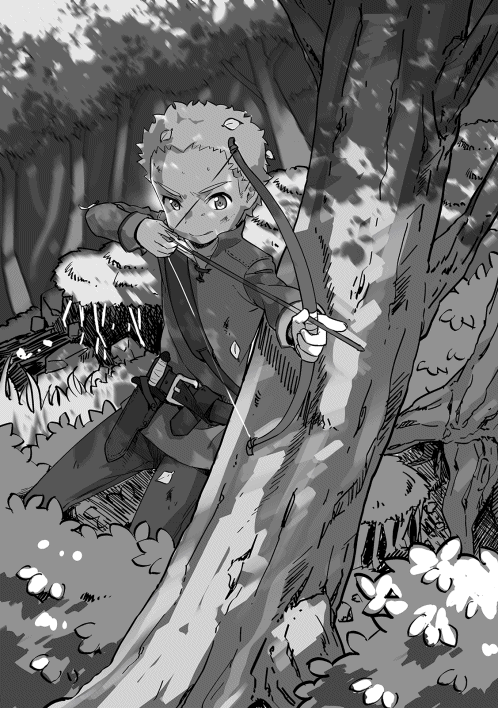
シャロンはリディの個人授業を受け続けている。リディの見立てでは風属性魔法は魔術学院の卒業生並みのレベル、すなわちレベル十五くらいに達しているそうだ。火属性魔法でも見事な攻撃魔法を見せ始め、純粋な攻撃力なら、四人の中では俺に次ぐ威力を持っている。
更にリディに習い始めた剣術も剣術士レベル四、剣術スキルレベル五と着実に上がっている。
外での訓練が多くなったのに、相変わらず抜けるような白い肌はきれいなままで、薄い金髪を肩まで垂らした姿は人形のようだ。
兄のロドリックだが、三ヶ月に一回くらいのペースで手紙が届き、近況を知らせてくれる。
昨年の夏に従士に昇格し、ラズウェル辺境伯領の東部、ポルタ山地の麓の砦に配属されたそうだ。その地は魔物が多く、毎日山に入って魔物を狩っていると手紙に書いてあった。
手紙ではレベルについて書いていなかったが、文章の端々から自信が窺えており、かなり上がっているようだ。
弟たちだが、双子のセオフィラスとセラフィーヌは五歳になり、二人とも剣術の訓練を始めている。魔法の才能についても調べてみたが、残念なことに二人には才能がなかった。
妹のセラフィーヌまで剣術の訓練をやらなくてもいいと思ったのだが、聞いてみるとメルを見てやる気になったそうだ。まだ、始めたばかりなのでどの程度の才能を秘めているか分からないが、兄のことを思えばある程度の才能はあると思う。
一年半前の十月に妹が生まれた。
名前はソフィアと名付けられた元気いっぱいの女の子だ。ぱっちりとした大きな目をしており、将来必ず美人になるだろう。
ソフィアの他にも従士たちの家に子供が生まれており、館ヶ丘は小さい子供の声で満ち溢れている。
ラスモア村の状況だが、堆肥作りの成功と文字を覚えた農民に生産日記をつけさせたことで、生産効率が上がっている。輪栽式農業は続けているが、一部の条件のいい畑では輪栽をやめ、根菜類専用の畑に替えた。有輪式重量犂の導入もあり、館ヶ丘の南の草原でも開墾が始まっている。
幼児死亡率については、五年前の俺が改革を始めようと思った頃は三割以上あったが、今では一割程度にまで低下している。衛生管理の徹底が功を奏したと思いたいが、本当のところは良く分かっていない。
この他にも出産後の産褥 期──出産後二ヶ月くらい──の死亡率が大きく低下している。これは出産時の衛生管理を徹底したことが大きいと考えている。このリスクが減ったことから、ラスモア村ではベビーブームが起こり、年間三十人程度だった出産数が、四十人程度にまで増えている。更に幼児死亡率が低下したことから、ラスモア村の人口はすでに五百五十人を超え、五年前に比べ十パーセントほど増加している。
教育については五歳以下の幼児の数が増えたことから、託児所を兼ねた学校を建設した。
これは従士のニコラス・ガーランドが積極的に父に働きかけたもので、ほとんど彼一人で進めていた。俺は自分の訓練に忙しく、意見を求められた時にアドバイスをした程度しか関与していない。
学校は木造二階建てで、館ヶ丘の西斜面に建てられた。南ヶ丘に住む子供たちにとっては少し不便なのだが、緊急避難場所に使えるから、一番安全な館ヶ丘に設置すべきだと俺が進言した結果だ。未だ農作業の合間にしか授業は行っていないが、農繁期でも託児所代わりに使われており、小さな子供たちが館ヶ丘の草原を駆け回っている姿がよく見られる。
校長はニコラス、教師は彼の妻のケイトと娘のジーン、特別講師としてリディが時々顔を出している。
酒造りは順調だ。
蒸留器は初期の小型の物からすべて大型の物に更新され、更に新たな蒸留所を二つ建てている。
責任者のスコットには五人の専任スタッフが付き、彼の助手だった二人も独立し、新しい蒸留所の責任者となった。今では二年前に比べて二倍以上の生産能力を誇っている。但し、原料の供給が追い付かず、フル稼働には至っていない。
その原料だが、当然ラスモア村だけでは足りず、近隣の村から買い取っている。さすがに麦を多く買い取るわけにはいかないが、ワインとその搾りかすは結構買っている。
今は安定的な麦の供給のため、近隣の村にも農業指導を行っているところだ。
販売については小さめの樽──百リットル強のクォーター樽クラス──で三年寝かせた〝スコッチ〟をカウム王国の王都アルスに向けて出荷しているだけだ。
本当は大型の樽で寝かせるつもりだったが、早期に出荷する必要があり、小さめの樽で早期熟成を狙った結果だ。
樽売りはしたくなかったのだが、アルスに住むドワーフたちから何度も問い合わせというか、懇願があり、仕方なく樽で売っている。
そのおかげなのか、輸送についてはドワーフたちが専門の輸送業者を雇い、村まで取りに来てくれる。このため、輸送のリスクとコストを考慮する必要がない。
更に蔵出し価格で一樽千Ｃ 、日本円で百万円ほどで買い取ってくれるため、大きな収入源になっている。
余談だが、その輸送業者には腕利きの傭兵が二十人ほど護衛についており、ドワーフたちの並々ならない酒への執着心が窺い知れる。
この村に住むドワーフの鍛冶師ベルトラムにそのことを聞いてみると、どうやら鍛冶師たちの間でスコッチがブームになっているようだ。
「アルスじゃ、〝スコッチ〟を飲めるのは一流の鍛冶師の証みてぇになってるそうだ。なんせ、一杯が二十Ｃだからな。エールの五十倍もする高級酒だからな」
ベルトラムの話では、アルスの鍛冶師の間では、スコッチを飲んでいいのは一流の鍛冶師だけという不文律ができつつあるそうだ。確かに高級酒を飲める収入を得ていないと飲めないのだろうが、金の問題というより一種のステータスのようなものらしい。
まあ、一杯といっても、ショット（＝六十ｃｃ）ではなく、ジョッキ（＝ワンパイント＝五百六十八ｃｃ）だから、ボトルキープだと思えば、二十Ｃ＝二万円でもそれほど高くはないのかもしれない。
その話を聞いた時、俺の目指すものとは違うという思いが湧き上がった。そもそもスコッチの飲み方として、ジョッキでガバガバ飲むのはどうかと思っている。作った方としては、じっくり味わって飲んでもらいたい。いつかドワーフたちに飲み方を指導しようかと思っているが、ベルトラムを見る限り無理ではないかとも思っている。
とはいうものの、ラスモア村のスコッチはドワーフ御用達の酒として認知されつつあり、特産品化に成功したと言ってもいいだろう。
食生活についてだが、小麦粉を挽く石臼を改良してもらい、かなり細かい小麦粉ができるようになった。改良と言っても大したことはしていない。水車小屋の責任者に細かく挽いて欲しいと頼んだだけだ。
話を聞いてみると、今までは細かく挽くニーズがなかっただけで、少し手を加えれば細かい粉は簡単にできるとのことだった。細かい小麦粉は保存や運搬が大変なため、需要がなかったそうだ。
その細かい小麦粉でパンを焼いてもらい、良質なパンができ上がった。このパンについてはメイド長のモリーにイメージだけを伝えて作ってもらったので俺の功績ではない。
更に〝燻製〟の手法を村に広めた。
この世界にないわけではないらしいのだが、この村では誰もやり方を知らなかったのだ。燻製のやり方は知識としては持っていたものの、日本ではやったことがなく不安があった。
そこで試しにベーコンっぽいものを作ろうと、狩りの帰りに拾ってきた桜の枝を細かく砕き、大きな木箱の中で塩漬け豚バラ肉を燻してみた。少し温度が高かったようで、思った通りにはいかなかったが、家族の意見を聞いてみようと料理を作って味見をしてもらった。
この〝ベーコンもどき〟を厚くスライスし、茹でたジャガイモの角切りと玉ねぎをフライパンで炒め、〝ジャーマンポテトもどき〟を作ってみたのだ。胡椒がないため味にアクセントがないが、つまみに出したら、これが父や祖父にはかなり受けた。
更に野菜スープの出汁に使ってみると、いい出汁が出ると他の家族からも大好評だった。
父に言われ、燻製のやり方を書いたものを、村唯一の酒場〝黒池 〟亭の主人に渡してみた。これが大好評だったようで、半年も経たないうちに燻製は一気に広がった。
肉だけでなく、黒池 で捕れるマスやイワナにも燻製を施すようになり、今では黒池 亭の名物料理になっている。
養蜂については、蜂の越冬もうまくいき、今では安定的に蜂蜜を手に入れることができるようになった。元猟師のパットという若い男に養蜂を任せたのだが、最初のうちは蜂に刺されるし、蜂蜜はうまく取れないしで、やめたいといつもこぼしていたそうだ。
ニコラスが俺の知識を聞き出し、四年が掛かりで何とか軌道に乗った。
ただ、病気や寄生虫の問題があるので、いつ全滅してもおかしくないと思っている。俺としては村の消費分だけできればいいと考えていたのだが、ニコラスにそのことを話すと彼の意見は違っていた。
「蜂蜜はキルナレックでも需要はありますから、もう少し規模を大きくしたいと思っております。ここは私に任せて頂けないでしょうか」
ニコラスは近くにあるキルナレックの街、すなわち大消費地の動向を絶えずリサーチしていたのだ。俺が昔に言った言葉、「需要 が無ければ、どんなにいい物を作っても売れない。新しいことをやる時には必ず需要 があるか確認すべきだ」と言ったことを覚えていたようだ。結局、養蜂もいつものようにニコラスに任せることになってしまった。
明日、五月二十五日は俺の誕生日だ。
今年は節目といわれる十歳の誕生日に当たる。俺は今日、両親や祖父にある提案をしようと思っていた。そう、この村を出て行くことを。
この村を出て学術都市ドクトゥスにあるティリア魔術学院に入ることを、家族に話そうと思っている。両親や祖父に話す前に、俺が一番大切に思っている女性、リディに俺の決意を話しておく必要があった。
夕食も終わり、いつものように魔法の練習の時間になる。最近は俺の魔法のレベルが上がったことから、魔法の練習というよりおしゃべりの時間といった方が実情にあっているのだが、うら若い女性──実年齢は五十を過ぎている──の部屋に入る口実として、未だに〝練習〟を続けている。
彼女の部屋に入ると、いつものように椅子に腰かけているリディの姿が目に入る。
いつもなら、俺が軽く声を掛けて入っていくのだが、今日は少し緊張気味に部屋の中に入っていった。彼女もいつもと違う俺の様子に気づいたのか、不思議そうな顔で「どうしたの？ 今日はいつもと様子が違うわ」と立ち上がり、心配そうに近づいてきた。
俺は大丈夫だと手で制し、「大事な話がある」と話を切り出していく。
「七月になったらドクトゥスに行こうと思う。魔術学院に入るためだ......」
リディは突然の話に驚き、「魔術学院は十二歳にならないと入れないわよ。まだ、二年も先の話じゃない」と首を横に振る。
「ニコラスに調べてもらったんだが、入学資格に年齢制限はないそうだ。試験に受かれば何歳だろうが入学できる。十二歳というのは慣習のようなものだそうだ」
彼女は信じられないという顔をするが、「学院に入っても学ぶことなんかないわよ。もう、卒業生以上の実力を持っているんだから」と必死に俺を説得しようとした。
「ああ、それは分かっている。だが、少なくとも自分で学ぶことはできるはずだ。確か、世界最大の図書館があるそうじゃないか。学院に入れば自由に入れると聞いた。それならば......」
俺の言葉に更に焦ったのか、「何を学ぶつもりなの？ 私が教えてあげる。私の知っていることをすべて......」と少し取り乱していた。
「俺の苦手なのは、リディの持っていない属性、闇属性と金属性だ。特に闇属性はかなりの可能性を秘めていると思っている。だから......」
彼女は俺の話を途中で遮り、「だからって......私と一緒にいるのは詰まらない？ あなた一人で......」と言うが、そこで何かを思いついたのか、突然明るい表情になった。
「私も一緒に行くわ。この村は好きだけど、あなたと一緒の方がいい。私がここにいなくてはいけない理由もないしね」
何となくそう言うと思っていた。そして問題があった。
「シャロンの修行はどうするつもりなんだ？ 魔法と剣、どちらもリディが教えることになっている。魔法はともかく、剣の方はまだ護身レベルに達していないと思うが？」
彼女は「うっ」と言って、言葉に詰まる。
「それにドクトゥスは人が多くて嫌じゃないのか？ ようやくこの村の人たちにも慣れてきたのに、また見知らぬ人がたくさんいる街に行けるのか？」
俺もリディと離れたくなかった。だが、人見知りというか、対人恐怖症の彼女を大都会であるドクトゥスに連れて行くことに躊躇いも感じていた。
「それなら大丈夫。あなたと一緒なら......ゴーヴィと一緒の時はペリクリトルにだっていれたんだから......問題はシャロンのことよね......」
二人の間に沈黙が流れた。そして、リディが再び何かを思いつき、やや興奮気味に話し始めた。
「分かったわ！ シャロンも一緒に学院に行けばいいのよ。あの子なら絶対に受かる。間違いないわ！」
俺は小さく頭 を振った。
「本人の意向も聞かずに決められる話じゃないだろう。それに授業料のこともある。入試の上位五番以内は入学金が免除されると聞いたが、授業料なんかで年間三千Ｃ （＝三百万円）は掛かるはずだ。それをガイに負担させるわけにはいかないだろう」
俺の言葉にリディが項垂れる。
「分かったわ。シャロンにどうしたいか確認する。入学金や授業料は私が出してもいいわ。だから......」
「シャロンはまだ十歳の子供だ。親から引き離していい歳じゃない。まして女の子だ。そのことをよく考えてから話すんだぞ」
彼女は小さく頷くが、「どうして急に......」と呟いていた。
「前から考えていたんだ。俺がこの先、ここにいていいのかと。もし、ここにいるなら、この村を守れるだけの力を付けなければいけないと......」
この先に起きるであろう〝神の遣わした者〟との邂逅について話していく。
「俺は臆病なんだ。〝神の遣わした者〟が俺の前にいつ現れるのか。そいつと出会った後、どのくらいのタイミングで〝神に敵対する者〟が手を出してくるのか。そう考えると、俺に残された時間がどうしても少なく思えてしまうんだ。ここ二年間、リディやメルたちとの時間を削ってでも、森に入っていったのはそれが理由なんだ。だから、力を付けるためなら何でもやっておきたい......学院も役に立たないと分かったら、さっさとやめるかもしれない。そんなところにシャロンを連れて行くのは......」
リディは俺の言葉にショックを受けているのか、何も話さない。
「今の家族が、この村が好きだ。そして、リディのことも......前の世界の家族や故郷 よりも大切なんだ......その大切なものたちを壊されたくない。そのためなら、俺は神が言うことを無視してもいいとさえ思っている......」
そして、自分の考えをすべて話すことにした。
「今はそう思っているが、相手は神だ。俺の心を弄ることなんか簡単にできるだろう。夢の中で俺の意向を尊重するようなことを言っていたが、それを守るとは限らない......いや、守るだろうが、俺の〝意向〟の方を〝調整〟すればいいだけだと思っているかもしれない。そうなった時、俺は家族やこの村のことを、リディのことを考えられなくなるかもしれない......」
リディは「そんな......」と呟き、目を見開いている。
「そうならないようにするには、神の意向に従うしかない。俺が俺でいるために......だから、強くならないといけない。神が〝よくやった〟と認めてくれる程度の力を付けないといけないんだ......それに、恐らく数年以内に〝神の遣わした者〟に出会うと考えている」
彼女は少し首を傾げ、「どうして分かるの？ もっと先かもしれないじゃない」と、やや強い口調で反論する。
「そうだな。だが、夢の中で聞いた話じゃ〝守り、導いてくれ〟と言われた気がする。相手は俺より五歳年下のはずだ。そうなると、今は五歳だろう。十年経てば十五歳。〝守り、導く〟という条件なら、十年以内に出会うと考える方が自然だ」
彼女は俺を引き止める方法がないのかと必死に考えているようだ。
「......それなら、余計にドクトゥスになんか行っている暇はないんじゃないの？」
「ああ。ここでおじい様に剣の稽古を付けてもらった方が強くなれるかもしれない。だが、俺の最大の武器は魔法だ。魔法の力を上げるためには、どうしてもドクトゥスに行ってみる必要がある。もちろん、ドクトゥスに行っても剣の修行は続けるし、森や山にも入るつもりだ。この辺りより魔物が多いから、いい修行になるだろう」
彼女は静かに「そこまで考えていたのね」と言った後、
「それなら、もっと早く相談して欲しかったわ。ほんとに勝手に決めておいて話したいことがあるって......分かったわ。私も考えてみる。ここであなたを待つか、一緒に行くか。でも、行く前にメルとシャロンにはちゃんと話をしなさい。あなたにとっては子供なんだろうけど、あの子たちもちゃんと考えられる歳になっているの。それに......まあいいわ」
俺はリディが途中でやめた話が気になり、「それに？ 気になるじゃないか」と聞いた。
「あなたは、あの子たちがあなたのことをどう想っているのか知っている？ ずっと好きでいるのよ。こんな小さな頃から......」
彼女は床から一メートルくらいの高さを示す。
「ああ、何となくは分かっていた。だが、それは男女の関係じゃないだろう？ 家族の間の愛情じゃないのか」
リディは呆れたという表情を隠そうともせず、「やっぱり分かっていなかったのね」と首を横に振る。
「あの子たちがあれほどがんばれたのは家族のため？ ゴーヴィの修行なんか五歳の子が耐えられるものじゃないわよ。シャロンもそう。あなたと一緒にいたいから、物凄くがんばって勉強したし、魔法の練習もかなり無理をしていたわ。いくら才能のある子供でも、普通はあそこまでがんばれないわ」
確かにメルとシャロンのがんばりは、幼い子供としては異常だと思っていた。だが、それは俺の常識が元の世界、日本の常識に縛られているからだと考えていた。そして、ザックカルテットのもう一人のメンバー、ダンのことを思い出す。
「じゃ、ダンはどうなんだ？」
「あの子はメルが好きなのよ。メルに振り向いてもらおうと必死にがんばっていたの。本当に素直でいい子たちばかり」
リディに言われるまでもなく、俺も気づいていた。だが、言葉にしたくなかっただけのような気がする。
「本当にそうだな。素直ないい子たちばかりだ。あの子たちの人生を俺の使命とやらで狂わせたくないんだ。だから......」
リディは俺の肩を掴み、首を横に振る。
「だから、あの子たちの考えは無視して一人で行くつもりなの？ もう一度言うわ。あの子たちは十分に自分のことを考えられる歳になっているの。だから、あなたの考えを、あなたの想いを、きちんと話してあげて。あの子たちがどういう判断をするかは分からないわ。でも、あの子たちがきちんと考えたことなら、それを受け止めるのはあなたの義務よ」
俺はリディの言葉に返す言葉を見つけられなかった。
（確かにまだ十歳と十一歳の子供だ。だからと言って三人の想いを無視していいという理由にはならない。明日、きちんと話そう。俺がどういう人間で、何をするためにここに来たのか。そして、これからどう生きていくのか......）
俺はリディの部屋を後にし、自分の部屋に戻っていった。
ベッドに寝転がり、いろいろなことを考えていた。
（俺はこの先、どうしたいんだ？ 神の言うことを聞き、〝神の遣わした者〟を助けるのはいい。だが、それをどうやって成し遂げる？ この村が危険に晒されるのは絶対に嫌だ。家族やメルたちに危険が及ぶのも......ここにいれば、じい様や父上たちは俺を守ろうとするだろう。だが、それでいいのか？ 俺にはもったいない家族だ。その家族を危険な目に遭わせるのは......）
そして、三歳の時のお告げのことを思い出していた。
（こう考えると神様も面倒なことを押し付けてくれたものだ。あまり覚えていないが、生きたいように生きれば、おのずと神の目的に適うと言っていた気がする。だが、今の俺は生きたいように生きていない気がするんだが......確かに俺が望んで強くなろうとしているし、家族に迷惑を掛けないように出て行こうとも考えている。だが、これは俺が生きたいように生きている結果じゃない。まあ、旅に出るのもいいとは思っているけど、旅というより修業に近い......修業か......）
そこで俺はあることに気づいた。
（修業と考えるなら、俺の望んでいたことと合致するかもしれないな。俺は元々自分の能力を上げたいと潜在意識で考えていたはずだ。そう、自分の願望として、ＴＲＰＧ（テーブルトークロールプレイングゲーム）の設定を選んだくらいだからな。そう考えれば、今の俺の状況は望んでいる通りなのかもしれない。もの凄く狡猾に仕組まれた罠とも言えなくはないが......）
そして、不謹慎だが、ある考えが浮かんでいた。
（ＴＲＰＧと考えるなら、今回のことは最初のキャンペーンシナリオだと考えられるな。ならば、これをクリアすれば新たな冒険に出られる。クリア条件が良く分からないところが欠点だが、そう割り切って考えた方がいい結果を生むかもしれない。神に対しても、家族に対しても不謹慎だとは思うが、そう考えないとやっていられない......俺が納得する形がシナリオクリアなら、やれるだけやるべきだろう......）
こうして、俺は旅立ちについて自分の中で決着をつけた。
トリア歴三〇一二年五月二十五日。
俺の十歳の誕生日になった。
俺の誕生日の祝いの準備で、朝から屋敷の中がバタバタとしている。俺は次男で嫡男ではないが、騎士階級以上の家では十歳の誕生日を盛大に祝う。
農家や商家では十歳になれば、一人前同様に働くことが普通だ。騎士の家でも〝普通〟は十歳から本格的な武術の修行が始まり、十二歳で騎士団に入ることが多い。だから、大人と子供の分岐点、つまり節目と考えられている。
今日はいつものような麻の安っぽい服ではなく、綿で作られた騎士服のような立派な服を着せられている。自分の姿が見えないので、どういう感じになっているのか分からないが、少なくとも猟師紛いの野生児には見えないはずだ。
リディが俺の姿を見て、「結構似合っているわよ」と言ってくれたが、すぐにクスクスと笑い出したので、本当に似合っているのかと疑っている。ザックカルテットの面々も褒めてくれるが、猟師のロブからもらった毛皮のベスト──山賊が着ていそうなワイルドな物──でも格好いいと褒めてくれる子たちなので、あまり当てにならない。
四年前の兄の十歳の誕生日と同じように、村の代表者であるゴードンから祝辞があったり、ボグウッドの街から派遣されてきた神官の祝福があったりと午前中は息つく暇もなかった。
昼食を挟んで、個人的な知り合いがポツポツとやってくるようになる。
猟師のロブたちは見事な猪を丸々一頭、蒸留所の責任者のスコットは、特別に度数を上げた〝スコッチ〟と〝マール──ワインの搾りかすから蒸留した酒──〟を三樽ずつ、木工職人のクレイグは美しく磨き上げた机をプレゼントしてくれた。
ドワーフの鍛冶師のベルトラムは造りかけの剣を手に持ち、「こいつはアルスの特殊な鋼で打っている剣だ。最終調整をするから、明日にでも工房に来い」と、自ら剣を打ってくれることを約束してくれた。
更に従士たち全員から、森に入るのに役に立つからと、様々な小物──丈夫なマントや背嚢 、投擲剣を挟むこともできるベルトなど──をプレゼントされる。
ダンは自分で仕留めたウサギで作った小物入れを、メルとシャロンは恥ずかしそうな顔をしながら、一緒に作った焼き菓子を渡してくれた。
双子の弟と妹、セオフィラスとセラフィーヌは庭で採ってきた花で作った花束をくれた。
夕食は猪のソテーがメインディッシュとなり、食後にはメルとシャロンが焼いた菓子を食べた。最近、砂糖を買うようになったので、かなりうまくできたパウンドケーキのような焼き菓子だった。
その夜、祖父の部屋で家族からの祝いを受けた。
祖父が革袋を引き出しから取り出し、「ここに白金貨が二十枚が入っておる。お前の好きなように使うといい」とずっしりと重い革袋を俺の目の前に置いた。
白金貨二十枚、二万Ｃ 、つまり二千万円ほどの現金を俺に渡してきたのだ。不思議そうな顔をしていると、父が話し始めた。
「武具を贈っても良かったのだが、剣はベルトラムが贈るだろうと考えたのだ。それに、お前は魔術学院に行くつもりなのだろう？ それだけあれば入学金も授業料も出よう。もし行かずともそれだけの金があれば、お前の好きなことができる」
そこまで言った後、父はくすりと笑い、「まあ、元々お前が儲けた金だがな」と付け加えた。
石鹸製法の売却益の一部をとっておいてくれたようだ。そして、母が笑いながら、父の言葉に続けた。
「本当に困ったのよ。あなたの場合、贈れそうな物は他の人たちが持ってくるから......ふふふ、十歳の誕生日にお金っていうのもおかしいけど、あなたにはその方がいいだろうって、お義父様とマットと話し合って決めたの」
そして、祖父がなぜ知っているかの種明かしをしてくれた。
「それにニコラスに魔術学院のことを調べさせておったじゃろう。ならば、これを渡せば心置きなく学院に行けるじゃろうとな」
祖父たちは俺が学院について調べていることを知り、背中を押そうと考えたのだ。
「ありがとうございます。この後、話をしようと思ったのですが、この場でお話しします。七月にある入学試験を受けようと思います......」
昨日、俺がリディに話したことを両親と祖父に話していく。
話を聞き終わった祖父が、「......お前の覚悟は分かった。我らはお前の家族。いつでも頼るんじゃぞ。分かったな？」と俺の目を見つめる。
「分かりました。ですが、やれるところまでがんばってみます。これでもロックハート家の男ですから」
そう言って大きく頭を下げた。
その後、リディの部屋に向かった。
「父上たちは俺が魔術学院に行くことを感付いていたよ。誕生日プレゼントが授業料だった」
リディはくすっと笑い、「ゴーヴィたちらしいわね。で、出発はいつにするの？」と軽い調子で聞いてきた。
「七月の下旬に試験があるはずだから、七月に入ったら出発する。恐らく、父上か従士の誰かが付き添ってくれるから、半月あれば十分に着ける」
リディは少し遠い目をしながら、「そう、あと一ヶ月ちょっとなのね。分かったわ。私の方もそれまでに決める」と言った。
これで話が終わったと、部屋を出て行こうとすると、「まだ、プレゼントを渡していないわ」と呼び止める。
俺は首に下げた指輪を取り出し、「五年前にこれをもらっている。これで十分だよ」と笑うが、リディの顔はいつになく真剣な表情だった。
「もし私が死んだら、私の魔晶石をあげるわ。その予約がプレゼントよ」
俺は言葉を失い、立ち尽くした。その間にもリディは言葉を続けていた。
「私はあなたを守るわ。あなたの盾になってもね。それで死んでしまったら......私の魔晶石をもらって欲しいの。あなたとずっと一緒にいたいから......」
俺はその言葉に「不吉なことは言わないでくれ！」と激しく叫んでいた。
「そういうのを俺がいた世界じゃ、〝死亡フラグ〟って言うんだ！......頼むから......俺の盾になって死ぬなんて言わないでくれ......」
そう言いながらも、俺には彼女の想いが分かっていた。だから、俺も覚悟を決めた。
「分かった......お返しに俺が先に死んだら、俺の魔晶石をプレゼントするよ」
リディは目を大きく見開き、「今言った言葉の意味が分かっているの？」と震えるように呟く。
「ああ、分かっているつもりだ。プロポーズの言葉なんだろう？ 死んだら互いの魔晶石を同じ墓に入れる。死んでも一緒にいようっていう意味なんだろう」
リディの見開いた目から涙が零れ落ちる。
「私はエルフよ。あなたの子供は生めない。多分、無理......」
この世界にはハーフエルフなどの混血は存在しない。異種族間でも極稀に、百年に一回あるかないかといった程度だが、子供ができることがある。だが、それはどちらかの種族として生まれることになる。
「構わない。俺はこの世界にとっては異分子だ。普通に結婚しても子供ができるのか分からないし、そもそも、そんな余裕があるかすら分からない」
俺はリディに近づき、それ以上何も言わずに抱き締めた。その夜、俺は自分の部屋に戻らなかった。
翌朝、俺はベルトラムの工房に向かった。
「よく来たな。お前さんに聞いた〝日本刀〟って奴の作り方で打ってある」
俺は蒸留器作りが一段落ついた頃、ベルトラムに日本刀の作り方を説明していた。
俺が作り方を説明してから三年ほど経つが、試作品ができたことを確認しただけで、あまり気にしていなかった。
「炭は木炭を使ったし、お前さんが言っていた〝芯鉄 〟を入れて〝造り込み〟をして......」
彼の手にある剣はちょうど〝素延べ〟を終えた段階のものだった。
この世界では両刃の〝剣〟の方が一般的なので、〝本三枚〟の変形版で両方に〝刃鉄 〟を入れた作り方をしているそうだ。
素材にしたアルスの鋼はドワーフが多く住むカウム王国で、金属性魔法によって精錬された高品位の鋼だ。ミスリルなどの特殊素材ほどではないが、高品質な分、当然高価な素材であり、一振りの剣を作る材料だけでも数千Ｃ 、数百万円は掛かるはずだ。
更に日本刀の作り方で剣を鍛えると折り返し鍛錬の結果、不純物がなくなり、一般的な鍛造の剣に比べても鋼の使用量は多くなる。恐らく、この素材だけで一万Ｃはしているはずだ。
俺がそのことを言うと、
「この鋼はスコッチの代金だ。俺がスコッチの考案者に剣を贈るって手紙に書いたら、アルスの職人たちが送ってくれたんだ。だから気にするな」
さすがはドワーフと思ったが、それでも受け取りづらい。
俺が渋っていると、「うまい酒をもっと作ってやればいい。金よりその方が喜ぶ」と言って俺の背中をバシンと叩く。
酒を飲むことに気合を入れているドワーフたちの姿を想像し、思わず苦笑してしまった。
「ありがたく受け取らせてもらうよ。礼は五年待ってくれ。五年後には十年物のスコッチができる。そいつをみんなに贈らせてもらうよ」
ベルトラムは「そりゃいい。アルスの連中にも言っておくぞ」と相好を崩す。
酒の話から剣の話になった。
「お前さんの要望を聞かせてくれ」
俺は大振りのバスタードソードを注文した。
今の俺ではバスタードソード──片手半剣──というより、両手用の大型剣のようになるが、これからの成長に期待してかなり大きなものにしてもらった。
「七月に入ったら村を出るんだが、間に合うかな？」
唐突な俺の言葉に「村を出る？ どこに行くんだ？ 騎士団にでも入るのか？」と首を傾げる。
「ドクトゥスの魔術学院に入るんだ。七月下旬に試験があるから、七月に入ったくらいには出発しないといけない」
ベルトラムは「そうか......」と呟き、
俺は「無理を言ってすまない」と言って頭を下げ、彼の工房をあとにした。
館ヶ丘に戻り、メルたちに話をすることにした。
「......ということで、俺は七月にこの村を出る。夏休みには帰ってくるが、五年間は向こうにいるはずだ」
俺が話し終わると、メルとシャロンの目に涙が浮んでいた。そして、堰 を切ったように二人は泣き崩れ、メルが「ザック様......行かないで......」と縋 りついてくる。
シャロンは言葉にならないのか、ただ俺の手を掴んで泣いている。
ダンだけは比較的冷静で、「もう少し大きくなってからでも......」と言ってきた。
「確かにここは楽しいし、離れるのは俺も嫌だ。だが、俺は魔法を極めたいんだ。ここではそれは無理なんだ」
二人の少女が泣き止むまで待ち、落ち着いたところで再び話し始める。
「気づいているかもしれないけど、俺は普通の子供とは違う。前世の記憶、まあ、生まれる前の記憶だな、それを持っている。もう一つ違うことがある。俺は神にあることを頼まれた......」
俺は転生のこと、神に遣わされた者を守ることなどを話していく。
十歳、十一歳の子供には難しいと思ったが、三人とも何とか理解してくれている。
「......だから、俺は強くならないといけない。そのためにドクトゥスに行く。それに俺の使命はずっと続くものじゃないはずだ。すべてが終わったら、みんなで楽しく暮らそう。村にいてもいいし、若いうちはペリクリトル辺りで冒険者をやってもいいし、世界中を回ってもいい。だから、みんなもそれに向かって訓練に励んでくれ」
三人は俺の言葉に頷き、何とか納得してくれたようだ。
特にメルはかなり気合が入ったようで、涙を拭いて立ち上がり、
「私はもっと強くなる。先代様に鍛えて頂いて、ザック様の横に立てるように......誰にも負けない剣術士になる！」
それに感化されたのか、ダンも宣言するように
「僕も父上のような立派な戦士になる！」
シャロンはどうしようかと悩みながら、小さな声で、だが、しっかりとした口調で宣言する。
「私は少しでもザック様のお役に立ちたい......もっと、勉強をする！」
俺は三人の気持ちが嬉しかった。
子供だと思っていたが、しっかりとした考えができる歳になっていたようだ。
「ありがとう。俺たちはまた一緒になる。少しの間、五年間だけ待ってくれ。みんなに負けないように強くなってくるから......」
俺は三人とこれからのことを話し合った後、一人になるため、木剣を持って屋敷の庭に向かった。
俺は木剣を振りながら、自分の目標とすべきレベルについて考えていた。
（魔法は少なくとも今の倍以上のレベル、レベル五十を目指す。今のところ、毎日魔力切れギリギリまで魔法を使っているから、確実にレベルが上がっている。だが、今の上がり方だとレベル五十にするのはかなり厳しい。成長システムがよく分かっていないから何とも言えないが、ＲＰＧ的に考えれば戦闘での経験値がレベルアップに繋がると考えてもいいだろう。ならば、魔術学院で勉強しながら、魔物狩りに行けばレベルアップは早いはずだ......）
そして、その他の技術についても考えを進めていく。
（剣術はじい様がいないから、自主トレになる。どの程度の効果があるかは分からないが、今まで通り朝と夕方に訓練を続けるしかない。魔法も剣もというと、虻 蜂取らずになるかもしれない。魔法に特化すべきだろうか......いや、俺には魔闘術がある。これをどうするかだな。時間の都合と訓練場所次第か......あとは隠密と気配察知だ。この二つの訓練はドクトゥスでは難しいだろうな。やはり森や山に積極的に入るしかない。あの辺りはどのくらい危険なんだろう......）
俺が剣を振っていると、祖父がやってきた。
「迷いがあるな。何を考えておる？」
俺は剣を振る手を止め、
「自分の目指すべき姿を考えていました。剣と魔法、斥候系の技術、それらをどう鍛えていくべきかと」
「お前に足らぬのは経験じゃ。場数を踏めばすぐに強くなる。だが、一人では危険じゃ。お前ほどの才能があっても、森や山は一人で入るべきではない。特にドクトゥスの北にあるサエウム山脈は危険じゃ......」
祖父は自分の経験を基に、俺が無茶をするのではないかと案じてくれているようだ。
だが、俺は多少の無茶は承知の上で魔物を狩ろうと思っている。今のところ、仲間はいない。リディがどう決着を付けるかは分からないが、一人でやっていくと考えた方がいい。
「多少の無理は承知の上で何とかやってみます。焦っているわけではありませんが、ここでやらずに後で悔やむのは嫌ですから」
祖父は「そうか」と呟くように言って、その場を離れていった。
その夜、リディが俺の部屋にやってきた。
「さっき、ガイの家に行ってきたわ。シャロンのことを話し合ってきたの......」
俺は黙って頷き、先を促す。
「シャロンはあなたと行きたがっている。ガイはお金のことで無理と言ってきたわ。私が出すと言っても首を縦に振らなかった......」
やはり入学金の一万Ｃ と年間三千Ｃの費用がネックのようだ。ガイは祖父の食客であるリディに金を借りることに抵抗があり、どうしても了承しなかったそうだ。
「あなたの知恵を借りに来たの。シャロンは家出をしてでも付いていくってかなり食い下がっていたわ。このままだとガイとシャロンの関係がおかしくなるの」
シャロンは昼に俺が話をして一旦心の整理をつけたのだが、リディの話で俺と一緒にいられる可能性があり、再び心が揺れたようだ。
確かにシャロンは意外と強情で簡単には考えを曲げない。ガイも祖父との関係を考えると折れることはないだろう。「そうだな」と言って、少しだけ考えてから、
「......こうしたらどうだ？ まず、受験で入学金が免除になる五番以内に入ることを条件にする。そして、その条件がクリアできたら、リディか俺が〝シャロン〟本人に金を貸す。入試で五番以内に入れば、それだけの才能があることになるから、学院に入る理由になる。それにシャロン個人に俺たちが金を貸すんだから、ガイが反対する理由にはならない」
リディは「そうね。シャロンに話してくる」と言って、外に飛び出そうとする。
俺は彼女を呼びとめ、
「シャロンが受験に失敗したら、リディもこの村に残るんだからな。それにシャロンを追い詰めるなよ。ガイのプライドも考えて......」
彼女は俺の言葉を遮り、
「分かっているわ。あの子もあなたと一緒にいるためなら、追い詰めなくてもがんばるはず。ガイも可愛い娘のことを考えて、諦めさせようとしているだけだと思うの。だから大丈夫よ」
そして、部屋を出ようと歩き出すが、何かを思い出したかのように振り返る。
「それより、メルのことを考えておきなさい。シャロンが付いていけて、自分がいけないのはショックだと思うから」
俺は「ああ、そうだな。考えておくよ」と頷いた。
そして、リディは再びガイの家に行った。
三十分ほどすると、彼女からガイの説得に成功したと聞かされる。
「シャロンもやる気になっているわ。あなたがいなければ首席で合格できるほどの実力よ。これであなたと一緒にいられる」
俺はシャロンの学力や魔法の能力は疑っていなかった。だが、受験というのはそれだけじゃないということも知っている。
「力が十分に出せれば、そうだろうな。だが、この村から出たことがないシャロンにとって、数百人が一緒に受ける試験というのはかなり厳しいと思うぞ。あまり楽観的に考えない方がいい」
俺がそう言っても「大丈夫よ」と自信満々の笑顔で答えてくる。俺は一抹の不安を覚えながら、明日シャロンとそのことを話さなければと考えていた。
翌日、朝の訓練の後、シャロンと話をするが、受験については全く心配していなかった。不安がらせるのもかわいそうだと思ったが、数百人が受ける受験というものについて、話を聞かせていく。
「試験を受けるというのは緊張するものなんだ。だから、普段通りの力が出ると思わない方がいい。リディの言っていることはかなり楽観的なんだ。だから、もし駄目でも......」
普段は俺の言葉を遮ることはないが、自信に満ちた顔で俺の言葉を遮り、
「大丈夫です。緊張するかもしれませんけど、絶対に負けませんから。リディアさんにも言われました。ザック様と一緒にいたいなら、死ぬ気でがんばりなさいと。〝たかが試験よ。戦いではないのだから、殺されることはないわ。だから、そんなものに負けてはいけない〟って......」
シャロンもこの二年間で何度か実戦を経験している。
接近戦こそ経験していないが、命の危険を身をもって知っている。だから、試験程度の勝負で緊張することはないと言い切ったのだ。
（確かに殺されることはないが、試験っていうのは緊張するものなんだが......情報がないから、分かっていないのかもしれないが、シャロンがこんなに強く言うなら大丈夫なのかもしれないな......）
そして、メルにシャロンが魔術学院を受験することを話した。
俺は話の途中で彼女が取り乱すのではないかと思っていた。だが、シャロンが一緒に行くと聞いても唇を噛むことはあるが、取り乱すことなく静かに俺の話を聞いている。
「悔しいですけど、私が一緒に行くことは無理ですから。それに先代様に剣を教えて頂く方が強くなれます。だから私はここでがんばります」
俺はシャロンにも驚いたが、メルが一気に大人になったような気がして言葉を失ってしまった。
「そうか......分かった。俺もメルに負けないようにがんばるよ」
俺はそれだけ言うと、彼女のもとから立ち去った。
六月三十日
夏至祭の前日だが、俺は明後日の出発に向け、準備に忙しかった。
ベルトラムが鍛えていたバスタードソードも無事完成し、背中に背負えるように調整してある。
ベルトラムの他にも蒸留所の責任者のスコット、猟師のロブらに別れの挨拶を済ませ、夏至祭の翌日、七月二日に約三百七十キロメートル離れた学術都市ドクトゥスに向けて出発する。
俺と一緒にドクトゥスに向かうのはリディ、シャロン、そして、シャロンの父ガイだ。ガイには護衛と案内を頼んでいるが、もし俺やシャロンが試験に落ちた場合は帰りの護衛もすることになる。
七月一日になった。夏至祭の音楽が館ヶ丘にも流れてくる中、出発準備を終えた俺はのんびりと丘の南斜面に座っていた。
すると、誰かが近づいてくる足音が聞こえてきた。
俺の姿を見つけたメルとシャロンがやってきたようだ。二人は俺の横に座り、しばらく何も言わなかった。
去年までは祭会場を走り回っていた俺たちだったが、今日は館ヶ丘でのんびりとした時間を過ごしている。
定位置である俺の右隣に座ったメルが、静かに口を開いた。
「明日は出発ですね」
俺は伸びをするように草の上に寝転がり、「そうだな」と呟くように答える。
「来年の夏までお別れですね。いつ頃戻ってくるんですか？」
「夏休みは七月から二ヶ月だそうだ。早くても七月の中旬頃だろうな。まあ、試験に落ちて来月の上旬に帰ってくるかもしれないがな」
俺が冗談めかしてそう言うと、メルが強い口調で、「ザック様には強くなってもらわないといけないんです！ 絶対に合格してください！ これはシャロンも同じよ」と言った。
彼女の声に驚き、半身を起こして彼女に顔を向ける。俺を見つめるメルの目には強い意志が宿っていた。
「そうだな。俺には強くならなければならない理由があるんだ。絶対に合格してみせるよ」
メルはそれに小さく頷き、半身を起こした状態の俺に覆い被さってきた。
「おまじないです」
恥ずかしそうにそう言って、口付けをするため、顔を近づけてくる。
突然のことに目を白黒させていたが、俺の顔にメルの涙が落ちてきたことに気づき、彼女を受け入れるように強く抱き締め、唇を合わせた。
横にいるシャロンがどうしているのか気になったが、メルとシャロンの間で話が付いていたのか、何も言ってこない。それにいつも一緒にいるダンがいないところを見ると、彼も一枚噛んでいるのだろう。
鼻をすすりながら、「やっぱり寂しいです......一緒にいたいです......」と言う彼女をもう一度抱き締める。
「五年なんてあっという間だ。また、みんなで一緒に楽しく暮らそう......」
そして、静かな時間が流れていく。俺たちは何もせず、三人で空を見上げていた。
澄んだ蒼い空を見上げながら、「俺たちの少年時代が今、終わったのだ」という想いが浮かぶ。そして胸に微かな痛みを感じた。
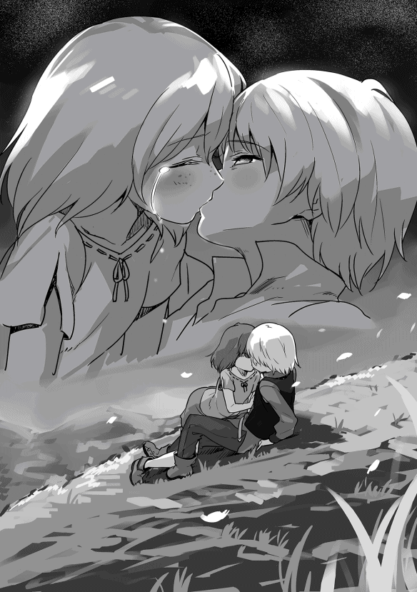
今日は七月一日、夏至祭の日。
日も暮れてみんな家に戻っていく時間。祭の余韻があるからみんな楽しそうに歩いているはず。でも、私は全然楽しくない。
そう、明日には私の大好きなザック様が旅立ってしまうから。
あの方を好きになったのがいつからかは分からない。でも、もの心ついた時にはもう大好きになっていたわ。
どうして好きなのかは分からないけど......そう、あの方は何でもできるし、何でも知っている。それにかっこいいし......今ではどうして何でもできるのか理由を知っているけど、知らなくても変わらなかったと思うわ。
先代様に剣術を習い始めた頃、五歳の頃から私は決めていた。
あの方のお嫁さんになりたい。そのためには何でもがんばろうって。
剣術はがんばれば、がんばっただけうまくなれた。魔法は何度やってもだめだったけど、それでも剣術があるから気にしなかった。ううん、最初は気にしたかもしれない。だって、シャロンが魔法を使えるって分かったから。
剣術がうまくなれば、あの方と一緒にいられるとがんばったわ。でも、結局、一緒にいられなかった。
ザック様には魔術学院でがんばって欲しいと言ったけど、本当は試験に落ちて戻ってきて欲しかった。そんなことは絶対に起こらないけど......それでも一緒にいたかった。
シャロンが一緒に行くと聞いた時、涙が零れてしまった。どうして、私は一緒に行けないのかって。
でも、ザック様のお誕生日に聞いた話を思い出して考え直した。
私は強くなる。あの方の横に立つために、どんなことでもやるって、覚悟を決めた。
先代様に稽古を付けてもらえば強くなれる。どんなに苦しくても我慢してみせる。そう心に誓ったの。
昨日の夜、シャロンが私の家にやってきた。
この子も私と同じようにザック様のことが大好きなんだけど、私と違って一緒にドクトゥスに行ける。そのことを知ってから、少しだけこの子と距離ができてしまった。原因は私にあるんだけど、どうしようもできない。
シャロンは伏し目がちに「ちょっといい」と言い、家の外に連れ出した。
外は満天の星空で涼しい風が吹いていた。
シャロンは家の横にあるクルミの木の下で止まると、ゆっくりと振り向いた。
「メルちゃんに話があるの」
そう言うと少しだけためらってから話を続けていく。
「メルちゃんもザック様のことが好きだけど、私も好きなの。もちろん、知っていると思うけど......」
もちろん知っているから「うん」と返事をする。
「でも、私は一緒にいられるけど、メルちゃんは一年くらい会えない。だから、明日はザック様にメルちゃんの想いを伝えた方がいいと思うの......」
顔が真っ赤になっていく。でも、私は声を出すことができなかった。
「明日はゆっくりできるから、お話しする機会はいっぱいあるはず。だからメルちゃんがザック様に......」
月明かりで分からないけど、シャロンも顔が真っ赤になっていると思う。私たちの間でこんな話をしたことがなかったから。いつも話していたのは、明日はみんなで森に行くから何を持っていったらいいかなとか、ザック様がお好きなおかずは何かなといった話だけだったから。
「ここでメルちゃんの想いを伝えないと後悔すると思うの。だから......」
シャロンは昔から頭がいい。私より年下だけど、いつもシャロンの言うことを聞いた方がいい結果になっていた。でも、今日は素直になれなかった。
「私がザック様に、こ、告白しても、あの方は私に振り向いてくれないわ。だって、リディアさんがいるから」
リディアさんは本当にきれいな人だし、ザック様のことを本当に愛している。好きということなら負けないけど、リディアさんはザック様を守ることができる。でも、私はあの方を守ることができない。ううん、いつも守られてばかり。
「でも、今言っておかないと本当に後悔すると思うの。それに私たちはまだ子供だけど、大きくなれば振り向いてくれるかもしれないわ。だから、きちんと伝えた方がいいと思うの」
いつもなら、すぐに引いてしまうのに、今日のシャロンは引かなかった。
「なら、シャロンもザック様に気持ちを伝えるの？」
そう聞くと、「ううん」と答え、「私はまだ言わない。もっと役に立てるようになってから言うつもり」としっかりとした口調で答えてきた。
「それなら私も同じよ。まだ全然あの方の横にいられるほど強くないわ。もっと強くならないと......」
「私が言わないのは一緒にいられるから。でも、メルちゃんは一緒にいられないの......」
この子は私が一年間悶々とすると思っているみたい。確かにそうかもしれないけど。
「そうね。考えてみるわ。私も後悔したくないから」
シャロンは大きく頷いていた。
その後、シャロンと久しぶりにおしゃべりをした。そう、いろんなことを話したわ。何となく、昔の何も考えていなかった子供の頃に戻れた気がする。
シャロンが家に帰り、一人になるとやっぱり悲しさが込み上げてきた。
結局、一晩中泣いていたわ。お父さんもお母さんも兄さんも気づかないふりをしてくれたけど、目が真っ赤になっていたはず。
顔を洗って何とか目の腫れは引いたけど、多分酷い顔だと思う。
そして、夏至祭の日。
いつもの年なら、みんなと一緒に祭の会場を駆け回り、楽しい一日なんだけど、今日は軽やかな音楽が流れてきても何も感じない。
ザック様が丘の斜面に座っていた。この場所にいることはリディアさんから聞いていたから、すぐに分かった。その時のリディアさんは優しい目で私のことを見ていた。多分、私が何をするつもりなのか分かっているんだと思う。
今日はシャロンと二人だけ。ダンはシャロンが何か言ったみたいでついてきていない。
ザック様と少しお話をした。
話すうちに段々寂しさが込み上げてくる。ザック様が抱き締めてくださり、キスをしてくれた。でも、いなくなるって気持ちの方が強くて涙が止まらなかった。
三人で空を見上げると、青い空がきれいだった。
昔もよく空を見上げていた気がする。ザック様が空を見るのが好きだったから。でも、こんなこともできなくなる。明日からは。
私は空を見ながら、強く心に誓った。
〝この場所は誰にも譲らない〟
そのためなら、どんなことでもやり遂げてみせる。たとえ命を落とすことになっても。
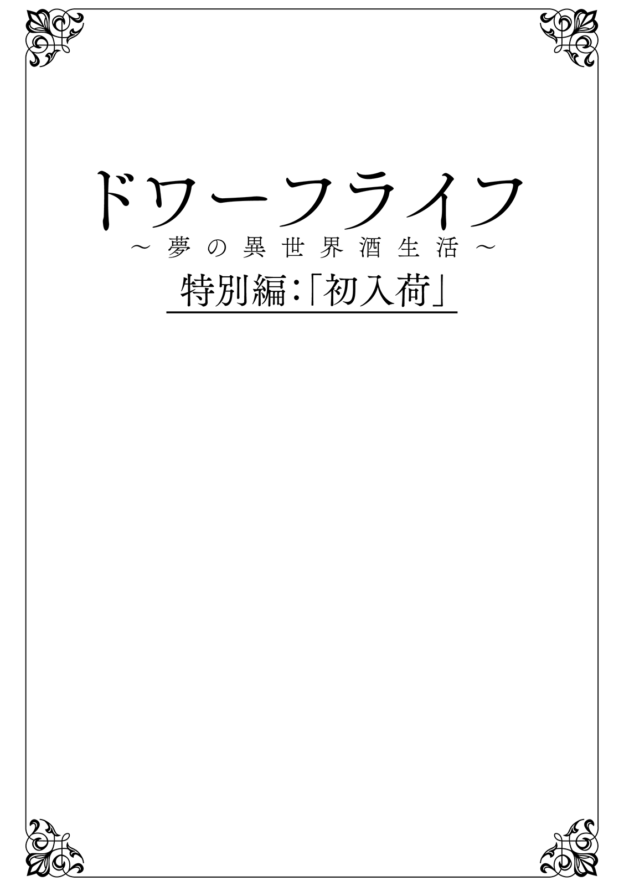
トリア歴三〇〇九年十月のある日の午後。
十月一日の収穫祭が終わり、カウム王国の王都アルスは爽やかな秋の風が吹き抜け、一年で最も過ごしやすい季節を迎えていた。
しかし、アルスの大門前だけは異様な雰囲気に包まれ、爽やかさとは無縁の様相を呈している。そこには、数十人の厳 つい体つきの男たち、すなわち、ドワーフの鍛冶師たちが獲物を狙う飢えた狼のように目をギラつかせ、門の内側から外を見つめていた。
その異様な光景に、街の人々は一様に驚愕の表情を浮かべ、何が起こっているのかとささやきあっていた。しかし、誰もその理由を知らず、首を横に振るしかなかった。
午後三時を過ぎた頃、一組の商隊が大門の前に到着した。その商隊の荷馬車には防水布が掛けられ積荷が何であるのか全く分からない。
入市の手続きのため行列に並ぶが、門の内側にいるドワーフたちの視線はその中の一台の荷馬車に釘付けになっていた。誰一人、口を開かないが、数十人の息遣いが門の外にまで聞こえていた。
門で手続きを行っている役人たちはその不気味な息遣いに、自分たちに危険が及ばないかと何度も振り返る。列に並ぶ商人たちもあの中を通るのかと暗 澹 たる表情を浮かべていた。
そして、ドワーフたちの注目を一身に受けた荷馬車が手続きを終え、ゆっくりと門をくぐっていく。
先頭の荷馬車には四十代半ばと思われる商人が乗り、若い御者が馬を操っていた。その商人はアルスに店舗を構えるウィルソンといい、鍛冶師ギルドの依頼を受け、ある物を輸送していたのだ。
ウィルソンは額に浮かぶ脂汗を布で拭きながら、居並ぶドワーフたちに頭を下げる。すると、一人のベテラン鍛冶師らしいドワーフが「遅かったな」とドスの利いた声で言った。ウィルソンは一応頭を下げ、「すみませんね」と謝罪するが、すぐに「一応契約通りなんですよ。期限は明日までだったはずですから」と愛想笑いを浮かべて反論した。
そのドワーフは「それはすまんかったな。ただ昨日には着くものだと思っておったのでな」と素直に謝るが、その視線は荷馬車の荷台に釘付けになったままだった。
若い御者は数十人のドワーフに囲まれ、この異様な雰囲気に飲まれてしまった。緊張のあまり手綱を持つ手が震えていた。
「旦那、こんな話は聞いていませんよ。どうしたらいいんですか」
ウィルソンは御者の泣き言を聞き流し、後続の荷馬車に向かって「店に向かえ」と指示を与える。そして、震える御者に対しては、「落ち着け！ ここで荷馬車の操作を誤ったらそれこそ命にかかわるぞ！」と叱責する。
落ち着けと言ったウィルソンも、この異様な光景に冷静さを失っていた。完全に怯えている御者に対して、無駄なプレッシャーを与えたことがその証拠だ。普段の彼なら決してしなかったであろう。
御者は「そ、そんな......」と泣きそうな顔でウィルソンを見るが、どうしようもないと諦める。御者の動揺が伝わったのか、それともドワーフたちの発する異様な雰囲気に怯えたのか、馬車馬も落ち着きをなくし、ブルブルと何度も鼻を鳴らしていた。御者は手綱を使って馬を何とか落ち着かせると、操作を誤らないよう、初めて馬車を扱った時のように慎重に荷馬車を操る。
荷馬車はゆっくりとしたペースで目的地である鍛冶師ギルド総本部に向かった。その後ろには異様に目を輝かせた数十人のドワーフたち。その先頭にはアルスの住民なら知らぬ者はいない鍛冶師ギルドの匠合長 、名工ゲールノート・グレイヴァーがいた。更にウルリッヒ・ドレクスラーやオイゲン・ハウザー、ゲオルグ・シュトック、ヨハン・ヴィルトら名高い鍛冶師たちが続いている。
ウィルソンはなぜこうなったのかと頭を抱えそうになったが、今は一刻も早くこの荷物を引き渡すべきだとそれだけを考えることにした。
荷馬車は鍛冶師ギルド総本部の通用口の前に無事到着した。
鍛冶師ギルドにも匠合長を始め、親方クラスの鍛冶師たちが大門前に集まっているという情報が届いており、主だった職員たちが対応を検討していた。しかし、何が起こっているのか誰も把握できず、情報収集に派遣された職員が「何があるのでしょうか」と鍛冶師たちに確認してみるが、「今日は仕事ができん」としか答えてもらえなかった。
職員たちが手を拱 いているうちに鍛冶師たちが戻ってきた。一台の荷馬車に先導されて。その荷馬車を見た瞬間、職員たちは〝酒〟が原因であることに気づいたが、ドワーフたちがそれほどまでに執着する理由が分からなかった。今まで何度か銘酒といわれる酒が贈られたことはあったが、このようなことは一度もなかったからだ。
ウィルソンは出てきた職員を捕まえ、「荷物を引き渡す。受け取ってくれ」とやけくそ気味に言いながら、荷馬車に掛けられた防水布を乱暴に引き剥がした。
布が取り除かれると、荷台の上には小型の樽が二つ鎮座していた。
その瞬間、ドワーフたちから〝オゥ！〟という歓喜の声が上がった。それは咆哮といっても差し支えないほどの声量であり、周囲の店舗や家々から何事かと顔を出す者が続出した。
職員たちは〝これだ〟と今回の騒動の原因を悟ったが、通用門の前で引き渡されても困ると思い、中庭に荷馬車ごと入れるよう指示を出した。だが、ドワーフたちの咆哮に馬が怯え、今にも棒立ちになって暴走しそうになっており、若い御者がそれを必死に押さえていた。職員たちはこの状況ではとても中庭まで入れられるとは思えず、更にウィルソンから「早く引き取ってくれ」と泣きつかれ途方に暮れていた。
ドワーフたちにはそんな商人や職員たちのことなど全く眼中になかった。
ゲールノートが「ここからは儂らで運ぶ」と大声で宣言し、百数十ｋｇ はあろうかという樽を軽々と担ぎ上げた。もう一つの樽はウルリッヒが担ぎ、そのまま総本部の建物の中に入っていった。
彼らの後にはドワーフが列を作って続いていく。その数はいつの間にか百人を超えており、その様子はまるで、笛の音によって町から連れ去られ、消えてしまった子供たちの伝説のようだった。ドワーフたちは職員たちの困惑をよそに続々と総本部に入っていく。
取り残されたウィルソンは唖然としながら見送った後、独り言を呟いていた。
「この仕事は心臓に悪い。二度と受けん......」
鍛冶師たちが鍛冶師ギルド総本部の集会室に入ると、ゲールノートとウルリッヒは赤子を扱うかのように、丁寧かつ慎重に樽を置いた。ゲールノートはそのまま演壇に立ったが、三百人のドワーフたち──気づけば全員が揃っていた──の視線はその樽に釘付けだった。そして、ゲールノートを見ている者は誰一人いなかった。
「ついに届いた......」
ゲールノートの言葉に全員が同意し、頷いている。
「ついに来たのじゃ、〝スコッチ〟が！」
その叫びに三百人が同時に「遂に来た!! 」と叫ぶ。ドワーフたちの叫び声は床や壁、天井の板を震わせた。
ゲールノートが「それでは宴会の準備じゃ！」と宣言すると、集会室の外から中を覗き込んでいた職員たちが一斉に走り出した。彼らにとって突発的な宴会は日常茶飯事であり、すべての職員の役割が決まっている。ある者はつまみの手配を、ある者はジョッキなどの食器の準備を、ある者はテーブルのセッティングを......数十人の職員が彼らの周りをバタバタと走り回るが、鍛冶師たちはひたすら樽を見つめ続けていた。
樽は通常のビールやエールの樽に比べ非常に小さく、更に埃を被っていたのか古ぼけた印象を職員たちに与えていた。しかし、ドワーフたちはその理由を知っているのか、誰も疑問を口にしなかった。
この樽の特徴的な点は鏡──立てた時、上下にくる円形の板──の部分に〝剣を持つ立ち上がった獅子〟の紋章が入っていることだ。後に鍛冶師ギルド職員が最初に覚える紋章と言われるほど有名になるが、この時点では職員でこの紋章の意味を知っている者は誰もいなかった。ただ、紋章の他に数字や記号が並び、素人でも普通の酒ではないことは分かった。
三十分ほどで宴会の準備は終わった。もちろん、手の込んだ料理などはでき次第、供されるのだが、簡単なつまみ──ボイルした腸詰 や保存が利くピクルス、キャベツの漬物 など──は大皿に盛り付けられていた。
遂に樽が開けられる瞬間がやってきた。
ゲールノートが上部にある木の栓を抜く。
ポンという音と共に周囲に強いアルコールと木の香りが立ち込める。ゲールノートは「何という酒精の強さじゃ！」と言いながらも次々とジョッキに酒を注いでいく。
三百のジョッキに酒が満たされた。すぐに職員たちが各テーブルに配るが、職員たちは自分が配っている酒が何か分かっていなかった。ただ、ドワーフたちが目の色を変えるほど待ち望んだ酒であることは間違いなく、零さぬように細心の注意を払っていた。
全員の手元にスコッチが満たされたジョッキが配り終えられた。
「まずは飲むぞ！ 乾杯！」というゲールノートの言葉で宴会が始まった。乾杯の唱和の後、全員が待ち望んだスコッチを一気に呷 る。
喉を鳴らすグビグビという音だけが集会室に響く。職員たちはいつも以上にゆっくりと飲んでいることに首を傾げていた。いつもなら十秒ほどでジョッキを空ける鍛冶師たちが、今日に限っては三十秒以上掛けているのだ。もちろん、職員たちはスコッチのアルコール度数がビールやエールの数倍だという事実を知らない。
全員がほぼ同じタイミングで飲みきった。一斉にプハーと息を吐き出す。その瞬間、アルコールの強い匂いが集会室に立ち込める。
そして、一斉に立ち上がった鍛冶師たちの「うめぇ！」、「こりゃ凄ぇ！」などという声が集会室に木霊した。
上機嫌になった鍛冶師たちの宴会が始まった。いつも以上に陽気に騒ぎ、食べ、そして飲んでいく。あっという間に二つの樽が空になった。
鍛冶師の一人が満足げな表情を浮かべ、ゲールノートに話し掛けた。
「こいつは最高だな。で、次はいつ入るんだ？」
ゲールノートはそれまでの陽気な笑顔から一転して苦々しい顔になる。
「二ヶ月ほど先じゃ。年末頃になると聞いておる」
その言葉にドワーフたちから抗議の声が上がった。
「どういうことじゃ！ これからこいつが毎日飲めるんじゃないのか！」
「金ならいくらでも出すぞ！ すぐにラスモア村に発注してくれ！」
ゲールノートは首をゆっくりと横に振り、空になった樽を叩く。
「こいつは一樽千Ｃ しかせん。儂の方から既に十倍出すから増やしてくれと伝えておるが、量は増やせんと断られた」
ゲールノートの説明に「もっと出してやっても良いぞ！」という声が上がる。
「ロックハートがこれ以上値上げはせんと言っておるそうなのじゃ」
その言葉に「そんなことはなかろう！」とか、「値を吊り上げるための策ではないのか」などという声が上がった。
ゲールノートに代わり、ウルリッヒが演壇に立つ。
「嘘ではない！ ベルトラムが何度も説得しておるが、頑なに首を縦に振らんのじゃ」
会場から「なぜじゃ！」という声が上がる。
「酒の質が落ちるからじゃ！」
その言葉に全員が口をあんぐりと開ける。
「これ以上値を上げれば偽の〝スコッチ〟が出回る。そうなれば、本物の質が良くとも信用されん。それを恐れて偽物が出回らん値に下げておるらしい......儂らの造る物は形として残る。じゃが、酒は飲んでしまえば消えてなくなる。ならば、良い物を残すために何をすべきか考えておるのだ、ロックハートは！」
あまりに予想外な話で、誰も声を上げなかった。ウルリッヒは更に話を続けていく。
「前にも話したが、今飲んだスコッチは〝スコッチ〟と名乗れる最低ラインだそうじゃ。十年、二十年と寝かせて至高の酒、〝ザックコレクション〟になるという話は前にした通りじゃ......」
その瞬間、〝ザックコレクション〟という呟きが集会室を包んだ。
「つまりだ！ ロックハートは〝ザックコレクション〟を守るためにスコッチの値段を上げんと言っておるのじゃ！ 儂ら以上の酒好きがこの酒を造っておる。儂らも見苦しいところは見せんようにせねばならん。そうは思わぬか！」
そこで再びゲールノートが演壇に立った。
「次からはもう少し増えるそうじゃ。それでも三樽くらいしか来ぬ」
そこで一人の鍛冶師が「儂の分を増やしてくれ！ いくらでも金は出す！」と叫んだ。それがきっかけとなり、「儂もじゃ！」という声が集会室に木霊していく。
ゲールノートは「静まれ！」と一喝し、
「見苦しいぞ！ 今後は一杯二十Ｃ で売る。但し、割り当ては均等じゃ。欲しければ誰かに譲ってもらうんじゃな」
鍛冶師たちはがっくりと肩を落とす。
その後、鍛冶師たちは個別に交渉を始めたが、十倍の一杯二百Ｃにまで高騰したものの、誰一人、その交渉に応じる者はおらず、ドワーフたちはそれ以上吊り上げても無駄だと交渉を諦めた。
ゲールノートは次回以降に入荷したスコッチはアルスの酒場に卸すことを決め、ギルド総本部に近い数軒の酒場が指定された。その際、価格の高騰を考慮し、一杯二十Ｃにするよう各酒場に通達され、各鍛冶師に渡される交換券との引き換えは確実に守るよう厳しく申し渡されていた。
二回目の入荷は三〇〇九年の年末だった。だが、そこで大混乱が生じた。
数日前にスコッチ交換券が発行され、その券を渡すことでスコッチが注がれるのだが、ジョッキの大きさが微妙に違ったため、正確な分量が量れなかった。更に酒場の従業員が馴染みの鍛冶師たちの「もう少しおまけしてくれ」という懇願に負け、僅かずつ余分に入れてしまった。そのため、交換券を持っているにもかかわらず、品切れで飲めないという事態が発生した。
飲めなかった鍛冶師三十人ほどが怒りに打ち震えながら、匠合長室に怒鳴り込んだ。鍛冶師たちは暴力こそ振るわなかったものの、「どういうことじゃ！ 儂の分がなかったぞ！」とか、「誰が儂の分を飲んだのじゃ！」などと叫び、飲めなかった怨嗟の声が匠合長室に木霊していた。
ゲールノートはその事態を想定しておらず、「均等になるように計算されておるはずじゃが」と言うが、何が起きたのか直感的に理解した。
（儂も少しだけおまけしてもらった......これが原因じゃ......拙いことになったわい......禁酒は勘弁してくれ......）
ゲールノートは職員たちに「本当にスコッチが売り切れているか、確認するんじゃ。売り切れておるなら、何杯売ったのかを報告させろ！」と大声で指示を出し、各酒場に走らせた。
職員たちは怒鳴り込んできた鍛冶師たちの表情から、酒絡みであることを瞬時に察し、全速力で酒場に向かった。
酒場についた職員が聞き取り調査を行っていくと、ゲールノートが考えていた通りのことが起きていた。酒場の従業員たちも最初は断っていたが、親方連中がギラギラとする目で詰め寄ってくる姿に怯え、〝このくらいなら大丈夫だろう〟と少しずつ、ほんの一口分くらい余分に注いでいた。それが積み重なり、予定していた数量を一割程度下回ってしまった。
職員たちの顔が青ざめていく。これは拙いことになったと思い、再び全速力で駆け出した。あっという間に総本部に戻ると、すぐに匠合長に報告しようとした。だが、飲めなかった鍛冶師たちが匠合長ゲールノートを吊るし上げており、その中に入っていく勇気のある職員は誰一人いなかった。
そこにウルリッヒが偶然通りかかった。彼は匠合長室の前で遠巻きにしている職員に疑問を持ち、「何が起こっておるんじゃ？」と尋ねた。
職員たちは安堵した。目の前に現れた〝救いの主〟にすべてを託そうと、これまでの経緯を説明していく。ウルリッヒは話を聞くにつれ、先ほどの職員たちと同じように顔が青ざめていった。
「こいつは拙いぞ......で、本当に残っておらんのじゃな」
彼の問いに職員たちは大きく頷く。どの酒場の樽も文字通り一滴残らずなくなっていたからだ。
ウルリッヒは彼らに頷くと、ゆっくりと匠合長室に入っていく。そして、「話は聞いた！ とりあえず落ち着け！」と鍛冶場で鍛えた大きな銅鑼声を響かせた。だが、鍛冶師たちは「これが落ち着いていられるか！」と反論し、事態は収拾しない。
「儂に考えがある！ だから、一旦落ち着くんじゃ！」
その言葉でゲールノートに詰め寄っていた鍛冶師たちも僅かに落ち着きを取り戻した。
「今回のことは確かにギルドの不手際じゃ！ だが、ゲールノートにこれは予見できんかった。そこでじゃ......」
そこで言葉を切り、鍛冶師たちをぐるりと眺める。
「次からはこうしてはどうか。酒場でスコッチを注ぐ時は専用の器で一杯ずつ予め量っておくんじゃ。そこからジョッキに注ぐ。量る器はどの店も同じ物にすれば、これで間違いは起こらん」
ゲールノートは「良い案じゃ」と言うが、飲めなかった鍛冶師たちは納得しない。
「儂らが飲めんかったことは何も解決しておらん！」
ウルリッヒは少しだけ考え、「ぴったりにするのではなく、少し少なめにしておくのでどうじゃ？ その上で余った分を今回飲めなかった者が飲めばよい」と言った。
その考えに鍛冶師たちは「それならばよい」と納得した。
それを見たゲールノートは「さすがはウルリッヒじゃ。このような問題を見事に解決しよった！」と手放しで褒め称える。更に「次の匠合長は知恵者であるウルリッヒで決まりじゃ！」と大きな声で宣言した。
ウルリッヒは口をぽかんと開け、唖然とした。その直後、般若のような形相で「ゲールノート！ 謀ったな！」と叫んだ。ドワーフの鍛冶師たちは匠合長のような面倒な仕事を嫌っており、ゲールノートも翌年の再任を何としてでも阻止したかったのだ。そして、スコッチの分配に失敗するという失態を見事に切り返した。少し前まで、禁酒の恐怖に怯えていたとは思えないほど晴れやかな笑顔を見せていた。
年が明け、三〇一〇年になった。
匠合長の改選が総会に提案され、満場一致でウルリッヒ・ドレクスラーが就任することとなった。
ドワーフたちにとって、〝酒の問題を解決できる〟ということは、上に立つ者のあるべき姿と考えられていた。このため、集会室にいた鍛冶師たちは一名を除き、皆満足していた。
その一名であるウルリッヒは終始不機嫌だったが、決まった以上、異議を唱えることはなかった。
春になるとスコッチの入荷状況はやや改善された。それでも二ヶ月に一回、十樽程度であり、大事に飲んでも半月ももたない状況が続いていた。その年、ウルリッヒはラスモア村の鍛冶師ベルトラムに手紙を送り、更なる増産を要請した。
『少なくとも今の三倍は必要じゃ。儂らにできることがあれば何でも言えとロックハートに伝えてくれ』
ベルトラムからは『何としてでも増産させる』という返事が返ってきたが、少なくとも三年は現状のままになること、更にその先も職人が育つまでは急激な増産は難しいと書かれていた。
ウルリッヒはその話を総会で報告した。報告がなされた後、絶望に打ちひしがれ、目から光を失ったドワーフたちが集会室にいつまでも残っていたと、職員の日誌には記されていた。
更に追い討ちが掛かった。若手の鍛冶師たち、三十代半ばの鍛冶師を筆頭に三十人ほどが匠合長室に押しかけ、「親方連中が飲んだ、スコッチっていう酒だが、俺たちは飲めないんでしょうか」と言うと、ウルリッヒは「残念じゃが」と首を横に振る。
「聞いた話じゃ、一杯二十Ｃだそうじゃないですか。それなら俺たちだって払えます。何とかしてもらえませんか」
「親方の話を聞いちまったら、どうしても飲みたいんです。頼みます」
口々に訴えるが、ウルリッヒは「無理なんじゃ」と言うだけだった。
「腕を上げて親方になれ。そうすれば飲むことができる......」
若手たちは取り付く島がないと肩を落として出て行くが、見送ったウルリッヒも苦虫を噛み潰したような顔をしていた。
前匠合長のゲールノートや仲の良いゲオルグらに相談すると、皆同じように苦々しい表情になった。
ゲールノートが「若い奴にも飲ませてやりたいんじゃがな」と呟くが、ゲオルグが「それでは儂らの分がなくなってしまう」と言い、ヨハンやウードらも頷く。
「じゃが、今の若い親方連中はうかうかしておれんな。若い奴らの目の色が変われば、三百人から弾き出されるかもしれんからな」
ゲールノートの言葉に「まあ、儂らは大丈夫じゃろう」とオイゲンが言うが、その顔には言葉ほどの余裕はなかった。ここにいる全員が同じ認識だったからだ。
〝ドワーフは酒が絡むと何をするか分からん〟
あとがき
本書を手に取っていただき、ありがとうございます。
ドリーム・ライフとして二巻目、Ｔｒｉｎｉｔａｓシリーズとして三巻目を出版できましたことは、応援して下さる読者の皆様のお陰と感謝しております。
この第二巻は「小説家になろう」で投稿しておりますウェブ版の第一章の後半、少年時代の最後の部分になります。自分自身、いつまでが〝少年時代〟だったのかはっきりとはしませんが、数十年前の小学生の頃を思い出しながら執筆していました。もちろん、主人公ザックの中身はおじさんなのですが、メルやシャロン、そして、ダンがどう考えるかという点で、昔を思い出してみたのです。
私の小学生時代と、このトリニータス世界では過酷さも違いますし、これほどはっきりとした目的を持って生きていたわけではありません。ですが、それでも少しは少年時代特有の甘酸っぱい感じが出せているのではないかと思っています。
話は変わりますが、第一巻出版後、本Ｔｒｉｎｉｔａｓシリーズの特別読み切り「ドワーフライフ〜夢の異世界酒生活〜」について、全く説明していないことに気づきました。ウェブ版を読まれていない読者様には分かり辛いのではないかと、今更ながらですが、簡単な解説を付け加えます。そもそも、〝ドワーフライフ〟という言葉自体、私が考えたものではなく、感想欄で自然発生的に生まれた言葉でした。ウェブ版第二章の中盤辺りで酒を巡ってドワーフたちが暴走する話を書いたことがきっかけです。この世界のドワーフはテンプレといえばテンプレですが、酒好きの職人です。ただ、その〝酒好き〟のレベルが国家を揺るがすほどのレベルという点だけが他のファンタジー作品とは違う点です。そのドワーフたちの暴走を描く話が「ドワーフライフ」であり、それが思いのほか好評だったため、特別読み切りとして収録してみました。
この先、どこまで出版できるかは分かりませんが、本書では徐々にその色が強くなっていくはずです。もし、お付き合いいただけるなら、ウェブ版を読んでいただき、書籍版の「ドワーフライフ」を読み返していただきますと、くすりと笑える部分が出てくるかと思います。
この作品を書き始めるまで、ドワーフにそれほど愛着があったわけではないのですが、今では主人公以上に愛着を持つほどの存在となっています（一部の読者様からはドワーフこそが真の主人公という声が聞こえてきますが（笑））。
最後に、今回も私のイメージ以上のイラストを描いてくださりました電柱棒 先生、心よりお礼申し上げます。
また、いつも応援してくださる読者の皆様、本当にありがとうございました。
著者プロフィール
愛山 雄町
Aiyama Omachi
最近、「取材」と称してバーに行っている愛山です。バーだけでなく、フレンチ、寿司、割烹、中華と様々なジャンルの「取材」に行き、鍛冶師が多い某種族のような体型になりつつあります（笑）。主に神戸三宮、大阪北新地、東京銀座で「取材」活動をしておりますが、今のところ作品にはフィードバックされていません。
電柱棒
Den2bow
ザックとベルトラムの気持ちになってみよう！ ということでウイスキーを嗜み始めたものの飲むとすぐに眠くなるので仕事になりません。結局封印することにしました。
Trinitas シリーズ
ドリーム・ライフ〜夢の異世界生活〜２
2016年８月１日発行 ver.1.0
著 者 愛山 雄町
発行所 TOブックス
〒150-0045 東京都渋谷区神泉町18-８
松濤ハイツ２Ｆ
03-6452-5678（編集）
0120-933-772（営業フリーダイヤル）
Ⓒ2016 Omachi Aiyama
※無断で複製・複写・データ配信などをすることは、かたくお断りいたします。
本電子書籍は下記にもとづいて制作しました
Trinitas シリーズ
ドリーム・ライフ〜夢の異世界生活〜２
発行日 2016年８月１日 第１刷発行
本作品の全部または一部を無断で複製、転載、配信、送信したり、ホームぺージ上に転載することを禁止します。また、本作品の内容を無断で改変、改ざん等を行うことも禁止します。
本作品購入時にご承諾いただいた規約により、有償・無償にかかわらず本作品を第三者に譲渡することはできません。
本作品を示すサムネイルなどのイメージ画像は、再ダウンロード時に予告なく変更される場合があります。
本作品は縦書きでレイアウトされています。
また、ご覧になるリーディングシステムにより、表示の差が認められることがあります。